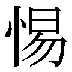

| ［新釈］楽訓 人生を楽しく生きる知恵 | |
| 童門冬二 | |
| PHP研究所 (2010) | |
［新釈］楽訓
――人生を楽しく生きる知恵
童門冬二
目次
『楽訓』の原文は『益軒全集』（国書刊行会）より引用しています。
なお、引用文中のパーレン内は筆者注です。
随分前だが、あるジャーナリストが、
「下から読む新聞」
というコラムを書いた。下から読む新聞というのは、新聞を読むときに一面のトップ記事から読むのではなく、最下段の本の広告から読むということだ。若いころのぼくは、これがひどく面白い説に思えた。そこでぼくも、新聞は下から読むことにした。この癖が数十年続いた。ところがいまは年齢も八十歳を超えたので、下から読むという癖は変わらないが、面が変わった。面が変わったというのは、社会面の死亡記事を最初に読む癖がついたことである。黒線の付いた死亡者は、知っている人もいれば知らない人もいる。ぼくが眼を着けるのは死者の年齢だ。ぼくより高齢な人の場合にはそれほど気にしない。むしろほっとする。つまり、
（この年齢までは、おれもまだ生きられるだろう）
と思うからだ。しかしぼくより年下の人が亡くなった記事はやはりドキリとする。
（おれより若くしてこの人は亡くなったが、大変立派なことをしてきている。そこへいくと、おれはただ 徒 に馬齢を重ねているだけだ。恥ずかしい）
と思う。
昔の人は人間の生涯を、
「起承転結」
と考えた。社会に出たときの年齢を基準にすれば、起は二十代、承は三十代、転は四十代、そして結が五十代以降ということになる。しかしぼくはあるころから、
「いまのようなＩＴ社会を生き抜くのには、もう結を五十歳代と考えるのは無理だ」
と思うようになった。事実、昔は〝 人生五十年〟 という考え方で、大体五十代でピリオドが打たれた例が多かった。しかしこれも克明に調べてみると、歴史上の人物も案外長命だ。そして現代に生きる人々はさらに平均寿命が延びている。そうなると、五十代でピリオドを打つのは現実に合わない。そこでぼくは、
「もはや、人間の一生に結などというものはなく、あるのは転だけだ」
と思うことにした。つまり人生は「起承転々」なのである。最後の「転」は個人差があって、一様には言い切れない。古代中国の大思想家孔子でさえ、つぎのように述べている。
「子曰く、吾十有五にして学に志し、三十にして立ち、四十にして惑はず、五十にして天命を知り、六十にして耳 順 ひ、七十にして心の欲する所に従へども、 矩 を 踰 えず」
人間の一生をその時の年齢に応じて、社会に対する責務と自分の心構えを述べたものだ。一般に、孔子のこのわけ方を、十五歳を 志 学 、三十歳を 而 立 、四十歳を 不 惑 、五十歳を 知 命 、六十歳を 耳 順 、七十歳を 従 心 と呼んでいる。八十歳を超えたぼくは当然七十歳の〝 従心〟 を自分の心得として応用しなければいけないのだが、これができない。従心というのは、
「七十まで年齢を重ねれば、自己精進の成果が得られ、何をやっても間違いはないはずだ。したがって、自分の思うままに生きてよい。思うままに生きても、決して間違いは犯さないはずだ」
ということである。孔子先生は厳しい。というのは、ぼくは八十になってもこの「七十歳の従心」の心構えが全然できていないからだ。つまり〝 未熟な人間〟 なのである。未熟な人間は学ばなければいけない。ぼくはテキストとして、江戸中期の学者佐藤 一 齋 の本をしきりに読み漁った。佐藤一齋は八十八歳まで生きた長命の学者だ。したがって、一齋も年齢に応じていろいろなことを書いている。『 言 志 四 録 』はその年齢に応じて書いたことをまとめたものだ。晩年のものもある。だからぼくは、とくに高齢者用に書かれたものを 貪 るように読みふけった。しかし、一齋先生は多くの門人を持ちその学風も、
「陽朱陰王（表面では朱子学を教え、陰で王陽明の陽明学を教えている）」
といわれた。一齋は徳川幕府の、いまでいえば国立大学ともいうべき昌平坂学問所の筆頭教授だから、これはいろいろと問題になったにちがいない。しかし、かれの子供のころからの学び友達であり、遊び友達であった林家の当主 述 齋 が、当時幕府の 大 学 頭 であり、また昌平坂学問所の経営者でもあったから、この辺は政治的にうまく切り抜けたのだろうか。したがって一齋の門人にはユニークな人がたくさんいる。山田 方 谷 や佐久間象山、あるいは大塩平八郎や西郷隆盛などである。山田方谷と佐久間象山は塾で始終喧嘩していたし、大塩平八郎は幕府に反乱を起こした。西郷隆盛に至っては、徳川幕府を倒した。しかし隆盛は、『言志四録』の中から自分が座右の銘としたことばを選び出し、編集して大切に懐にしまっていた。佐久間象山は大塩平八郎の反乱を知って、
「大塩のような人間を出すから、陽明学はだめなのだ」
といった。こういうようにいろいろな人物が門下から出るというのは、それだけ佐藤一齋の学風に広がりと深さがあったからだろう。
しかし残念ながらぼくの頭は一齋先生の教えを十分受け止める部品が欠けているらしく、
「これだ！」
と、現在の自分の年齢に応じた生き方の指針が得られない。必死に求めてはみるが、なかなか手ごたえをつかむことができない。次第に 苛 ついてくる。
そんなときに、ＰＨＰ研究所の担当編集者が、
「 貝 原 益 軒 の『楽訓』を現代風に意訳して、ご自身の経験に照らし合わせながら、多くの人に読んでいただけるような本を書きませんか」
と声をかけてくれた。残念ながら貝原益軒の『楽訓』という本をぼくは知らなかった。中央公論社が出している『日本の名著』は一応全巻そろえて持っている。書棚を探すとその「十四」に「貝原益軒」というのがあって、ページを繰ると確かに『楽訓』がある。松田道雄先生が責任編集されている。原文の現代語訳もなさっている。松田道雄先生といえば、随分前に〝 赤ちゃん〟 に関する岩波新書を出されて、この本は一躍ベストセラーになった。また中央公論社だったと思うが、世界思想の全集が出たときに、松田道雄先生はたしか「レーニンとトロツキー」の対比論を展開されていたと思う。モスクワの丘に登った二人が、そういうことがあったのかどうか知らないが、トロツキーは、
「革命を成功させるためには、都市部に一旦資本主義を実現させて、それがいかに悪であるかということを、民衆に教えることも大切ではないか」
というようなことを主張する。しかしレーニンは、
「いや、革命は農民層から始めるべきだ」
という応酬をした描写があった。印象深く覚えている。
しかし、松田先生のご努力の成果を、そのままパクるわけにはいかない。そこで原文探しに取り掛かったがなかなか見つからない。担当編集者も懸命に動いてくれて、やがてどこかの図書館で原文を発見し、そのコピーを届けてくれた。担当編集者はまだぼくの年齢の半分以下のはずだ。そんな若い女性が、貝原益軒の『楽訓』に注目する姿勢も面白い。ぼくは引き受けた。もちろん、
「貝原益軒の老人論から、何かを汲み取ろう」
というぼく自身の動機が強く働いていたことは確かである。
日本人の多く（とくに高齢者）は、多かれ少なかれ古代中国から伝わってきた「儒教」の影響を受けている。人の道とか倫理とか道徳などの根源は、すべて儒教から得ている。その儒教に宇宙論がある。その説くところは、
「宇宙の生成はすべて陰陽の気によって成り立っている」
という説だ。
貝原益軒の『楽訓』を読むのに、別な本（『 神 祇 訓 』、後述）を参考に読んだら、驚くべきことを益軒が主張しているのを発見した。それは、
「日本は、中国のはるか東方にあるが、これは決して 東 夷 の国ではない」
と言い切っていることだ。東夷の国というのは、もともと中華思想から生れた。中華というのは、
「自国が世界で最も文化の優れた国である。したがって、東西南北の周りの国は中華の国よりも劣るエビスの国だ」
という自信たっぷりの主張だ。東のエビスを東夷といい、西のエビスを 西 戎 、南のエビスを南蛮そして北のエビスを 北 狄 と称した。だから、中華の本拠である古代中国から見れば、日本は東夷に当たる。中華人民共和国という国名にも、この誇りと自信が残っているのではなかろうか。貝原益軒は、
「日本は確かに中国の東方にあるが、決して東夷ではない」
という。なぜかといえば、
「東方に位置する日本は、陽の気が沸き立つ国なのだ」
と言い切る。この発想は面白かった。同時に、この年になってやっと日本という国に自信が持てた。
そしてこの話を知ってふっと思い出したのは、黄門と呼ばれた水戸徳川家の二代目藩主 光 圀 が、「 日 立 」という地名を思い立ったときのことだ。光圀が支配した地域はいまの茨城県だ。領内を巡遊していたときに、たまたま太平洋岸に出た。朝、海の彼方から昇り立つ太陽の輝きを見た。光圀は感動した。そこで、
「ここは日が立つ国だ。この地域を日立と称するようにせよ」
と地名にすることを命じた。ちなみに常陸国は、その克明な国勢調査の報告書である『風土記』の中で、
「常陸国は、日本の 常 世 の国である」
と書かれている。常世の国というのは、人間が絶対に死なない不老不死の国をいう。つまりユートピアだ。古代中国の秦の始皇帝が、この不老不死の薬が生えている東海の島の中にある 蓬 莱 山 を探せと、家臣の 徐 福 という男に命じた。徐福は蓬莱山がある島を日本と見定め、やって来た。現在、佐賀県や和歌山県に徐福関係の史跡が残っている。墓まである。墓があるということは、徐福がついに不老不死の薬を探せなかったということだ。しかし、ぼくは沖縄にいったときに、那覇市のあるホテルに据えられた大きな屏風の中に、漢文が書いてあってその中に、
「秦の始皇帝が言った蓬莱山は、実は琉球国にあった」
と書いてあるのを見てびっくりした。しかし中国からの地理的位置を考えると、一次的には琉球国の方が想定しやすい。徐福がもしも常陸国まで来ていたらまたその考えが変わったかもしれない。
さて、日本国にこういう前提を置いた貝原益軒は、『神祇訓』という本の中で、このことをつぎのように詳しく述べている（現代風に意訳する）。
・日本の地理的位置は東方にある
・しかし、東方は東西南北の初めで、陽気の生ずる初めであり、すなわち万物の生じる 本 である
・したがって、そこに生ずる人も、その盛んな陽気の影響を受ける。 神 人 が多い
・これが日本の風土と人間とが、諸夷にまさるゆえんだ
・陽気の影響を受けるから、この国に住む人々の心は温和だ。はげしくはない
・その気質は順正で道を大切にし、道徳が行き渡って秩序が保たれている。したがって教えやすい
・神代は社会が素朴で人間が親切だった。神が国を守るから民衆もこれを見習い、別に教えを受けるわけではないが道に近い生き方をしている
・刑罰はない。しかし犯罪はまれだ
・人々の心は素直だから、古い時代から日本には仁・義・礼・智・信の五常の定めは別になかった
・同時に君臣・父子・夫婦・長幼・朋友の五倫の教えもなかった
・五常と五倫の教えがないといえば、それは 夷 狄 （野蛮人）の風俗になるが、しかし日本国の人々は教えがなくても道がおこなわれていた。これは諸夷よりすぐれている
・東方は陽の初めだから、その気は盛んだ。また明らかだ
・そのために民の心に仁があり、人をあわれみ、人を殺すことを好まない。義があって節を守るから、それぞれの志は弱くない。武勇があり、中国でいう諸 狄 よりすぐれている。礼があって、諸国の人にも礼法正しく交わる
・陽の気が盛んで、人々の心が清いから、もっとも明らかで外夷の人のように愚かではない。信があって嘘が少ない。人を騙すことを好まず、約束したことは必ず守る
・これが五常の性のあついところだ。外夷の五常の性のうすいにくらべれば、大いにまさっている
・儒教の教えについてもそうだ。昔から日本には忠臣・孝子・節婦などが多い。朝廷もしばしばこれらの人々を褒め給うたことが歴史に見えている。したがって、日本は昔から道のある国だ
・にもかかわらず、五常と五倫の教えがないのは、人の世になってから孔子や孟子のような聖賢がいなかったからである
・それもこれも、繰り返すが日本の国が東方にあって、陽気の発生するところに位置しているからだ
この考えからすれば、貝原益軒の、
「日本の位置とその性格」
は、中華思想をはるかに超えている。というよりも中華思想を否定している。そのうえ貝原益軒は、
「日本は東夷どころではなく、東方に位置することによって陽の気が沸き立つ国だ」
と胸を張っている。そして、
「五倫五常の教えはないが、日本人はすべて五倫五常で教える人間の道をはるか昔から守っている。つまり、聖賢に教えられなくても、自ら自覚してそういう人の道を守っているのだ。だから歴史の上でも、そういう道を守った人々がたくさんいて朝廷からも褒められてきた」
と例証する。一言でいえば、
「日本国は、はじめから理想国なのだ」
という主張だ。
長々と、あまり馴染みのない「日本国論」を紹介した。しかし、なぜこういう説明を最初にしたかといえば、貝原益軒の『楽訓』は、ここに書いたような考え方を下敷きにしているからである。いってみれば、
「『楽訓』を読むのには、まず日本国とその国に生れた日本人である自覚を持つにあたって、こういう観点に基盤を置いた方がわかりやすい」
ということなのである。つまり、
「まず、日本人という意識に大きな自信を持つことが大切だ」
ということだ。昔の歴史をかじった人には、
「また古臭い日本神国論を繰り返すのか？」
といわれるかもしれない。しかし貝原益軒のいう日本国論はそうではない。
「日本は神の国よりも、人の道を守る人間たちで構成されている国なのだ」
ということで、神国論とは全くちがう。神の超自然的な力によってそういう条件が満たされたのではない。そうではなくて、そこに住む一人ひとりの努力によって、その努力の総結集されたものがこういう理想郷をつくりあげているということだろう。しかし実際の日本を見てみれば、貝原益軒のいうような国でないことはだれもが承知している。おそらく益軒が生きていた江戸時代初期においてもそれは同じだっただろう。そうなると、
「益軒のいう理想郷を前提として『楽訓』を読む」
ということは、その前提がまず満たされていなければならない。具体的にいえば、益軒のいう〝 人の道〟 が、全土にわたって実現されていなければならない。ということは、
「人の道をすべて実現する努力」
が求められる。したがって『楽訓』を読み、それを自分の血肉とするためには、前提としてのこの努力が、読む人一人ひとりに求められているということにもなる。だから、私たちがいま『楽訓』を読むのには、
「すでに用意されている据膳の上の食物を、好き勝手に食べればよい」
ということではない。お膳立てそのものもわれわれ自身がおこなわなければならない、ということなのだ。
最近読んだある本にこんなことが書いてあった。
「祈りとか願いによって得られるのは〝 そう努力するチャンス〟 を得ることだ」
という一文である。われわれが祈ったり願ったりするのは、
「あることを得たい」
という気持からだ。しかしこの一文は、
「たしかに願ったり祈ったりすれば、人間は何かを得るだろう。しかしそれは得たいものがそのまま得られるのではなく、得たいものを得ようとする努力のチャンスが得られるのだ」
ということだ。ぼくはこの一文を読んで大いに目から鱗が落ちた。また新しい考え方を教えられた。
「願うということは、そのものを得るための努力のチャンスが与えられることだ」
ということに思い至らなかった。祈ったり願ったりすることは、即物的にそのもの自体を得ることだとばかり思い込んでいた。それがそうではなく、
「そのものを得ようと努力するチャンスを与えられたのだ」
ということは、ハードルを一段下げられた意味でもあるし、また、
「努力を 怠 って、すぐそのものを得ようとする横着な心を戒めることば」
でもあった。
今度、貝原益軒の『楽訓』を読むに当たって、ぼくはつくづくこのことばの正しさを思う。したがって長々と紹介した益軒の、
「日本国の優れている点」
は、そのまま 鵜 呑 みにするわけにはいかない。日本が東方の気の発するところであって、人々が孔子や孟子がいなくても、聖賢のいう〝 人の道〟 を守り、すでに実現済みの理想郷をつくっている、という言い切り方は、
「日本人が、まずそういう努力をしなければいけない」
ということだ。だから『楽訓』を読んでも、すぐ、
「老人としての楽しみやよろこび」
が得られるわけではない。楽しみやよろこびを得るためには、
「それを受容する容器づくり」
が求められるということである。そうなってくると、この『楽訓』は、寝転がって気楽には読めない。『楽訓』に書かれたことは、総体的に、
「楽天的で、現状肯定の気楽さ」
に満ち満ちている。読みようによっては、どんなに苦しみ悩む人間に対しても、
「おまえさんにはこういう良いところがあるのだから、そんなに悲観したり苦しんだりする必要はないよ」
と、益軒が親切な救いの手を伸ばしてくれているようにも思える。しかし益軒の目的はそうではあるまい。そういう楽天的で気楽なことをいいながらも実は、
「そのよろこびや楽しみを受容するに値するようなことを、おまえさんはいままでしてきたのか、またしているのか？」
という厳しい問い掛けをしているようにも思える。一言でいえば、前に書いた日本国と日本人の優越性を構築している〝 人の道〟 を、
「おまえさんは、その実現に努めてきたか、その実績はどうなのか？」
と問いただされているような気になるのだ。が、『楽訓』は、貝原益軒による、
「現代人に対する詰問」
の書ではない。むしろ励ましと勇気づけの書である。そうでなければ、ぼくが改めて『楽訓』に、好き勝手な解釈をつけて読者の前に提供する意味はない。
能書きが多くなった。ここから、
「ぼくが益軒の『楽訓』からとくに学んだ高齢者への勇気づけ」
の数々を紹介したい。最初にお断りしておくが、この本は決して『楽訓』の忠実な訳文ではない。それよりもぼくが好き勝手にあちこちから、
「いまの高齢者に対する励ましと勇気づけのことばや考え方」
を拾い出して紹介するものである。したがって、かなり自分勝手な解釈や独断的な意味づけをしているかもしれない。お許し願いたい。「楽訓」という題に示されたとおり、これは益軒が、
「人生の楽しみ方」
を、相当年をとった人たちを意識して書いたものだ。いってみれば、「論語」にいう「従心」的な境地に達した人を、対象にして書いたものだろう。従心というのは前にも書いたが、
「心に従って生きても 最 早 後悔はない」
という境地に達した人間のことをいう。が、この本を書いているぼく自身が、自分の心に従って生きれば安心感が得られる、などという境地に達していないことはいうまでもない。まだまだ、
「 惑 惑 していて、一向に安心立命の境地に達し得ない、甲斐性のない存在」
としてのぼくが、そうかといって諦めることもせずに、
「依然として 足 掻 き、もがく日常を送り続けている」
という状況の中で、一本の藁にもすがるような思いでこの『楽訓』を読み通した、いわばぼくの〝 精進ばなし〟 なのである。
それではまず『楽訓』の冒頭から、
「ぼくが得た教え」
のひき方を、実際に楽屋裏（ぼくの手法）のご披露もかねて、書いてみよう。冒頭の原文はつぎのとおりだ。
あめつちのめぐみをうけて、いきとしいけるもろもろきはまりなき に、人ばかりたふとき物なし。いかんとなれば、人は萬物の靈なればなり。されば人とかく生れきぬる事、いたりて得がたき幸なり。しかるにわが輩おろかにして、人の をしらざれば、天地より生れ得たる人の心をうしなひ、人のゆくべき をばゆかで、ゆくまじき にまよひ、あさゆふ心をくるしめ、其上わが身に私して人に情なく、おもんぱかりなくて、人のうれひをしらず、いたりてちかき父母につかへてだに、其心にかなはず、およその人倫にまじはりて をうしなひ、人と生れたるたふとき身をいたづらになし、鳥獸と同じくいき、草木と共にくちなんこそほい（本意）なけれ。顏之推が人身は得がたし。空しく過す事なかれといひけん事、心にとヾむべし。この故に人はいとけなきより、いにしへのひじりの をまなび、我が心にあめつちより生れ得たる仁を行ひてみづから樂しみ、人に仁をほどこして樂しましむべし。仁とは何ぞや、あはれみの心を本として、行ひ出せるもろ の善をすべて仁と云。仁とは善の惣名也。仁を行ふは是（これ）天地の御心にしたがへる也。是すなはちいにしへの 人のをしへ給ふ人の なり。此（この） にしたがひてみづから樂しみ、人を樂しましめて、人の を行はんこそ、人と生れたるかひ有て、顏之推が云けん空しく過すのうらみなかるべけれ。
この冒頭の文を読んで、ぼくが感じたのはつぎのようなことだ。この文章はいわば「意味を持った短い文章のかたまり」である。映画でいえばシーンの連続によるシークエンスのようなものだ。そこで、それぞれのシーン（短い文章）の中から得た教訓を並べてみると、
・人間に生れたことの楽しみ
・それなのになぜ楽しくないのかという反省
・楽しくない理由の列記
・そこで、楽しく生きるための自身の現状改革の方法
が述べられていると思う。人間に生れた楽しみというのは、いままで書いてきたように、つぎのように整理できるだろう。
・世界の東方に位置して、陽の気が発生する地域である日本に生れたよろこびがそのまま楽しみに 繋 がる
・にもかかわらず楽しくないのは、人の道を知らず、天と地が与えてくれた人の心を失って、人間として歩むべき道を歩まずに、いってはいけない道を歩いているからだという。それによって心が苦しめられるのは、自分の欲ばかり突っ張っていて、人に愛情を持つことなく、考えも浅く人の苦しみをわかろうとしないからだという
・身近なところでいえば、自分の親に対してもその心にかなわないことばかりしている。人間関係においても道を失って、大切な体を傷つけたり、鳥や獣と同じような生き方をし、草木と一緒に滅びてしまうのはほんとうに情けないことだ
・ 顔 之 推 （中国の思想家）が、
「人間の体というのはなかなか得がたいものだ。だから時を空しく過ごしてはいけない」
といったことばを心にとどめよう
・だから楽しくこの世を送るためには、小さいときから聖人の道を学び、天地からもらった〝 仁〟 をおこなうことが大切だ
・日々仁をおこなえば、自分も楽しみ人を楽しませることもできる
・では仁とは何か。これはあわれみの心を 本 におこない、すなわち善のことをいう。仁というのは善の総称だ
・そして仁をおこなうことこそが、天地の心にしたがうことなのだ
・すなわちこれが昔の聖人のいう人の道なのだ
・この道を歩むことによって、自分も楽しみ人も楽しませることができる。人と生れた甲斐といっていいだろう。人の道をおこなうのがすなわち人間に生れた甲斐ということになる。これができれば、顔之推のいった〝 空しく時を過ごす〟 という悔いもなくなるはずだ
ここでぼくが思い出すのは、「論語」の中にある「 恕 」という字にまつわるエピソードのことだ。孔子の門人の中で、ある日こんなことをいう者がいた。
「先生、わたくしは先生の門人の中でも一番頭が悪いと思います。しかし、死ぬまで正しく生きたいという気持は強いものがあります。このようなわたしにたった一字を守ることによって、正しく生きられるという字がありましたらお教えください」
むしのいい願いだ。しかし孔子は微笑んで、
「それ恕か」
といった。孔子の「か」というのは疑問ではない。「だよ」という断定のことばである。したがってこの門人に対して孔子が教えたのは、
「おまえが求める一字は恕という字だよ」
と告げたのである。恕という字を漢和辞典で引くと、「ゆるす」とある。そしてつぎの行に「常に相手の立場に立って物を考える優しさと思いやりのことをいう」（角川漢和中辞典）と書いてある。孔子が教えたのはおそらくこの「優しさと思いやり」のことだろう。
益軒が『楽訓』の冒頭に書いた文意も「恕」の精神を持てということだろうと思う。ぼくはさらにこの「恕」ということばを、孔子よりかなり後に生れた孟子の〝 忍びざるの心〟 に結びつけている。孟子が生れたのは一般には孔子より二百年後とされているようだから、まさかそんなことはないと思うが、ぼくはひとつの空想をしている。それは孟子は孔子を尊敬していた。しかし、
「恕の一字は大事だが、何といっても一般庶民向けではない。難しすぎる。いちいち解釈をしなければわからないようでは孔子先生の本当の気持も伝わらない。これをもっとわかり易くしよう」
と考える。そこで孟子は、恕の一字を〝 忍びざるの心〟 と砕いて説明した。忍びざるの心というのは、
「他人のかなしさや苦しみをそのまま見るに忍びない」
ということであり、そう考えれば、
「何とかしてあげよう」
という気持に発展する。孟子はこれを、
「人間のだれもが持っている心で、他人の危難を見たときにたちまち救いに飛び出していく〝 衝動〟 をいう」
と説明した。この〝 衝動〟 は、人間のだれもが持っているのだ。それを『楽訓』では、つぎのように説明する。
およそ人の心に、天地よりうけ得たる太和の元氣あり。是（これ）人のいける理（ことわり）なり。草木の發生してやまざるが如く、つねにわが心の にて、機のいきてやはらざ（ぎ）、よろこべるいきほひのやまざるものあり。是を名づけて樂と云。是人の心の生理なれば、即是仁の理なり。只賢者のみ此（この）樂あるにあらず、なべての人も皆これあり。されどまなばざれば此樂をしらず。易に百姓日々に用てしらずといへるが如し。又私慾にわづらはされて此樂をうしなふ。ひとり賢者は此樂をしり、又私慾のわづらひなくして樂を失はず、只人のみこの樂あるにあらず。鳥獸草木にも此樂あり。草木のおひしげり、花さき、實のり、鳥のさへづり、獸のたはぶれあそび、鳶の飛んで天にいたり、魚のふちにをどるも、皆此樂を得たるなり。されども衆人すら此樂をしらずして失へり。いはんや鳥獸は云に及ばず。
この文章からぼくが感じ取ったのはつぎのようなことだ。
・人間の心にはだれでも天地から貰った最高の和の気（エネルギー）がある
・この気（エネルギー）が人間を生かす道理だ
・そして、この気は植物が生長してやまないように、いつも心の中で天機が生きている。それはやわらぎのパワーといってよく、そのパワーがあるために楽しみがたえない。つまり楽しみというのは人間のだれもが持っているこの〝 心の気〟 をいうのだ
・そして、この気のエネルギーをたやさないのは仁の理なのだ
・したがって、気の本が仁であれば、衆人や賢人だけがこの楽しみを持っているわけではない。どんな凡人でもすべての人間がこの気を持っている
・しかし、この楽しみは学ばなければ得られない。学ぶということは、他人に対し、あるいは社会に対し〝 仁〟 をおこなおうとする努力のことである。この努力はまず私利私欲を捨てることによって得られる
・そしてこの楽しみは、人間だけが持っているわけではない。鳥や獣や植物もすべてこれを持っている。それは、植物が生長して 生 茂ったり、花が咲いたり、実が成ったり、鳥がさえずったり、獣が戯れ遊んだり、鳶が天高く飛んでいったり、魚が水の深いところでおどるのも、皆それぞれこの楽しみを得ているからである
・にもかかわらず、植物や鳥や獣がそういうように楽しんでいるのに、人間だけがこの楽しみを失っている。なぜだろうか。こういう現象は、鳥や獣にも劣るといっていいだろう
「楽しみ」という益軒独特のことばを提起しながら、それが、
「人間だけが持っているわけではない。この世に生きとし生けるもの、つまり生命を持つものすべてが持っているのだ」
という断定は、非常に勇気を与えてくれる。つまり、人間も自然の一部であり、草や木も鳥や獣も、
「すべて人間の仲間だ」
と思えば、心の広がりと深さを感ずる。
夏目漱石のある作品の中に〝 ひばりの詩〟 というのが引用されていた。おそらく英文学者である漱石が訳したのだろうが、原作はシェレーというイギリスの詩人だ。つぎのように訳されている。
前を見ては 後 を見ては 物欲しと憧がるるかな吾 はらからの笑いといえど よろこびの極みのはてに かなしみの極みの思いこもるとぞ知れ
詩の意味を詩にはうたわれていない部分の補足も含めて、ぼく流に要約すればつぎのようになる。
・ひばりが空にとどまっているのは、羽を動かしてとどまっているのではない。ひばりが空を飛んでいるのは、さえずりによってだ
・しかしそのさえずりも、聴く者にすれば「ひばりがよろこんで歌っている」と思うかもしれないが、ひばりにすれば決してそうではない
・ひばりがしきりに口を動かしているのは、かなしみを歌っているのだ
・だから、聴く者によっては「ひばりがよろこびの極みを歌っている」と思うだろうが、ひばりにすれば「ちがいますよ。わたしが歌っているのはかなしみの極みなのです」というだろう
この詩の持つ哀調は、口ずさむ者にとって深く心に染み入ってくる。ぼくの好きな詩のひとつだ。
この訳詩は、益軒のいうように、
「鳥であるひばりも、すでに楽しみを持っている」
ということが前提になっている。だからこそひばりはさえずるのだ。しかしこのシェレーの詩では、
「ひばりは決してよろこびを（つまり楽しみを）歌っているわけではない。ひばりはひばりなりの深いかなしみをさえずっているのだ」
ということになる。
・そうなると、ひばりは自分が生来持っている楽しみを楽しむすべ（術）を失っているか、間違えているのだろう。本来よろこびを楽しめるはずなのに、それがかなしみになっているというのは、ひばり自身の自己改革の努力がまだ実っていないということだ
そんなことを考えると、ここで益軒のいう、
「楽しみは生きとし生けるもの、すなわち生命を持つものすべてが持っている」
とはいうものの、
「では、その楽しみをどうすれば自覚できるか、楽しめるか」
ということになると、それぞれの個において、やはり問題があるような気がする。これは、
「楽しみを楽しむための努力を続けるチャンスを、最高に生かすことが必要だ」
ということだろう。ぼくのような高齢者にとって、すでに孔子のいう〝 従心〟 の年齢期にありながらも、いつまでたっても、
「自分の心にさえ従えない、不甲斐ない状況」
には、やはりもどかしさを感ずる。ぼくのような修行不足の者には、死ぬまで、
「自分の持っている楽しみを楽しむことができないのだろうか？」
とさえ思ってしまう。
人の心の にもとより此（この）樂あり。私慾行はれざれば、時となく所として樂しからずと云事（いうこと）なし。是（これ）本性より流れ出たる樂なり。外に求るにあらず。又わが耳、目、口、鼻、形の五官、外物にまじはりて色を見、こゑを聞き、物くひ、香をかぎ、うごき、しづかなる五のわざ、欲少くよきほどに過す。されば、あふさきるさ（ 逢 うさ 離 るさ）、こと に樂しからざる事なし。是外物を以（もって）、樂の本とするにあらず。又（また）外物にふれて其よろこばしきちからを得て、樂はじめていでくるにもあらず、もとより人の心の に生れ付たる樂あるゆゑ、外物にふれて其助を得て、 なる樂さかんになれる也。たとへば人にもとより生れ付たる元氣あり。是生命の本なり。されど飮食衣服などの外よりの養（やしない）なければ、うゑこゞえて元氣を保ちがたし。外物の養を以て、 の樂を助くるは、外にある飮食衣服の養を以、 なる元氣を助くるが如し。又心の に此樂あれば、飮食などの外のやしなひも皆樂の助となる。しかのみならず、朝ゆふべ目の前にみちたる天地の大なるしわざ、月日の明らけき光、四時のめぐりゆく序にしたがへる、折々の景氣のうるはしきありさま、雲烟のたなびける朝夕の變態、山のたゝずまひ、川のながれ、風のそよぎ、雨露のうるほひ、雪のきよき、花のよそほひ、芳草のさかえ、嘉木のしげれる、鳥獸蟲魚のしわざまで、すべて萬物の生意のやまざる、是をもてあそべば、きはまりなき樂なり。是に對すれば其心を開き、其情を くし、 心を感じ興し、鄙吝（ひりん）をあらひ盡すべし。是を天機に 觸 發 すと云。觸發とは外物にふれて善心をおこすをいへり。是外物の養をかりて の樂をたすくる也。
この文章の中からぼくが学んだのはつぎのようなことだ。
・人間は、天から与えられたよろこびを自分の体の内に秘めているが、ただそれだけではよろこびは得られない。つまり、自分で自分の体内にあるよろこびをただ掘るだけでは楽しめない
・やはり、人間は生きていく上で暮らしの中から一種の助長剤や触発剤を得なければ、楽しみも楽しみとして機能しない
・だから、物を食べたり飲んだり、あるいは衣服によって寒さや暑さを防いでもらうことも、人間が内に秘めている楽しみを純粋に保ち、それを楽しむことができるためには必要なのだ
・そして、人間を取り囲む自然の折々の現象も、この助長剤や触発剤になっている
・しかし、それを助長剤や触発剤と思うためには、こっち側の心構えがいる。つまり、自然の動きや、鳥や獣、あるいは植物の生命の動きについて、やはり深い関心を寄せなければ、体内のよろこびも埃をかぶってしまう
・自分の持っている楽しみを楽しみとして認識し、それを実際に楽しむためには、この自然の営みに対する深い感動と敬愛の念を持たなければだめだ
・つまり、外からの働きかけは、人間が本来持っている楽しみの存在に気づかせてくれたり、育ててくれているのだ
・それに気がつけば、育ててくれる存在やそのおこないに当然注目するはずだ
・それは、こちらの心が飲食や衣服にさえ動くということである
・心が動くというのは、助長剤や触発剤に対する感謝の気持の表れなのだ
・そういう気持が 湧 けば、自分の持っている楽しみがいかに貴重なものであり、それを楽しむことが生きるよろこびを深めてくれるということに気がつくだろう
括 っていえば、
「この世の中に存在するものはすべて楽しみを内に秘めているのであって、しかも、その楽しみ同士が出力・入力となって、相乗効果を起こすことが、余計楽しみを深めるのだ」
ということである。別な言い方をすれば、
「この世に存在するもので、楽しみと関わりのないものはない」
ということなのである。益軒の『楽訓』は、こういうように、人間に対して、
「何ごとにつけても、すべて前向きに生きよう」
という能動性と向日性を持っている。つまり、この世を生き抜こうとする積極思想なのである。しかし、原文で、
學ばざる人は、 にある樂をしらず。又（また）外なる樂をむなしくす。 外二（ふたつ）ながら失へり。
と、益軒は警告する。これは、
「（前節に書いた）人間の内部にある楽しみと、外部からの助長剤・触発剤の相互作用は、学ばなければ得られない。内部と外物との交流も絶え、相乗効果もおこなわれない」
ということだ。つまり、せっかく生命があり、生き生きと活動するはずの楽しみも、学ぶことを 怠 ければ、結局は死んだも同じになってしまうということである。では、一体何を学べばいいのだろうか。
人やゝもすれば樂の字を 給へり。其故をいかんと思ひ、樂の身にせち（切）なる事をしるべし。禮經にも、心中しばしも和（やわら）がず樂しまざれば、いやしき心生ずといへり。此（この）樂を失はざれば、きたなき心おこらず。此故（このゆえ）におよその人さかしおろかなる、皆この樂を求むべし。只賢者にゆづるべからず。此樂 にあれば、 の身をうるほして、心ひろく體ゆたかなる事、あたかも富の家をうるほすが如くなるべし。
昔観た映画で主人公がつぎのようなセリフを口にしたことを覚えている。
「人間には、品性の人と品行の人とがある。品性の高い人は、多少品行が悪くてもわたしは認める。でも、どんなに品行がよくても品性の悪い人は認められない」
なかなか考えさせられることばだ。この節で貝原益軒がいう、
「心中しばしも和がず楽しまざれば、いやしき心生ずといへり。この楽を失はざれば、きたなき心おこらず」
というのはまさしくこの〝 品性と品行〟 のことに繋がるような気がする。人間はやはり生れてから死ぬまで、
「自分の品性をいかに高めるか」
ということに努力すべきであって、いわばそれが基本だ。品行というのは、手段と考えていいだろう。品性というのはその人間の質だ。したがって、質がよければ多少手段が悪くても許されるし、どんなに手段がよくても質そのものが悪ければ、やはり人間としての存在意義は薄れるということだろう。
益軒はここで、その質である品性をよくするのには何といっても〝 楽しみ〟 を持つことが有効だと説く。それさえきちんと持っていれば、いやしい心やきたない心を持って自ら自分の質を汚すことはないと言い切るのだ。では、ここでいう〝 楽しみ〟 を、どのように解釈したらいいだろうか。
益軒が冒頭でいう「聖人」というのは孔子のことだ。ついでに言えば、賢人というのは孟子のことである。だから聖賢といえば、すなわち「孔子と孟子」ということだ。
日本に聖人がひとりいる。〝 近江聖人〟 といわれた中江 藤 樹 だ。中江藤樹は子供のときから志を立て、それを学ぶことによって実現しようとした。若いころは、伊予（愛媛県）の 大 洲 藩主加藤家に学者として仕えた。そして、当時（江戸初期）の、時代の様変わりに対応して、平和な時代に生きる武士はどうあるべきか、ということを説いた。しかしまだまだ戦国の世風の残っているころなので、藩の武士たちは必ずしも学問を好まなかった。そして、失望したかれは独り暮らしをしていた母に孝行を尽くすために故郷の近江に戻る。ここで近隣の農民や漁民に学問を教えはじめた。しかしかれの教え方は、
「難しいことを 易 しく説く」
という方針で、多くの門人が集まった。この時かれは、
「人間はだれでも心の中に美しい鏡を持っている」
と説いた。そして、
「しかし、この美しい鏡も、持っている人間が私利私欲に走ったり、いやしい欲望などを持つと必ず曇る。鏡が曇れば、他人の気持や社会現象が正しく映らなくなる。したがって、この鏡はいつもピカピカに磨いておかなければならない」
と告げた。この、
「他人の心や社会現象を正しく映す鏡」
というのは、まさしく孔子の説く「恕の精神」や孟子の説く「忍びざるの心」のことだろう。恕の精神というのは、
「いつも、相手の立場に立って物を考える優しさと思いやり」
のことだ。忍びざるの心というのは、
「他人のかなしみや苦しみを見るに忍びない。自分のこととして考える」
ということで、これもまた〝 優しさと思いやり〟 のことだ。
近江聖人といわれた中江藤樹が、
「いつも心の中の鏡をピカピカに磨いておけ」
と告げたのはそういう意味だ。相手が難しいことを学んだことのない農民や漁民なので、すぐ理解できるような表現をとったのである。藤樹が基準にしたのは、
「孝の精神」
である。しかし孝といえばすぐ親に対する孝行と考えがちだが、藤樹はちがった。
「親に孝を尽くし、隣人に孝を尽くし、地域社会に孝を尽くし、そして国（この場合は藩）に孝を尽くす」
と説いた。孝の意味を拡大することによって、最終的には、
「この世の中が、互いに 労 わりあい、また何かを差し出すユートピアが実現できる」
と説いたのである。
ここで益軒がいうのも同じ意味だと思う。楽しめということは、心にゆとりがなければならない、また潤いがなければならないということだ。益軒は、
「楽しむことによって、心が和らぎ潤いを生ずる」
と告げる。つまり〝 ゆとりある心〟 を持つのには、やはり自分の内にある〝 楽しみ〟 を認識して、十分に活用すべきだという。これは中江藤樹のいう、
「心の中にある明鏡を、その名のようにピカピカに磨いておくことが大切だ」
ということだろう。鏡を磨くのは自分自身が欲望やいやしい心やきたない心を持たないという決意をしてその実現に努力することである。単純に、
「人間は他人に対して優しさや思いやりを持たなければならない」
といっても、簡単なことではない。口でいうのは易しいが、実行するのはなかなか難しい。しかしこの本の最初に書いたように、孔子は、
「人間は七十歳過ぎたら〝 従心〟 の立場に立ちなさい」
ということをどのようにすれば実行できるかということを模索している。従心というのは、自分の心に従って生きても、もはや間違いはない、という孔子の温かい考えだ。しかし、ぼく自身間違いがないどころではなく、間違いだらけだ。したがって自分の心に従って生きていたら、とんでもないことになる。至らぬ自分自身を世間にさらけ出すと同時に、他人にも大変な迷惑をかける。したがって、ぼくの場合には、
「従える心」
の〝 心〟 自身が、まだきちんと確立されていない。しかしだからといって絶望はしない。ぼく自身は、
「おれは 晩生 なのだ。したがって孔子のいう年齢区分にはまだまだ及ばない」
と思っている。であれば、
「一日も早く、自分が従える心を持てるように努力しなければならない」
と思っている。そのためには、益軒のいう〝 楽しみ〟 が得られるように、まず中江藤樹の告げる〝 明鏡〟 をしっかりと保ちたい。つまりいつも心の中の鏡をピカピカに磨いておきたい。いやしい心やきたない心を排除したい。が、それが完全に排除しきれないからいろいろともだえる。もどかしい限りだ。
しかし、これも前に書いたように、
「ある志や希望を抱いて、その実現を何かに祈ったり願ったりすることは、そのこと自体を得ることではない。それが得られるような努力をする機会をもらうことなのだ」
と思っているから、その辺は割合に楽な気持を持っている。バタバタしない。機会がもらえるということは、普段そのことすら気がつかなかったということである。したがって、今度『楽訓』を読んで、益軒から与えられるものは、ぼく自身が、
「そうしようとする努力の機会を与えられた」
という認識だ。
「そんな遠回りのことを言っていて、幸福なのか？ 時間がないだろう」
といわれるかもしれない。しかしぼくは幸福だ。そうする努力をする機会を改めて自分に設定することによって、またひとつ自分の、
「生命を完全に燃焼させるチャンス」
を得た気がするからである。もともとぼくは、自分の生き方について、
「起承転結」
という考えはかなり前に捨てた。いまぼくの歩む道は、
「起承転々」
の道である。転というのは単に転がるということではない。
「いま目の前にある問題について、手抜きをせずに真剣に取り組む」
ということだ。つまり、目前の事柄に集中せずに、あっちこっちにキョロキョロと目配りをしたり、いまいる場所が気に入らず、遠くの芝生へいこうという心を持つことが、藤樹のいう〝 明鏡〟 を曇らせることになるのである。一点集中型で対応していけば、必ずそれなりの成果は得られるはずだ。こういう心の状況を、剣豪宮本武蔵は、
「 間 を持つ（とる）」
といった。だから〝 間抜け〟 というのは、こういう間の持てない人間のことであって、正しくはのんびりした人間は逆に〝 間〟 を持っている人間なのである。こせこせと、ネズミのようにキョロキョロ動くものこそ、本当の〝 間抜け〟 なのである。
天地の御めぐみをうけて人となり、天地の御心をうけて心とせし人にしあれば、天地の御心にしたがひ、わが仁心をたもちて、つねに樂しみ、温和慈愛にして情ふかく、人をあはれみめぐみ、善を行ふを以て樂とすべし。人の惡をいましめんため、怒り詈（ののし）るは、やむ事を得ざればなり。つねには和樂にして其氣を養ふべし。されど又（また）和に專一にして禮なければ一偏にながれ、亂れて樂をうしなふ。
ここでは、益軒は、
「楽しめ、楽しめと言ってはいるが、楽しみ方にも一定の節度がある。それは礼に 違 うような楽しみ方は本当ではない」
という。
ここで益軒は、
「楽しみ方にもけじめをつけなければならない」
といっている。自分や他人が楽しむためには、
・仁の心を保ち、温和・慈愛を心がける
・他人には愛情深く、人をあわれみ、また恵み、善をおこなう
・しかし、悪を見た時は、その悪をおこなう人を怒り罵ることもやむを得ない
・が、普段は和楽を旨として、気を養わなければならない
・だからといって、和ばかりで礼が無ければ一方に偏ってしまう。そのことは、すなわち楽しみの秩序を乱してそれを失うことに繋がる
という。
他人に対し、恕の精神や忍びざるの心を持って、優しさと思いやりを発揮することはいいが、だからといって無制限にそういうことをしていると、悪いことをする人間がのさばる場合がある。そしてこっちの優しさや思いやりをいいことに、その悪行をいよいよ募らせる場合がある。そういう場合は断固としてこれを退け、戒めなければならないということだ。つまり、
「善と悪のけじめをはっきりつけなければ、仁の心が汚れてしまう」
ということだろう。
人のうれひ苦みをおもんぱかりて、人の妨となる事をほどこすべからず。常に心にあはれみありて、人をすくひめぐみ、かりにも人を妨げくるしむべからず。我ひとりたのしみて人をくるしむるは、天のにくみ給ふ所おそるべし。人と共に樂むは、天のよろこび給ふ理（ことわり）にして、誠の樂なり。
前からよく引用する〝 従心〟 を得たいがために、この時とばかり自己努力にだけ熱中して、周りのことを全く 慮 らないような努力方法も考えものだ、ということだろう。益軒がしきりに、
「楽しめ。その楽しみは自分の中にある」
というものだから、早くその楽しみを自己内に発見して、これを得ようと狂奔するあまり、努力そのものも独りよがりになって、周りを顧みないことが起きる。これが間違いだと益軒は指摘している。
芥川龍之介の短編に「蜘蛛の糸」というのがある。カンダタという悪人が、生前のおこないによって地獄に落とされ、毎日血の池で 喘 いでいる。ある日、お釈迦様がその光景を御覧になった。思い出したのは、カンダタが生きているときに、目の前を歩いている蜘蛛を踏み潰そうとして、思いとどまったことがある。つまり、カンダタは蜘蛛の生命を助けたのだ。そこでお釈迦様は、
「カンダタにもそういう善行があった。血の池から救ってやろう」
と考えて、スルスルと蜘蛛の糸を血の池にたらしてやる。これを発見したカンダタはよろこんで蜘蛛の糸に飛びつく。そしてせっせとのぼりはじめる。もう少しで極楽に着くと思ったカンダタが、ふと下を見下ろすと、驚いたことに血の池からほかの罪人がぞろぞろと続いてのぼってくる。カンダタはカッとした。思わず、
（このままにしておくと、蜘蛛の糸が切れてしまう）
と恐怖を感じた。そこで怒鳴った。
「降りろ！ この蜘蛛の糸はおれのものだ。さっさと降りろ」
その瞬間、蜘蛛の糸は切れた。そしてカンダタは再び血の池に落ちてしまう。いきさつをじっと御覧になっていたお釈迦様は、がっかりとして暗い表情になるという話だ。
この節でぼくが思い出したのは、カンダタのことだ。お釈迦様がたらしてくれた細い蜘蛛の糸をせっせとのぼっていくのはカンダタの努力である。いつ切れるかわからない蜘蛛の糸にすがって、一所懸命のぼるカンダタの努力はある意味で、
「細い蜘蛛の糸を信じようとするカンダタの心根」
があっていじらしい。しかしそれは所詮〝 自分だけの幸福〟 を願う営みであって、他の人間のことは考えていない。だから、カンダタがのぼる蜘蛛の糸を見て、
「おれたちも極楽にいこう」
と、蜘蛛の糸に飛びつくほかの罪人たちの存在に最初は気がつかない。それは、カンダタが早く極楽にたどり着きたいという一心で、わき目も振らずのぼり続けるからだ。カンダタ自身は、一体だれが蜘蛛の糸をたらしてくれたのか、またその理由は何だったのかをわきまえてはいない。彼自身、生きているときに一匹の蜘蛛の命を救ったことなど 疾 うに忘れている。カンダタ自身が、いつも蜘蛛の生命を救うようなおこないを続けていれば、あるいは初めからかれは極楽にいけたかもしれない。それは、
「たとえ小さな虫の蜘蛛であっても、その生命は尊い。だから踏み潰してはいけない」
という心を持って生きていれば、疾うの昔に自分の心の中にある〝 楽しみ〟 が発見できたはずだ。それがないからかれは地獄に落ち、血の池で喘ぐ結果になったのである。
しかし、それにしてもお釈迦様がカンダタのために蜘蛛の糸を一本たらしてくれたのは、カンダタにとっては、
「自分を変え、極楽にいける絶好の機会」
を与えられたことになる。であれば、カンダタはその機会を生かさなければならなかった。機会を生かすというのはどういうことか。
「自分だけでなく、他の人間にも楽しませる（幸福にする）」
ということである。ぼくは勤めていたころによくこういうカンダタと同じような状況に置かれた。芥川龍之介の作品を思い出すたびに、
「では、あの時カンダタはどうすればよかったのか？」
と考える。カンダタがもし、下からせっせとのぼってくる仲間たちに対して、たとえば、
「みんなご苦労さん、一緒に努力してのぼろうよ」
と、励ましのことばを掛けたらどうだったろうか。お釈迦様は、ほかの罪人も極楽へ入ることを認めてくれただろうか。それともカンダタだけがのぼりついた瞬間に、糸を切ってしまっただろうか。そういう、
「ひとりの人間の努力を超えるある力」
の存在がある場合に、それが運命といっていいかどうかわからないが、やはり考えさせられる事例なのだ。お釈迦様が全員を救ってくれればいい。しかしほかの全員がすべてカンダタのように、
「たとえ一匹でも小さな虫である蜘蛛の生命を救った」
というような善行があったかどうかはわからない。徹底した悪人も混じっているかもしれない。そんなときに、お釈迦様はどうするのだろうか。カンダタの立場に自分の身を置き換えてみると、ぼくはいつもこのことで壁に突き当たる。
しかし、この益軒の文章を読めば、ぼくのそんな惑いはやはり吹き飛ばさなければいけない。あくまでも、
「自分ひとりが楽しんで人を苦しめるのは天の憎むところだ」
ということばと、
「人と共に楽しむは天のよろこびでもある」
ということを素朴に信じなければならない。やはりカンダタは、下からのぼってくる仲間に向って、
「一緒に頑張ろうよ」
というべきだろう。それをいまの世の中にも生かすべきなのだ。たとえ、心の内に、
（いつ糸が切れるか？）
という不安があったとしても、その不安は自分で抑えつけなければならない。いや、もっといえば、はじめからそういう不安が湧かないような心を持たなければならないのだろう。そうするためにはやはり、
「天の存在と、その天がこの世に生れさせてくれた自分の存在」
ということに思いを致すべきなのだ。
此故（このゆえ）に天の にしたがひ、人の を行ひて、みづから樂しみ、人をたのしましめん事は、つねに善を行ひ惡を去（さる）を以てわざとすべし。かくの如くにせん事は、べち（別）のつとめなし、只ひじりの をまなんで其理（そのことわり）をしるべし。
ここには当り前のことしか書いてない。しかし、その当り前のことが実をいえば『楽訓』を読む上で非常に大事なキー（鍵）なのだ。益軒は淡々と何気なく書いているが、ここでいっていることは、
「特別な人間が歩く当り前の道」
のことだとぼくは思う。ややこしい言い方だが、益軒は日本国を、
「地球上の東方で、〝 気〟 の発生する地域だ」
といった。その意味でも日本国は特別な地域に位置する。いってみれば、大袈裟にいえば、宇宙を形成する〝 気〟 の根元が日本国だということだ。
「ばかばかしい」
とお思いになる方も沢山おられるだろう。しかし、前にも書いたように、秦の始皇帝が不老不死の薬草を探させた〝 蓬莱山〟 が、当時の秦から見れば「東方の海中に存在する島」という言い方をした。この島が、最近のぼくは、
「琉球国（いまの沖縄県）ではなかったのか？」
と思っているが、いままではすべて「それは日本だ」ということになっている。貝原益軒の時代にはもちろんそのとおり信じられていたので、益軒が日本をその〝 東方の島〟 と設定し、同時に、
「宇宙全体を形づくる気の発するところ」
と断じたのである。そうなると、益軒からすれば、
「そこで生れた人間も、ほかの地域で生れた人間とはちがう」
ということになる。一種の中華思想になり、あまり感心したことではないが、しかし現在のぼくたちにとって、そう思うことがいろいろな意味で現在の閉塞状況を突破するひとつの武器になるような気もする。同時にそのことは、
「あらゆる人間の模範とならなければならない責務」
を負っているようにも思える。ぼくの考えでは、益軒のいうのは、
「気の発する地域に生れたからといって、思い上がってはならない」
ということである。益軒は、
「逆に、他の人間（日本人だけではない）に対し、仁の道をおこなう責任を負っている」
と考えたのではなかろうか。これは益軒流のことばの詐術だが、しかしそれなりの真実性を含んでいる。つまり、
「気の発する地域に生れたのだから、それを誇りに思うことはあっても、思い上がってはいけない。むしろ逆に、 遜 って周りの人間に対する恕の精神と忍びざるの心を発揮する責任を果たそう」
ということではなかろうか。いってみれば、
「この国（日本）に生れた人間は、生れながらにして、他人に対する 慈 しみの心を持っている。したがって、それをフルに発揮する責任がある」
ということなのである。それが益軒のいう、
「天地の恵みを受けて人となった」
ということだ。だからわれわれは、
「その天地の心を自分の心とする」
という責任を負っている。天地の心というのはいうまでもなく、
「他に対する哀れみ・優しさ・慈しみの心・善をおこなう心」
などである。前にこの本の中で、
「仁というのは善の総称だ」
と書いた。そのことである。だから、ぼくが書いた〝 特別な人間〟 というのは、もちろん益軒のいう、
「天地の恵みを受けて、その（天地の）心を自分の心とする存在」
にならなければいけない。これは相当難しいことだ。しかし何度も書く〝 従心〟 という年齢に達しているのならば、やはりそのくらい思い切った分別というか、一種の、
「自己飛躍」
をおこなう必要があるだろう。自己飛躍というのは、
「益軒のいう次元まで、自分を飛び上がらせる」
ということだ。いままで蓄積した教養や能力による、自己イメージを思い切ってハードルをあげ、そのハードルを越えさせてしまうということだ。これは一面、たとえば、
「ナイヤガラの滝の上に綱を渡し、その上を均衡を保ちながら渡っていく」
というような危険性と緊張感をともなう。あるいは、
「ドーバー海峡を長い竹馬を履いて、フランス側とイギリス側に足をつける」
というような離れ業を演ずるということにもなる。しかし益軒の求める、
「当り前の道を歩いて楽しみを得る」
ということは、そういう意味なのである。それが益軒流の文章の詐術なのだ。益軒のいうのは、
「この日本に生れたことを誇りに思い、特別な人間になろう」
ということだ。したがって益軒がいう、
「当り前の道を歩きなさい」
ということは、
「特別な人間として当り前の道を歩きなさい」
ということである。そうなると、わたしたち自身が、〝 特別な人間〟 になる努力を惜しんではならない。それが、〝 従心の年齢〟 に達した、高齢者のとくに心がけなければならないことではなかろうか。ぼく自身はそう受け止めている。そして、
（これは大変だぞ）
と心ひそかに、それができるかできないかについて思い悩んでいる。が、勇気を奮い起こして、
「死ぬまでに、何とかしてそういう存在になりたい」
という思いは募る。
しかし、特別な人間になるということは、何も日常生活において〝 特別なこと〟 をするということではない。つまり〝 特別な暮し方〟 をおこなうということではないのだ。
ぼくはいま、東京都内のマンションで仕事場と生活の場を兼用させている。
「隣は何をする人ぞ」
的状況で、他室との付き合いはほとんどない。だから、出入りする人が本当にこのマンションの住人なのかどうかも確かめようがない。
こんなことがあった。朝、ぼくは近所を散歩する。戻ってきて、マンションの入口のカギを差してドアを開ける。開いたドアにぼくが入ろうとすると、いきなり後から若者が来て、すっと入った。何も言わない。つまり挨拶なしだ。ぼくが開けたのを見定めて、先に中に入る。こういう根性はいやしい。つまり、
「自分は労せずして、得をしよう」
という魂胆の表れだ。が、ぼくは文句はいわない。
（いまの若い人は、そんなもんだろうな）
と思っているからだ。だから、
（いろいろあらあな）
と自分の心を鎮めて中に入る。新聞を取るべく部屋番号のついた郵便受けにいく。ふたを開ける。すると、何の挨拶もなしにぼくが開けたドアをそのまま利用して先に入った若者が、隣の郵便受けを開けている。乱暴な扱いだ。ガチャガチャやりながら、中から新聞を引き出した。一紙だ。ぼくは、一応全国紙と呼ばれる新聞は六紙購読しているから、ちょっとした量になる。しかも、広告のチラシが間に沢山入っているから、これを管理人が一隅に用意した箱の中に捨てる。この時も、若者はまず自分がその箱の前にいって、乱暴な手つきで中のチラシを捨てた。チラシは全部箱の中に入らずに、箱の外にも散った。しかし若者は平気でそのまま自分の部屋にいってしまった。もちろん、ぼくには 一 瞥 もせず、何のことばも交わさない。ぼくは、 屈 み込んで若者が散らしていったチラシを拾い、自分の分と一緒に箱の中に納める。こんなとき、ぼくの胸の中にはもう怒りはない。諦めでもない。何だろうか？ こんなことばが使えれば、
「昇華された思い」
である。スカスカになった透明な思いなのだ。悟りといっていいのだろうか。
この密かな行為を、天が見ていて、たとえばぼくが地獄にいったらお釈迦様が、
「あいつは、生前、若者が捨てていったチラシを拾って、入れるべき箱の中に納めた。感心だ」
と善行を思い出し、カンダタのように蜘蛛の糸をたらしてくれる、などということを期待しているわけでもない。本当に、透明な気持になっている。つまり自分のおこないに評価を加えたり、いろいろな見方をして、どうだこうだというようなことはとっくに忘れ果てているのだ。いってみれば、
「ごく当り前のこと」
をしている。益軒のいう、
「特別な人間が当り前のことをする」
というのはこういうことではなかろうか。だからぼくがチラシを拾って箱に納めることは、ぼく自身が、
「従える心を自分で培養しよう」
ということなのだ。そう思うと、こういうおこないも決して苦痛ではない。負け惜しみとか我慢するとか、諦めるとかということではない。むしろ自分の方から、
「若者が 撒 き散らしていったチラシを集めて捨てる」
ということが楽しいのだ。益軒のいう、〝 楽しみ〟 のひとつなのである。つまりよろこびだ。前に、
「特別な人間になるということは、ナイヤガラの滝に張られた綱の上を渡ったり、ドーバー海峡を長い竹馬でまたぐ」
と書いたが、これは、
「下を見ない」
ということでもある。飛躍した立場に自分を置くということだ。したがってその構造は非常に不安定であり、危機に満ちている。しかし、そういうところに身を置くことが益軒のいう、
「特別な人間になる」
ということだとぼくは承知している。
人をうらみ、いかり、自（みずから）ほこり、人をそしり、人の小なる 過 をせめ、人のことばをとがめ、無禮をいかるは、其器小なり。是（これ）皆樂をうしなへるわざなり。怒と慾とをこらへ、心を廣くして人をせめとがめざるは器大なる也。是和氣をたもちて樂を失はざる 也。
この原文については別に解説の必要もないし、いうところもない。つまらない例だが、ぼくがマンションで遭遇したいわば〝 無礼な若者〟 への対応がまさしくこれなのだ。もし、あのときに若者をつかまえて、その非を 咎 め、こっちが小言幸兵衛のようにぶつぶつ文句を言ったりすれば、やはりぼく自身が、
（ああ、俺って小せえなあ）
と思ったことだろう。ましてや、文句を言ってる最中に若者の方が突然、
「うっせえや（うるせえや）」
と言って、持っていたナイフを抜き、刃を立ててぼくの腹にでも刺せば、こんなばかばかしい話はない。そういうことを 懼 れて何も言わないということではない。つまり超越しているのだ。ぼくは、
「従っても、後悔せずに、そうだ、おれは立派だ」
と思えるような、そういう〝 心〟 がまだできていない。その心づくりに一所懸命努力しているということだ。若者が撒き散らしたチラシを拾って捨てるのも、その心育てなのである。そういういわば〝 自分だけ損するおこない〟 をあえておこなうのも、だから楽しい。
こんな楽しみ方は、人間の毎日のすごし方の中で沢山遭遇するはずだ。妙な話だが、散歩しているときに体調がよくないときがある。普通なら、自分が決めているコースの遠さを見て、
（まだ、あんなに歩かなければいけないのか）
と思うだろう。ぼくは逆だ。
（まだあんなに沢山歩ける。幸福だな）
と思う。これは負け惜しみでもなんでもない。本当にそう思っているのだ。
世の人のひが事多きは、うき世の習（ならい）なれば、いかんともしがたし。をしへてもしたがはざるは愚人なり。 人といへどちからに及ばず。人の愚なるによりて、いかりてわが心をなやますべからず。人のあしく生れ付たるは其人の不幸なり。あはれむべし。わが心にあづかりてうらみとがめ、みづからくるしむべからず。人のあしき故、わが心の樂を失ふは愚なり。
〝 うき世〟 は「浮世」あるいは「憂き世」と書く。人間の世界はむしろ後者の方だろう。だから、人間は神様やホトケ様が必要になるのだ。なぜ人間社会を〝 うき世〟 と呼ぶかといえば、益軒がいうように〝 ひが事〟 が多いからだ。ひが事というのは「僻事」と書く。
「道理に合わない出来事」や「間違ったこと」などをいう。人間の世の中には、この〝 道理〟 をモノサシにして考えると、つぎの三通りに分かれる。
・言わなくても道理をわきまえている人
・はじめはわきまえていないが、説明すれば「わかった」といい、その後は道理に従って生きる人
・いくら言ってもわからない人
三番目のいくら言ってもわからない人は、さらに二通りに分かれる。
・はじめからどう説明しても、理解できない人
・理解はするが、それに従うことを拒む人（つまり確信犯である）
益軒がここで、
「そういう人間には心を 煩 わさない方がいい」
というのは、おそらく三番目のしかも「わかっていても、わかろうとしない者」をいうのだろう。つまり確信犯は、
「だれが何を説明しようと、おれは絶対に承認しない」
と確固たる信念を持った人のことだ。いいも悪いもない。そう思い込んだら、絶対に他人のいうことなど聞かない。それはそれで、
「自分を貫く生き方」
をしているのだから、周りからなんだかんだいうのは余計なおせっかいかもしれない。当人はそう思っているだろう。いまの世の中でもぼくたちは始終こういう人間に接している。おせっかいな人は何とかして相手を自分の思うとおりにしてやろう、と説得を続ける。が、相手は頑として応じない。これは、説得する側にも問題がある。つまり益軒のいう、
「楽しみを持たない人」
がむきになって説得するから、相手もむきになって頑張るのだ。説得する側も、
「自分の心にある楽しみを楽しむ人」
でなければだめだ。つまりゆとりを持って、相手に、
「道理に従うことの楽しさ、よろこび」
を伝える方法をとる必要がある。頭ごなしに、
「自分の方が正しい。相手は間違っているのだから、徹底的に説得して納得させてやる」
と意気込んでも、相手はそうなれば余計 頑 なにガードを堅くする。
ぼくはいつのころからか、こういう事例は、
「説得される側に、ニーズ（需要）がなければだめだ」
と思うようになった。ニーズというのは、
「それがほしい」
と思う心であり、いわば〝 飢え〟 である。飢餓感がなければ、どんなことを言っても相手は馬の耳に念仏だ。右の耳から入っても、左の耳へ聞き流してしまう。いや、はじめから耳に堅い防壁が設けられてあって、こっちのことばなど全然受け付けないかもしれない。益軒は、
「相手に、無駄なエネルギーを費やすよりも、自分の楽しみを楽しみ続けよう」
と言うのだ。
小人のわれに思ひがけぬあしきしわざをなして、 なくひが事をほどこせる 逆のものあるも、又むかしよりおほき世のならひなれば、衆人はさこそあるべけれと思ひやりて、うらみいかるべからず。
小人（つまらない人間）が思いがけない悪事をしたり、あるいは非人情で道理に外れた横着者がいるのも、昔からよくあるこの世の習いだ。だから、
「普通の人間はそんなもんだろうよ」
と思って、いちいち怨んだり怒ったりしてはならない、という教えだ。
これは単に、
「いろいろあらあな」
という斜めに物事を見て、諦めるということではない。前節で書いたように、そういう人間は目下、
「本人がそう思い込んでいる」
という状況にあるのだから、いくら周りから、
「そんな考えは間違いだ。早く改めろ」
と攻め立てても、相手は聞かない。むしろ逆にその考えを堅くする。ガードがいよいよ厚くなって、こっちの入り込む余地が完全に失われてしまう。つまり相手には、
「そうさせる何か」
があるからそうしているのである。そうさせる何かというのは、
「本人を囲む状況や、あるいは本人が強いられている条件」
があるからだ。本気になって相手に道理を守る人間に変わってもらおうと思うならば、最初にその状況や条件を取り外す手伝いをすることが大事だろう。しかしそれはこっちが無理やりにするのではなく、あくまでも本人が納得した上で、共同作業としてその除去をおこなうべきなのだ。
こんな例は、ぼくたちの身の周りでも生活の中や、職場などによくある。そして、一所懸命相手を変えようと努力する人は、その成果が上がらないと悩む。頭を抱えて、
「なぜ、あいつはおれの誠意をわかってくれないのだろうか」
と自分を責める。やめた方がいい。それはいってみれば、
「相手がまだそうなる機が熟していないのだ」
と思うべきだろう。これは何といっても、
「本人の自覚（改めようとする気持）」
が湧かなければ話にならない。それには、
・しばらく、本人のそういう状況を温かく見守る。つまり時の流れに委ねる
・ただ、本人のそういう頑なな生き方が、周りに迷惑を及ぼす時は、リーダーはとくにやわらかく注意をして、本人の自己変革を促す
・本人がその気になったら、こっちも真剣になってその自己変革の手伝いをする
というプロセスを踏むべきだ。だから決して、
「世の中なんて、そんなものさ」
と利いた風なうそぶきをしろということではない。あくまでも相手に温かい関心を持って、少しでも、
「憂き世を楽しい世の中にする」
という方向の協力者に加えるべきなのだ。
益軒のこんな文章を読むと、ぼくは「老子の考え方」を思い出す。間違っているかもしれないが、ぼくの老子に対する解釈は、
「すぐれた人は、極力自分の身をこの世の低いところに置く。そして、流れ込むいろいろな課題に的確に対応していく」
という意味に理解している。そしてまた、
「まず、自分が身を置いている芝生の整備に努力する。決して、遠くの芝生を羨ましがらない。ましてや、そこにいこうなどとは思わない」
という考え方にも共感する。俗語に、
「隣の芝生はよく見える」
というのがある。自分が身を置いている芝生はあまりにも粗末で、状況がよくない。隣の芝生は実に芝が豊かに実っていて、美しい。羨ましいと思う。そこでそっちへ出掛けていく。ところが実際にいって見ると、そこの芝生もこっち以上に芝の生え方がまばらで、土が見えている。
「何のこった」
と失望する。これは、メーテルリンクの〝 青い鳥〟 と同じで、幸福というのはあちこちキョロキョロと探し回っても得られない。結局は、自分のところに青い鳥はいた、という童話と同じだ。老子が、
「まず、自分の芝生を整備しよう」
というのは、逆にちょぼちょぼしか芝の生えていないところにいる人が、羨ましがってやって来たときも、こっちの芝生は、
「相手の期待通りのものを提供しよう」
というヒューマニズムに基づいているからだ。
「極力身を低いところに置いて、流れ込むいろいろな課題にも的確に対応していこう」
という姿勢も、ヒューマニズムに他ならない。
堯舜の （ひじり）も、わが子の不肖なるをいかんともしがたし。わが子弟親戚など、をしへてもしたがはずんば、せめとがめて和をうしなふべからず。人の生れ付て不肖なるも、わが身のかゝる人にあひて不幸なるも、皆天命なれば、みづからくるしみ、人をいかりて、樂を失ふべからず。
「いまの若いやつらは」
ということばをよく聞く。高齢者のぼやきだ。あるいは怒りだ。しかし、かつて日本に海軍があったころの将星 山 本 五 十 六 元帥がこんなことをいった。
「大人は絶対に、いまどきの若者は、などというな」
少年だったぼくはこのことばが好きで、山本元帥が創設した海軍の航空隊に志願した。山本さんがいうのは、
「いまは、若者が日本を背負っているではないか。それなのに、いまどきの若者はなどと 謗 ってはいけない」
という意味だ。しかし、現在でも実際には、
「いまの若いやつらは」
ということばをよく聞く。極端な人は、
「一、二年、自衛隊にでも放り込んだ方がいい」
などという。が、ぼくは必ずしもそうは思わない。ぼく自身も仕事がらよく若い人に接するが、こういわれる。
「おじさん（ぼくのこと）は、若い者の気持を決してわかっているとは思わない。でも、わかろうとする努力をしていることは確かだよ」
これはぼくにとって最大の讚辞だと思っている。そのとおりだからだ。たしかにぼくは若者の気持を完全にわかっているとはいえない。しかしわかろうとする努力はいつも続けている。そして若者がそう受け止めてくれることが、
「高齢者であるぼくと、若い世代とのブリッジ（橋）」
になる。橋が架かっていれば、いつかは互いに理解しあえる。
このごろのぼくはこう考えている。
「いまの若いやつらは、と文句をいう人は、自分の若いころを思い出すといい。結構、同じことをやったのではないか」
ということだ。親に反抗することがかっこいいと思ったり、学校の先生にたてつくことが、仲間からウケがよくなると思ったり、結構みんなそういうことをしてきている。それを棚に上げて、いまの若い連中の行動を捉え、
「いまの若いやつらは」
などというのは、
「自分のことは棚に上げて」
ということばがぴったり当てはまる。しかし、だからといって気がついた以上は、そのまま放置しておいていいというわけではない。それは前項で書いたように、
「自己改革の時期を待つ」
ということから始める必要がある。それはやはり、
「かっこいいと思って若者がやっていることが、周りに害を及ぼしたり、他人を傷つけたりすること」
が結構あるからだ。これは戒め、やはり世の中からなくしていくような努力をすることが、先に生きてきたぼくたちの責任だろう。しかし問題はそのやり方だ。若者が納得するやり方を発見することも、先に生きてきたわれわれの責務なのだ。そのために、いままでの〝 経験〟 が役立つはずだ。ここで益軒が言っているのは、
「そういう至らぬ子供や後輩を戒めるのにも、こっちが楽しみの心を失ったらだめだ。元も子もなくなる」
ということであって、
「自分の楽しみを失わないためには、そんな連中と関わりを持つな」
といっているわけではない。反対だ。益軒がいうのは、
「そういう連中が、自分でおこないを改めるように仕向けるには、やはりこっちが楽しみを失わずにゆとりある心で接しなければだめだ」
といっているのである。益軒が、
「そういう連中に出会うのも、すべて天命である」
というのは、
「天命と思って諦めろ」
ということではない。この世の不条理や僻事はやはり改めなければならない。天は、無心だ。私利私欲は全くない。天は常に 忠 恕 の心を持つ。忠恕の心というのは「誠心」のことだ。この忠恕の心すなわち誠心さえ持っていれば、相手もいつか理解し心を改める。
心こゝにあらざれば見れども見えず。目のまへにみち て、樂しむべきありさまあるをもしらず。春秋にあひても感ぜず。月花を見ても情なし。 賢の書にむかひてもこのまず。只私慾にふけりて身をくるしめ、不仁にして人をくるしめ、さがなくいやしきわざをのみ行ひて、わづかなるいのちの を、はかなく月日をおくる事をしむべし。
これは人間の〝 自戒の心構え〟 といっていいだろう。
「自分のことばかり考えていれば、周りで起こっていることにも全く眼が向かないし、耳にも聞こえない。そんなつまらない人生を送っていれば、結局は仁をおこなわないで人を苦しめ、道に 背 いて汚いことばかりおこなって、短い人生を無駄に過ごしてしまうのだ」
と益軒はいう。とくに益軒は、
「そういう状況になると、目の前に楽しむべき条件が沢山あるのにもかかわらず、それに気がつかない」
と指摘する。いまの世の中に生きているぼくたちにも、耳が痛いことばだ。そしてそれぞれ思い当たることもある。
ぼくは、机の前の仕事に疲れると、立ち上がって外に出ていく。朝だけでなく〝 昼間の散歩〟 も繰り返す。そんなときに、意識していくのが花屋さんと書店だ。近所の花屋さんは、電車の高架線の下の空間を利用して店を開いている。しかし店の中だけではなく、結構道にも花を並べる。昔のぼくなら、
（こんなに店の外に花を並べて、道路専有料を払っているのかな？）
とくだらないことを考えた。いまはそんな気持は全くない。それは、花が通り過ぎるぼくに語りかけてくれるからだ。
花は花なりに自分の生命を慈しみ、そして楽しんでいる。この花屋さんは非常に種類が多い。とくに、沖縄から仕入れたハイビスカスの苗をたくさん並べている。一鉢、五百円から千円ぐらいだ。申し訳ないが、ぼくは花は好きだがなかなか買わない。したがって、花屋さんから見れば、
「このじいさんは、毎日ただで店の花を楽しんでいく」
と思っていることだろう。これは書店でも同じだ。一日に三回ぐらい同じ書店を訪ねるのだから、書店の方も、
（このじいさんは、一体何をしに来るのだ？）
と思っているかもしれない。しかし、ぼくはその書店から毎月必要な本をかなり大量に買い込む。まあ、地域ではいいお得意さんのはずだ。しかしそんなことはバイトの店員さんは知らない。大体、一日に三回も中に入ってあちこちただ見をしているような客はいないだろう。花屋さんと同じで、注文によって買う本を除いては、ぼくは大体ただ見を続けている。
これは本能的なもので、植物に対する飢えのようなものがある。また活字に対する飢えのようなものがある。この飢えが高じてくると、机の前に座っていても居ても立ってもいられなくなる。衝動的に立ち上がって、花を見にいったり本の表紙を見にいったりするのだ。
ハイビスカスの花が好きなのは、沖縄に対して特別な思いがあるからだ。それは、年齢からいってもぼくは戦争中軍国少年で、甲種予科練というのに合格し、土浦海軍航空隊で基本訓練を受けた後、特攻員として青森県の三沢航空隊に配置された。乗る飛行機がないので、そのまま終戦になってしまった。空に対する憧れは子供のときからあって、予科練に入ったのも半分は、
「空を思い切り飛行機で飛びたい」
という願望を満たしたかったからである。
ハイビスカスの花に思いがあるというのは、沖縄が日本に返還されたとき、ぼくは当時仕えていた知事のお供をして返還式に参加した。五月十五日のことだったが雨が降っていた。雨の中でハイビスカスの黄色い花や赤い花が揺れていた。当時の県の代表者は 屋 良 （ 朝 苗 ）さんといった。屋良さんはぼくたちを〝 ひめゆりの塔〟 に案内してくれた。このとき、屋良さんがぼくたちに告げたことばは忘れられない。それは、
「うちの娘もその洞窟の中に入っているんですよ」
というものだ。屋良さんの娘さんも、洞窟の中で死んだということである。それを屋良さんはまるで娘さんが生きているかのように話した。
アメリカとの戦いで、市民まで巻き込まれて市街戦をおこなったのは沖縄県民だけだ。そして、多くの人が死に本州の人を守ってくれた。ぼくはその恩を胸が痛くなるほど感じている。
沖縄に対して特別な思いがあるというのはそういう意味なのである。ハイビスカスの花を見ると、それを思い出す。だから毎日散歩の途次、花屋さんが路上に並べたハイビスカスの花を見るときも、
（沖縄県民への恩は決して忘れてはいけない）
という、いわば終わった戦争の中での、沖縄の人々がわれわれの防壁になってくれたことを、決して忘れてはいけない、という戒めもある。ハイビスカスにはそういう重い意味が込められている。
心あきらかにして世の理（ことわり）をよく思ひしり、物に情あらん人はわが心にある樂をしつて本とし、身の外四の時をり につきて、天地陰陽の の行はるるをもてあそび、天地の なる萬（よろず）のありさまを見きくにしたがひて、耳目をよろこばしめ心を快くし、其樂極りなくして、手のまひ足のふむ事をしらざるべし。
どういう人だったか忘れたが、
「表現を持って生きる人は、必ず感動を伝えようとする。しかしその感動も、他人から受けたものが多い。だから自分の受けた感動を、他人に伝えたくて巧みな表現をするのだ。他から受けた感動を伝えることを、いやしむ人がいるかもしれないが逆だ。他から感動を受けるということは、その人の心の鏡がいかにピカピカに磨かれていたかを物語るからだ」
というような意味のことをいった。胸の中に強く残っていることばである。これは前に近江聖人といわれた中江藤樹が、
「人間はだれでも心の中に美しく輝く鏡を持っている。それは、人の心や社会の現象を正確に映し出す。それに応じて、自分が何をしなければいけないかということを思い立たせてくれる。したがって、人の心や物事を正確に映すためには、鏡を曇らせてはならない。鏡を曇らせるのは、必ず私利私欲である」
といっていたことを紹介した。ここでいうのも同じだろう。益軒がいうのは、
「この世における出来事や、自然の運行をありのままに受け止めよう。それには、自分の心の鏡をピカピカに磨いておく必要がある。だから、自分の心の鏡を磨くということは、絶えることのない楽しみなのだ」
という意味にとっていいだろう。
前の章で、ぼくがよく花屋さんや本屋さんにいくということを書いた。花屋さんにいくのはもちろん植物を楽しむためだが、植物を楽しむためには花屋さんだけではない。散歩がてらに覗く、他人の家の庭にも沢山の植物が生えている。四季折々、花が咲いたり散ったりする。多種多様な植物を育てるその家の人の努力に敬意を表しつつも、益軒流にいえば、
「花を育てる人の努力は、花の生命にとっては一種の助長剤だ」
といえるだろう。植物はもともと自分で自分を育てる生命力を持っている。それに肥料を与えたり、水をやったりするのは補完作業であって、花からすれば、
「本来すくすくと伸びる自分の生命力に、手を添えてくれている」
と考えているにちがいない。それほど自然の運行というのは尊い。人間の力の及ばないものがある。ぼくが他人の家の庭を覗いて、植物たちの生き生きした光景を見るのは、この〝 人間の力の及ばない自然の力〟 のすばらしさに感動するからである。
「物言わぬ植物も、自分の楽しみを楽しんでいる。それが、花を咲かせたり散らせたりするのだ」
益軒流にいえば、そういうことになるだろう。
世の人まど（ず）しくしてはうれひくるしみ、富貴をうらやみて樂なく、富貴にしてはおごりおこたりて、欲をほしいまゝにし、財をつひやして樂をもとむれど、欲にやぶられてかへりて自（みずから）くるしみ、人をくるしましむ。すべて富貴も貧賤も其ねがひ外にありて、 に を得ざればくるしみのみにて樂なし。
益軒はいう。
一般的にいえば、貧しい人は憂い苦しみ、金持ちをうらやむ。そのために楽しみがないと思っている。逆に金持ちの方は、おごり怠って自分の欲望をほしいままにして、持っている金をざぶざぶ使っては楽しみを求める。しかし結局は欲に負けて 却 って自分から苦しみを求めているようなことになり、さらに他人をも苦しませる。これは、金持ちも貧乏人も願うところを自分の外に求めるからそうなるのだ。自分の心の中に道を求めれば、そういうことはないはずだ。結局内に道を求めないから、苦しむだけで楽しめないのである。
しかし、このことばの前に、
「自分の外にあるいろいろな現象も、自分の内にある楽しみをさらに増す助長剤や、触発剤になる」
ということばがあったのを覚えていらっしゃるだろう。矛盾するではないかという異論も出る。そのとおりだ。しかしここで益軒がいうのは、
「内にある楽しみの助長剤になるには、内にあるよろこびと外にある助長剤の要素が、共に相乗効果を起こすような、いってみれば出力と入力のフィードバックが必要だ」
という意味ではなかろうか。つまり、外における現象が内にある楽しみの助長剤になるためには、内にある楽しみそのものが、外部のいろいろな要素を引きずり込んで助長剤にする、いわば〝 呼び水〟 のような要素が必要だということだろう。そうなると、
「外の助長剤を内部に引き込むためには、内部の楽しみそのものを、引き込めるような、そういう力をつけなければならない」
ということだ。それがそうなっていないひとつの例として、ここでは、
「金持ちと貧乏人」
の例を挙げる。しかしここに益軒が並べた金持ちと貧乏人の生態は、世間によくありがちなことで別に不思議なことではない。しかし益軒は、
「それは当り前なこととして承認してはならない。金持ちも貧乏人も、共に内に楽しみを持っているのだから、それが楽しめるような状況づくりをおこないなさい」
という。貧乏人は、いまの状態を憂えたり苦しんだりかなしんだりひがんだりあるいは他を怨むようなことをやめるような〝 自分づくり〟 に 勤 しむべきで、金持ちのほうもまた思い上がって、持っている金を快楽追求のために使い果たすようなら、結局はそれは正しい楽しみ方ではない、ということである。
の樂を本とし、耳目を以て外の樂を得る媒（なかだち）として、其欲になやまされず、天地萬物の景氣のうるはしきを感ずれば、其樂かぎりなし。此（この）樂朝夕つねに目のまへにみち てあまりあり。これをたのしめる人は、すなはち山水月花の主となりて、人にこひ求むるに及ばず。たからもてかふにあらざれば一錢をつひやさず、心にまかせてほしいまゝにとりて用（もちう）れどもつきず。つねにわが物としてりやう（領）ずれども人いさ（叱）はず。いかんとなれば、山水風月の佳景はもとより定れる主なければ也。かく天地の きはまりなき樂をしりて、たのしめる人は富貴の驕樂をうらやまず。其樂富貴にまさればなり。此樂をしらざる人は、樂むべき事目のまへにつねにみち ておほけれど、其樂をしらざれば樂まず。世俗の樂は、其樂いまだやまざるに、はやくわが身のくるしみとぞなれる。たとへば味よき物をむさぼりて、ほしいまゝにのみくへば、はじめは快しといへど、やがて病おこり身の苦しみとなれるがし如し。凡（およそ）世俗の樂は心を迷はし、身をそこなひ、人をくるしましむ。君子の樂はまよひなくして心をやしなふ。外物を以（もって）いはゞ、月花をめで山水を見、風を吟じ、鳥をうらやむの類、其樂 淡 ければひねもす樂しめども身にわざはひなく。人のとがめ のいさむるわざにあらず。此樂貧賤にしても得やすく、後のわざはひなし。富貴の人は其おごりおこたりにすさみて此樂をしらず。貧賤の人は此二の失すくなし。志だにあれば此樂を得やすし。
原文はやや長いが、要は、
「金が無くても、自分の周りに起こっている自然の営みは楽しみに満ちている。その自然の営みに潜んでいる楽しみを、自分の楽しみにすれば、たとえ貧しくてもいくらでも楽しみの材料はあるのだ」
ということだろう。つまり心の持ち方 如何 によっては、
「金持ちでなくても、この世に楽しみは満ち満ちている。自然はその大きな例だ」
ということである。前にぼくが散歩をするとき花屋さんの店先や、他人の家の庭を覗いて、そこで育っている植物の生命の美しさに胸を打たれる、と書いた。花のただ見をしたり、あるいは他人の家の植物を覗けば、場合によっては花屋さんの店主や、庭木を育てている家の人にすれば、
「丹精して育てたのはわたしだ。ただ見はけしからん」
というかもしれない。しかしぼくはあえて前に、
「植物が美しく花を咲かせたり、あるいは散らせたりするのは、植物自体の主体性に基づくもので、花屋さんや植物を植えた人とは関わりの無い、植物自身の生命の輝きである」
というような意味のことを書いた。これは、この節の益軒の文章を知った上でそう書いたわけではない。実をいえば、ぼくもいま益軒の文章を読んで、思わずへえと思った。ということは、この文章で益軒は、
「山水風月（自然）の美しさには、もともと定まった主人はいない」
と言い切っている。それだけではない。
「その自然の美しさを楽しむ人が主人なのだ」
といっている。花屋さんや庭木を育てた人々には、ちょっと申し訳ない気がするが、育てられた花や木などの美しさは、花屋さんや育てた人が助長剤であって主人ではないということだ。つまり植物の美しさは、
「花屋さんや育てた人の独占物ではない」
ということなのである。ただ見や覗き見をするぼくにすれば、まことに都合のいい理論だ。しかし事実はそのとおりだろう。
花屋さんの場合には商売ものだから、代金が必要だが、他人の家の庭を覗いて楽しむぼくのような存在は場合によっては育てた人にとっても嬉しい出来事であるにちがいない。
「自分の育てた植木を、通行人が楽しんでくれる」
と思えば、丹精の甲斐があったといえるのではなかろうか。虫のいい理屈だが、ぼくはそう思っている。だから益軒の言う、
「育てられた植木の美に主人はいない」
という言い方は、覗き見の達人であるぼくには非常に都合のいい理論なのである。これからも大いに他人の家の庭を覗いては、四季折々の植物を楽しむことにしたい。
君子は足る事をしり、むさぼりなければ、身貧しけれども心富めり。古語に知 足 者 は 、心富（とめ）りといへるが如し。小人は身富めれども心まど（ず）し。むさぼり多くしてあきたらざればなり。然れば只此（ただこの）樂をしりて貧賤をやすんじ、富貴をねがはざるはかり事をなすべし。老てはいよ むさぼらず、足る事をしりて貧賤を甘んずべし。
普通、「足ることを知る」というのは、
「現状に満足して、それ以上欲をかくな」
と意味づけられている。そうなのだろうが、しかしそれでは、
「諦めの哲学」
になってしまう。たとえ年をとっても、自己向上の志は絶えず、またそれに必要な資金とか条件の具備の欲望も消えない。この辺の折り合いというか、整合をどうすればいいのか。難しい問題だ。
冒頭でも紹介したが、聖人の孔子が晩年に、自分の一生を振り返ってこんなことを言っている。
「子曰く、吾十有五にして学に志し、三十にして立ち、四十にして惑はず、五十にして天命を知り、六十にして耳 順 ひ、七十にして心の欲する所に従へども、 矩 を 踰 えず」
有名なことばだ。孔子のような偉い人でさえ、自分の過去を振り返って世代別に「その時の心構え」を述べているのだから、凡人であるぼくたちにとっては、
「人間の生涯を規定するコース」
と考えていいだろう。略して、後代の学者は十五歳を志学、三十歳を而立、四十歳を不惑、五十歳を知命、六十歳を耳順、七十歳を従心と呼んだ。
このコースを、佐藤一齋という日本の学者が六十六歳のときに、心機一転して新しい生き方をするため（かれはこのころ、幕府の大学頭だった林家の塾長を務めていた）、つぎのようなことをいった。
「余自ら視・観・察を翻転して、 姑 らく一生に配するに、三十 已 下 は視の時候に似、三十より五十に至るまでは、観の時候に似たり。五十より七十に至るまでは、察の時候に似たり。察の時候には、 当 に知命・楽天に達すべし。 而 して余の 齢 今六十六にして、猶ほ未だ深く理路に入る 能 はず。 而 るを 況 んや知命・楽天においてをや。余齢幾ばくもなし。自ら励まさざるべからず」
つまり佐藤一齋は、孔子がいった時代区分を自分に当てはめて、而立である三十歳以下を「視」の時代とし、不惑・知命にあたる四十歳から五十歳の時期を「観」とし、六十歳の耳順の時期を「察」として心を改め、新しい決意を述べたのだ。視や観あるいは察は、いずれも、
「物を観て認識する」
ということだが、視から観へ観から察へと至るプロセスは、認識を深めるという重みを持っている。そして、このことは孔子が「論語」の中でもつぎのように告げている。
「子曰く、その 以 す所を視、その 由 る所を観、その安んずる所を察すれば、人 焉 んぞ さんや」
このことばはつぎのように解釈される。
・以す所 相手が何をしているのかを凝視すること
・由る所 それをどういうやり方でやっているかを見極めること
・安んずる所 成し遂げたことをどういうように満足しているかを知ること
これが、視・観・察の解釈である。
楽天というのは、「天を楽しむ」という意味だ。しかし、ぼくにはまだ「天を楽しむ」という意味がよくわからない。実感が湧かない。ということは、まだまだ修行が足りないからである。それはやはりぼくにとって、
「天」
という存在の意味が身についていないためだろう。知命というのは、
「天から与えられた使命を自覚すること」
ということで、知命の年齢は五十歳だ。すなわち「五十にして天命を知る」とあるからだ。
したがって、こういうように、孔子に、
「人間は生れた後に、それぞれの世代（年代）において、かくあらねばならぬ」
という定義をされてしまうと、いよいよ自分が情けなくなる。
何回も書くようにぼくの年齢はすでに「従心」の域に突入し、その道程をかなり歩いてきている。にもかかわらず、ここでいう「天命」すら自分の身に備わってないとすれば、従心どころの騒ぎではない。はるか三十年も四十年も 溯 って、自分を鍛えなおさなければならない境遇に置かれているのだ。つくづく、過去の不勉強が悔やまれる。
しかし、だからといって頭（知）の方はそうかもしれないが、心の方は前に書いたように、花屋さんのハイビスカスの花を見ても感動し、あるいは散歩がてら他人の家の庭に咲く植物を見ては感動する。ということは、
「考えることと感ずることは、必ずしも同一歩調をとって人間の心の中で歩いているわけではない。歩調が揃わず、バラバラに歩いている場合もある」
ということだ。バラバラに歩いているということは、
「知の面においては、孔子の設定する基準に遠く及ばないが、心の感ずる面においては孔子の定めた従心の域に達している」
ということなのかもしれない。そう思うことがわずかな救いだ。
サムエル・ウルマンの詩〝 青春の 詩 〟 によれば、
「青春とは人生のある時期をいうのではなく、好奇心と情熱があればいつもその人は青春なのだ」
という意味である。このことばを、ひとつの頼りどころとしてつかまっているぼくにすれば、
「好奇心と情熱を保つということは、孔子先生の教えに背くようで申し訳ないが、やはりまだまだ足ることを知るという境地には到底座っていられない」
ということになるのである。だからこの節で益軒が単に、
「貧乏でも心は富ませ」
ということなら、それはそれなりに理解できるのである。だからいままでの経験からしてもこの、
「足ることを知る」
ということばは、ほかの面でもいろいろなところで出てくるが、ぼく自身はなかなか理解できない。あるいは、
「わかりたくない」
という気持があるのかもしれない。というのはぼく自身の人生観が前にも書いたように、
「おれの人生は、起承転結ではない。起承転々だ」
と思っているためだ。起承転々というのは、最後まで転がり続けるということで、
「目前の問題について、手抜きをせずに生命を完全に燃焼させながら対処していく」
という心構えだから、これは到底〝 足ることを知る〟 ということにはならない。起承転々の人生で、足ることを知ってしまったらそれ以上の発展がなくなる、という頑固な考えがぼくにあるからである。この辺の考えについて、
「おまえさんは間違っているよ。そのことばの意味はこういうことだ」
とお考えになる親切な方がおられたら、ぜひご教授を戴きたい。
君子小人ともに樂みをこのむは人情なり。されども君子小人の樂みとする所同じからず。禮記（らいき）に、君子は にしたがふ事をたのしみ、小人は欲にしたがふ事を樂む。 を 以 欲を制すれば樂んでみだれず、慾を以 をわするればみだれて樂しまずといへり。こゝを以小人の樂は真の樂にあらず。はては 必 苦みとなる。
ここはこのとおりで、何も説明する必要はなかろう。文章の中にある、
「君子は道にしたがうことを楽しみ、小人は欲にしたがうことを楽しむ」
という一文がすべてを言い尽くしている。道というのは、仁をおこなうことだろうから、それは日々善行を重ねるということだ。善行を重ねるということは、
「自分が我慢して、他人に差し出す」
ということも含まれるから、勢いそれは、
「自分の欲望を押さえ込む」
ということに繋がっていく。この辺は愚かな高齢者であるぼくにもよくわかる。事実、ぼくもこのことばを守るように努めている。他に差し出すということは、単に金を差し出すということだけではない。心も差し出す対象になる。心を差し出すということは、
「優しさや思いやりの精神を発揮し続ける」
ということだ。
天地に風雷の變あれども和氣を失はず。人に患難ありとも和樂をうしなふべからず。人もし身はしづみ位みじかくなり、時世うつろひぬとも天命をやすんじ、心を自（みずから） （ひろ）くすべし。土御門（つちみかど）院の御歌に、うき世にはかゝれとてこそ生れけめ理（ことわり）しらぬわがなみだかな。又（また）古歌に、うきことは世をふるほどのならひぞとおもひもしらで何なげくらん。又曰（いわく）、ならひぞと思ひなしてやなぐさまん我身ひとつのうき世ならねばとよめるが如し。うき世にすめば心にかなはざる事多し。是（これ）世のならひなり。いかなる大富貴なる幸あつき人も、身に病なく、いのち長く、親戚にうれひなく、五 そなはり、思ふ事心にかなへる人はまれなり。かゝる世のためしをしらで、世變のために心をくるしむるは愚なるかな。
ここでは古歌を引きながら、益軒は、
「当り前の日常生活を楽しもう」
ということを繰り返しいっている。それも、
「自分だけでなく、家族や親戚、そして隣人などにも、この楽しむ暮らしを送ってもらおう」
と告げている。これは前に書いた近江聖人中江藤樹が、
「孝の精神を発展させよう」
といったことと通ずる。孝は単に親孝行だけではなく、隣人孝行もし、地域社会への孝行もし、そしてもっと広く国にまで及ぼそうという考えだ。したがって孝というのは単に親に対する孝行というだけではなく、
「他人に対するヒューマニズム」
を広げようということだ。
ぼくが、一日に何回も思い立つと散歩することは前に書いた。このとき、歩く歩数を数える。万歩には到底及ばないが、千歩単位は歩く。この時、歩数の数え方は、左足、右足と一歩ずつ出す数を数えない。左足と右足つまり両足歩くと「一」と心の中で唱える。そして二、三、四と続けていく。百以上になると、足の速度と数え方の速度が合致しなくなる。つまり数え方の方が追いつけない。そのため、百ごとに区切る。
「よく覚えていられるね？」
とからかわれる。たしかにこれは不思議だ。百、二百、三百と数えていって、千になる。また元へ戻って、百、二百と繰り返す。この数え方だと、実際に歩いた歩数は二倍になる。だから、左足を一、右足を二と数えれば数千歩歩いたことになる。
時おり、後ろから自転車や自動車の気配を感ずる。ぼくは、少年のころ剣道と柔道をやったので、そういう気配は敏感に知ることができる。後ろを振り向かなくても、
（あ、自動車が来るな）
と思えば、その気配を感じたときに道脇の店舗の軒下に体の位置を移す。しかし歩くのはやめない。これは自転車に対しても同じだ。後ろから来る自転車は、こっちが脇へよければすっと通り抜けていくが、前から中央突破的に走ってくるのがある。しかも、携帯電話をかけながら、くだらない話をしつつどんどんペダルをこいで来る。そういうときに、ぼくは 避 けない。自分が歩いている場所を保つ。そのために、相手の方は、
（この勢いで走れば、歩行者は避けるだろう）
と思っているかもしれないが、ぼくは避けない。ときに、携帯電話を持ったままひっくり返るやつがいる。しかしぼくは知らん顔をして歩き続ける。後ろから来るのはぼくが急に歩く方向をかえたりするので仕方がないが、前から来るやつは当然ぼくの姿が目に入るはずだ。にもかかわらず、そのまま突進してくるのは相手が悪い。したがってひっくり返ろうとこっちの知ったことではない。
「くそ」
と背中から悪口を投げかけてくるのがいるが、知らん顔して歩き続ける。
読者の中には、
「いままで随分立派なことを書いているのに、そんな 酷 いこともするのか？」
と疑う方もおられるだろう。たしかに立派なことを書いているが、これは、
「ぼくがそうありたい」
という願望を、益軒の本によって学んでいるだけであって、現在のぼくが完全にそれを成し遂げているわけではない。まだまだ未熟なぼくは、
「そうなりたい」
と思いつつも、まだそうなっていない部分が沢山あるのだ。ここに書いていることのほとんどが、〝 アイ・ホープ・ソー（I hope so.）〟 なのである。つまり前にも書いたが、
「ある目的を持って、神やホトケに祈ったりしても、そのこと自体を神やホトケは与えてくれない。それを得ようとする努力の機会を与えてくれるのだ」
ということばをいま身に染みて感じている。若いころは、即時的に、
「そのものを得たい」
と願望した。しかし得られない。そうなると失望したり絶望したりする。いまは高齢者になったので、もうそんな考え方はしない。
「世の中はそんなに甘くない」
ということを知っているからである。したがって、ぼくが願ったり祈ったりするのは、
「そのことを得ようとする努力機会を得る」
ということだ。この考えにいままで気がつかなかった。したがって、いままで偉そうなことを書き連ねていても、決してぼく自身がそういう人間に到達している、ということではない。書いていること一つひとつを、
「そうなりたいと努力している」
ということを書いているのである。
もし此（この）理（ことわり）をしれらば、身の上につきて樂しみ、外を願ふべからず。貧賤にしても患難にあひても、時となく所として樂あらずと云事（いうこと）なかるべし。 坐 るには 坐 の樂あり。立（たつ）には立の樂あり。行（ぎょう）にも、臥（ふし）にも飮食にも、見るにも、きくにも、ものいふにも樂あらずと云事なし。樂はもとより心に生れ付て身にそへるものなればなり。されど此（この）樂をしりて樂しむ人すくなし。理くらければ樂をしらず。欲ふかければ樂をうしなふ。
こういう文章を読んでいると、
「貝原益軒てすごい人だな」
と思う。読者の中には、いままで引用した益軒の原文を読んで、
「同じことばかり言っているじゃないか」
という感を持たれた方もおられると思う。そのとおりなのだ。しかし益軒は、同じことを言っているようでも、
「必ず、節ごとにちがう意味を持たせている」
のである。それを感ずる。それは、原文を一読だけではなくて二読、三読するとよくわかる。ぼく自身がそうだった。
ここで益軒は、
「楽しみにも理がある。したがって、楽しむにはその理をつかむことが先決だ」
といっているように思う。理とはすなわち〝 天の理〟 である。天の理というのは、益軒は、
「無欲無私のことだ」
という。もっといえば、
「仁をおこなう心の持ち方」
といっていいだろう。ただ、ここでぼくが考えることがある。それは、
「人間社会を生き抜く上で、天の理だけで足りるのか？」
ということだ。天の理だけで足りるのかというのは、
「天の理だけでこの世の中が運営できるのか」
ということだ。幕末の農民思想家に二宮金次郎という人がいる。この人は、この天の理についてとことん考えた。そして、
「人間社会には、天の理だけでなく人間の理もある」
と気がついた。金次郎の有名な〝 水車の論理〟 である。かれはあるとき、水車を眺めていた。水車は、川の中に半身を浸け、上半身を宙に上げている。
「水は低きに流れ行く」
という天の理に基づいて、水車は回転する。しかし、もし水車が川の中に自分の体を全部浸けていたら、天の理によって水車は下流に流れ去ってしまうだろう。しかし水車は流れない。それは下半身は川の中に浸けているが、上半身は宙に浮かせているからだ。こう考えたのは天の理ではない。明らかに人間の理だ。川が上流から下流に流れる圧力を利用して、人間は天の理と人間の理を併用しながら水車の回転を生活に役立てた。
同じことを金次郎は、夏生長した田の稲にも発見した。夏になると、春植えられた稲の苗がすくすく伸びる。しかし稲の脇には雑草も一緒に生え、それもすくすくと伸びている。天の理に従えば、
「稲も雑草も生きとし生けるものの生命は同じだ」
と考えて、天はそのままにしておく。しかし人間はそれでは困る。
「雑草をそのままにしておくと、大事な稲の滋養分を盗んでしまう」
と考える。そこで農民は稲を残し雑草だけを引き抜いてしまう。これは雑草の生命を断つということだ。これが〝 人間の理〟 だ。したがって稲の生長は、天の理だけによっておこなわれているわけではない。人間の理も加わっている。ぼくはこの考えを読んだ時に、大きく目が開かれた。同時に目から鱗が落ちた。
（なるほど、こういう考え方もあったのか）
と、実生活者らしい二宮金次郎の発想に感動した。水車はともかく、雑草を引き抜いて生命を断つということは、一種残酷な行為である。しかしそうしなければ米は 穫 れない。人間は生きてはいけない。したがって金次郎は、
「人の理は、時として天の理に背くことがある」
と言い切った。勇気ある発言である。しかしこの発言にぼくは大きな勇気を得た。
「人間のおこないには、そういう非情残酷と思われるようなこともあるのだ。二者択一の立場に立ったときには、たとえ 辛 くても人間の理を重んずる場合がある」
ということを学んだ。
益軒のこの節のことばの中にも、
「飲食にも楽しみがある」
といっているが、食の中には動物や鳥や植物など、かつて生きていたものを人間が食べる場合がある。これは生きとし生けるものを平等に育てようという天の理に明らかに背いている。しかしそれが非情であっても、人間は自分たちが打ち立てた〝 人間の理〟 によって、生きていかなければならない。
そう考えると、昔の人の方がこの〝 天の理に背く人の理〟 を知っていたような気がする。たとえば、馬頭観音というホトケ化した馬の菩提を弔う 祠 などがあるが、これは明らかに、人間が死んだ馬の霊を弔うためにその霊を 祀 ったものだ。地域によっては、その肉を〝 さくら〟 と称して食べたかもしれない。だとすれば、それぞれの地域における馬頭観音には、そこに住む人々の馬に対する謝罪と感謝の意味が込められている。
人もしいとまあらば心のどけく 閑 にし、日を永くしていそがはしかるべからず。ことに老ては殘れるよはひやうやくすくなく、時節のすぐること殊に早ければ、時ををしみて一日を以（もって）十日とし、一月を以一年とし、一年を以十年として樂しむべし。樂まずしてあだに月日をくらして後にく（悔）ゆべからず。
ここで益軒は、
「高齢になると、先行き短いのだから、残りの日々を目いっぱい使え」
といっているわけではない。それは、
「年をとったら一日一日を大事にしてせかせかと生きろ」
ということでもない。もっといえば、
「仕事をいっぱいしろ」
ということでもない。逆に、
「一日を十日、一月を一年と考えるような、豊かな気持を持ってゆっくり生きなさい」
ということなのである。さらにいえば、
「その時間の中で、大いに楽しみなさい。楽しみを多く持ちなさい」
といっているのである。
思い出す和歌が二首ある。
もゝしきの大宮人はいとま（閑）あれや 桜かざして今日もくらしつ
もう一首は、
世の中に絶えて桜のなかりせば 春の心はのどけからまし
というものだ。同じ京都の桜に対しても、この歌を詠んだ人の心づもりはちがう。前の歌では、
「桜の枝を掲げながら今日も暮している大宮人（都の貴人）はのんびりしているなあ」
というものだ。反対に後の歌は、
「世の中に桜さえなければ、もっとのんびり暮せるのに」
と、桜があるが故に、都の生活が 慌 しくて仕方がないという嘆きを詠んだものだ。
この二首の異なる意味を持った和歌でもわかるように、春咲く桜に対する気持の持ち方も二分される。そして、
「桜かざして今日もくらしつ」
という大宮人の方は、宙に掲げた桜の枝を得意そうに持ちながら、周りの人々に、
「どうです？ 美しい桜でしょう」
と語りかけるゆとりを持っている。桜の枝をかざした人も楽しんでいるし、周りの人もそういう大宮人の姿に心をなごませる。ここでぼくが二首の桜の古い和歌を引用したのは、益軒のいう〝 楽しみ〟 も、
「本人が楽しみに対する主導権を持たなければ意味がない」
ということが言いたかったからだ。二首の桜の歌でも、前者は明らかに、
「大宮人が楽しみの主導権を持っている」
ということだ。後者の方は、
「桜が主導権を持って、人間を振り回している」
と思えるからである。おそらくこのぼやきを歌に詠んだ人物（ 在 原 業 平 ）は、桜の時期には引っ張りだこだったにちがいない。歌会や宴会、あるいは京都の散策などに声を掛けられて、常にその座のスターとして振舞わなければならなかった。イケメンだったから女性にもモテた。したがって、この歌はあるいは、そういう扱われ方をする業平の自慢の裏返しであったかもしれない。
「桜の時期は、こんなにも忙しい思いをしなければならない。あーあ、世の中に桜なんて無い方がいいな」
といいながらも、結構楽しんでいたのかもしれない。いずれにしても、
「楽しみを楽しむためには、やはり楽しみに対する主導権を人間が握らなければだめだ」
ということになるだろう。つまり、自分の心の外に起こる現象はすべて、
「自分が楽しむ際の助長剤」
として活用すべきなのだ。それは〝 時間〟 についても同じことがいえる。益軒がここでいうのは、
「少なくなった時間を、最大限に活用して、自分の楽しみの助長剤にしなさい」
ということなのである。そして、その助長剤も、
「時間に対する考え方如何によって、どうにでも扱うことができる」
というものだ。
その意味では、ぼく自身いまの暮らしの中で、この益軒のことばをかなり実行しているかもしれない。よく、
「それだけ年をとられて、すごく健康に見えますが、何か秘訣がありますか？」
ときかれる。ぼくは自分がやっていることの中で一番相手にわかりやすい回答として、
「睡眠時間について、義務感を捨てることですよ」
と答える。
「どういうことですか？」
とさらにきいてくる。ぼくは、
「普通、一日に六時間寝ないとだめだという考えがあるでしょう。あれを捨てることです。年をとったら、二時間でも三時間でも寝て目が覚めたら、そのとき起きてしまうのですよ。そして、今日の眠りはもう十分だ、と考えることです」
「へえ」
相手はキョトンとする。一日に二時間か三時間寝て、今日の睡眠時間はもうたっぷりとったなどという考え方ができるのか、という疑いを持つ。しかしこれはできる。ぼく自身実行している。だから、夜は何もなければ、八時でも九時でも寝てしまう。そして、午前一時か二時に目が覚めるとそのまま起きてしまう。てきぱきと翌日の仕事を始める。これは 捗 がいく。世の中が眠っていて、電話も掛かって来なければファックスも来ないからだ。純粋に仕事に没入できる。
これは多くの人々（とくにビジネスマン）が、
「睡眠時間に対する義務感」
を持っている場合が多いからだ。普通、六時間というのが常識的に設定されている。ぼくの場合だとそれを半分以下に削ってしまうということだ。そしてさらに、
「今日の眠りはそれで十分だ」
と考えることは、かなり意思的な営為になるので、これはある意味で強力な精神力を必要とする。よくビジネスマンに、
「昨日は四時間しか寝ていないので、頭がボーッとしている」
とか、
「昨夜はほとんど眠れなかったので、会議に出てもいい考えが浮かばない」
という人がいる。たしかにそうかもしれないが、それを意思の力によって、
「昨夜の眠りは一応義務を果した」
と思うことにし、もうそのことにこだわらない考えが必要なのだ。どうしても睡眠不足なら、今日は早く帰って早く寝ようと思えばいい。また、昼寝などの細切れ的な睡眠も時間の使い方によってはできるはずだ。いずれにしても、
「昨夜は眠れなかった」
などと、後悔と未練をともなうようなことを考えないことだ。ぼくの場合は明らかに、ここで益軒のいう、
「一時間の睡眠時間を、二時間にも三時間にも考えている」
ということなのである。
梓弓（あずさゆみ）はる立しより年のくれ行まで、い（射）るがごとくにおもほゆれば、時日のはやく過ゆくはとゞめあへず、むべもとしと名づけ、又（また）時といへるならん。されば光陰 （や）のごとく、時節流るゝが如しといへるも、うけることにあらず。老にむかへば犹更に年月のはやく過る事、あだかもとぶが如し。あとをかへり見ればいそぢのよはひをすぎこしも、さのみ久しからず。たとひいそぢの後、又いそぢのよはひをへて、 百 年にいたるとも、 （なお）ゆくさきの月日いよ はやくして、ほどなく盡（つき）なん事思ひやられ侍（は）べる。いくほどなき殘れる齡をたのしみてこそ、すぐさまほしけれ。うれひくるしみて、むなしく過なんはいとおろかなりや。とし に花は相似たれど、とし に人は同じからず。老かさなれば、一とせの にもやうやくおとろへゆきて今の昔にしかず、後の今にしかざる事をしりて、かねてより悔なからん事をおもひ、時日ををしみ一日もいたづらにすぐ（過）すべからず。けふくれて明日もありとてたのむべからず。けふの日の を日日にをしむべし。
古いことばの光陰 の如しというのはだれでも感ずる。
後で述べるが、この『楽訓』は、宝永七（一七一〇）年に、益軒が八十一歳の時に書いた本だ。益軒がこれほど時間に対して〝 疾し〟 あるいは〝 疾き〟 と感ずるのは、やはり、
「やるべき仕事・やりたい仕事」
が、あまりにも多すぎたせいではなかろうか。何も仕事がなく、毎日悠々自適できるような状況にあれば、こんな切羽詰ったことは言わないはずだ。かれの場合は、
「高齢化ということは、時間に対していよいよ緊張の度合いを深めることである」
というような定理が成立するような気がする。が、益軒の業績には遠く及ばないものの、仕事の量からいえばぼくの場合もそれほど変わらない。この間正月だと思ったら、もう夏の終わりで、やがて秋が来て、さらに冬が来る、という思いは毎年繰り返している。全く、
「時間の経つのは早い」
という思いは年を重ねるにつれていよいよ深くなる。そうなると、
「今年は、いままで一体何をしたのだろうか？」
という悔いも湧いてくる。同時に、
「去年のいまごろに比べると、頭の衰えや手足の衰えも次第に増している」
などと考えたりする。そんな不安感に襲われると、益軒のいうような、
「とても楽しみどころの騒ぎじゃない」
という思いさえ募る。 然 し、だ。
「そういう普遍的な状況は、人間のだれにも訪れる。それに立ち向かって、楽しむことがおまえさんらしい生き方ではないのか？」
と益軒は迫ってくるのだ。したがって、高齢化した時代の〝 楽しみ〟 というのは、ある面において凄絶さを帯びてくる。いってみれば、
「楽しみ続けるというのは、人工的な精神を保つことだ」
ということにもなりかねない。つまり、
「ある意思の継続」
になってくる。しかしこんな考え方をすればおそらく益軒は、
「間違いですよ」
ということだろう。ぼくのような考え方をする人間が多いからこそ益軒は、
「そういう考えを超えて、残りの時間を大事に使おう」
と告げるのである。こういう状況を締めくくることばとして益軒が、
「今日が暮れても明日があるさ、という考えを捨てなさい」
という忠告はそのとおりだ。
ぼくは木が好きだ。だから散歩の途次、公園の中に入ったり、あるいは街路に古木があると、必ず 傍 に寄る。そして、木の肌を撫でる。ところによっては、樹齢百年を超えるような古木がある。ぼくが木を撫でるのは、木に語りかけるのだ。
「百年も生きてきてご苦労さん。君の方が、ぼくよりもいろいろなことを観てきたよね」
と告げる。木は何も言わない。平成七（一九九五）年に亡くなった法隆寺の名宮大工さんといわれた西岡 常 一 さんがその著書の中でこのようなことをいっている。
「わたしは名大工なんかじゃありませんよ。ただひとついえることは、わたしは材木になってからの木とは付き合っちゃいませんね。苗木のときから付き合っています。ですから杉一本にしても、苗木の時からじっとその成長振りを見ていて、この木が百年経ったら東大寺さんの天井板になるのかな、それとも支える柱になるのかな、あるいは役に立たなくて薪になって燃やされちゃうのかななどといろいろ考えますよ。それは、木は口が利けませんからね」
さすが、〝 名〟 の呼称のつく人は物の見方がちがうなと思ったことがある。また西岡さんは、
「日本にはだんだん使える古木が少なくなりましてね、時折台湾に行きます。でも、いい古木を見つけたときも、決してその古木一本を手に入れるわけじゃありません。周りの林をそっくり買うんです。それはなぜかといえば、林を買えば〝 木くばり〟 ができますからね」
というような意味のことも書いておられた。これもまたぼくには勉強になることばだ。というのは、この「木くばり」ということばは、ぼくがしばしば触れる上杉 鷹 山 に深い関わりを持っているからである。
上杉鷹山の学問の師は細井 平 洲 だ。現在の愛知県東海市の出身だ。細井平洲の友が肥後熊本（熊本県）の細川家に仕える学者の秋山 玉 山 だった。秋山玉山は、名君といわれた熊本藩主細川 重 賢 に重用された。そのころの細川重賢は、大変な財政難に直面していて、厳しい財政改革をおこなわなければならなかった。ところが重賢は、
「財政難の時にこそ、教育が大切である」
といって、新しい学校を興した。学校の名は、「論語」の冒頭のことばをとって、
「時習館」
と名づけた。教育の責任者は秋山玉山である。玉山に対し重賢は、
「秋山先生、時習館における教育方針は、人づくりは木づくりだとお思いください」
と告げた。人を育てるのは木を育てるのと同じだという意味である。そして、
「そのためには木くばりが大切です」
と付言した。木くばりというのは、
「育てられる苗木が、何の木かということを確定すること」
だという。たとえば、家庭に三人の子供がいればそれは三本の苗木だ。しかし自分の子供だからといって、木の種類がちがう場合がある。この子は杉、この子は楠、この子は 櫟 という具合にである。そうなると木の種類がちがえば肥料もちがう。また、木によっては生命力が強くてすぐ枝葉が茂る場合がある。そのときには剪定をしなければならない。あるいは枝が弱ければ添木をする必要もある。いってみれば、
「木のキャラ（性格）によって、育て方がちがうのだ」
ということをまず認識してほしいということだ。自分の子だからといって、どの子供も一緒くたにして、同じような育て方をするのは間違いだということである。学校の教育も同じだ。子供によってそれぞれの能力や性格がちがうのだから、
「その能力や性格に応じた教え方をしてほしい」
ということだ。重賢は玉山にさらにこんなことをいった。
・子供を教育するということは、こちら側の岸にいる子供たちを、社会という向こう側に渡すことだ
・川を渡らせるとなると、教師はすぐ橋を架けることばかり考える。間違いだ
・なぜなら、子供のいる場所がちがうからだ。上流にいる子供もいれば、中流にいる子供もいる。そして下流にいる子供もいる
・上流にいる子供に対しては、川が波立っている瀬を捜してそこを渡らせるとよい。中流には橋を架けることができるだろう。しかし下流になって川の幅が広くなってしまえば、橋を架けることができない。したがって、そういうところにいる子供は船で渡ることを教えるべきだ
というようなことを頼んだ。秋山玉山は仲のいい細井平洲にこの話をした。おそらく細井平洲は、このことを上杉鷹山に告げたにちがいない。上杉鷹山もまた、
「財政難の折こそ教育が大切だ」
といって学校を復興した。復興後の初代の学長に細井平洲を任命した。平洲も秋山玉山からいわれた教育方針を自分のこととして大いに活用した。
この話を本で読んでからぼくは、
「人間の躾けや教育は、すべて木くばりが本になる」
と考えている。子供だけではない。学校における子供たちに対しても、あるいは職場における部下に対しても、
「この子（部下）は何の木か」
ということを考えて、その木に見合ったリーダーシップを発揮していくということが大事だということだ。なかなか難しいが、しかし至言である。
だから、散歩がてらたまたま目にした古木などを見ると、その肌に手を触れながら、西岡常一さんの言ったことや、細井平洲や秋山玉山たちのことをよく思い出す。そして、
（先人はさすがだな）
と感心する。
わが身の足る事をしりて、分をやすんずる人まれなり。これ分外をねがふによりて樂を失へり。知足の理（ことわり）をよく思ひてつねに忘るべからず。足る事をしれば貧賤にしても樂しむ。足る事をしらざれば富貴をきはむれども、 （なお）あきたらずして樂まず。かくて富貴ならんは、貧賤なる人の足れる事をしれるにははるかにおとれり。富貴貧賤は賢愚によらず、只生れ付たる分あり。古人の詩に、耕牛宿食なし。藏鼠餘糧ありといへるが如し。賢者も貧しく、不肖者も富める人多し。是（これ）生れ付たる分なり。分をやすんじて分外をうらやみねがふべからず。外をねがふ人は樂しみなくしてうれひ多し、わざはひも亦（また）これよりおこる、愚なりと云べし。世にはさいはひわれほどもなき人多し。われより下なる人を見て足る事をしり、分をやすんじ、外をねがはざればうれひなく、樂多くしてわざはひなし。又（また）極めて貧しき人も、人各（おのおの）生れ付たる分ある事をしりて、分をやすんじて天をうらみ、人をとがむべからず。
正直にいってぼくにはやや抵抗がある文章だ。ここに書かれていることを素直に解釈すれば、
「人間にはそれぞれ生れたときから 分 （割り当て）があるのだから、それをわきまえて欲を持たずに生きていけ」
という意味にとれる。一種の運命論で、
「そういう分は、天に割り当てられたものなのだから、文句をいうな」
ということにもなる。不満だ。益軒がぼくの解釈しているような意味でこの文章を書いたのかどうか、まだもっと追求する必要があるだろうが、ありのままに解釈すると、
「上を見るな、下を見て生きろ」
ということになる。そうなると、これは徳川家康が開いた徳川幕府と、その傘下に組み込まれた諸大名家の領民の統治方針になる。つまり、身分制の前提としての、
「上を見るな、下を見ろ。分限を越えるような考えを捨てろ」
という、いってみれば、
「聞き分けのいい人間育て」
に通ずる思いがするからである。この考え方を、
「天の理」
とするならば、これに「人間の理」を加えて発展させたのが二宮金次郎だ。二宮金次郎の教えに有名な「報徳仕法」というのがある。つぎのような柱によって組み立てられている。
一 分度を守る
二 勤労する
三 推譲する
というものだ。分度というのは、
「収入に応じて支出を抑える（分に応じた暮し方をする）」
ということだ。そして、一所懸命勤労すれば、あるいは分度を越える収入があるかもしれない。その時は、
「惜しみなく推譲（差し出す）する」
ということである。そうなれば、差し出された側が恩を感じて、差し出した人の徳に対して報いようとする。これが、
「報徳の考え」
だ。大切なのは「推譲」だ。推譲というのを二宮金次郎は順序立てている。
一 まず自分に差し出す（ということは、今年だけでなく翌年の計画の資金として保留する、ということだろうか）
二 それでも余ったら、家族に差し出す
三 それでも余ったら、隣近所に差し出す
四 まだ余ったら地域社会に差し出す
五 それでも余ったら国（藩）に差し出す
というように、差し出す範囲をつぎつぎ拡げていく考えだ。これは度々引用する近江聖人中江藤樹が、「孝」というおこないを、まず親に、そしてお隣さんに、さらに地域社会に、そして国（藩）にとエスカレートしていった考えに通ずる。
だからここに書かれた益軒の、
「世にはさいはひわれほどもなき人多し。われより下なる人を見て足る事をしり、分をやすんじ、外をねがはざればうれひなく、楽多くしてわざはひなし」
ということばは、二宮金次郎のいう、
「推譲ができるほど、生きることに楽しみが多い人間」
と考えたい。そう考えれば、
「自分ほど幸福な人間はいないので、それができない人はまだまだ幸福感が足りないだろう」
と思うことも可能になる。やはり人間は、たったひとりで生きているのではない。
「だれかさんをよろこばせたい」
という気持があるからこそ、毎日楽しいのだ。自分のよろこびよりも、
「だれかさん（自分以外の人）をよろこばせた」
という実感ほど、
「生きていてよかった」
という実感を持つことはないのだ。
世の中に同じく人とうまれて、飢（うえ）こゞゆる人亦（また）多し。其不幸あはれむべし。わが身餘財あらばかゝる貧人にほどこしすくひて、みづから樂み、人を樂しましむべし。人間世の樂はみづから善を樂しみ、人をすくひて善をするにこえたる樂しみはなし。おごりて なき事に財を多くつひやすは、浮氣のなすわざ、甚（はなはだ）をしむべし。よく思ひて樂みにはあらざる事をしるべし。富める人のおごりて、一日一事につひやせる財を用ひなば、千萬人の飢を助くるにも （なお）餘あるべし。然れば百人のうゑをすくふは、財おほくつひやさずしても、すくひやすくして其 大なり。こゝを以（もって）大富人ならざれども、仁心だにあらば眼前に人のうゑこゞえぬるを助くるほどのめぐみは行ひやすかるべし。いはんや富貴厚祿の人は、多くの人の飢をたすくる事、いとやすき事になん侍（は）べる。只志のなきをはぢて、財のたらざるにことをよすべからず。
金持ちが貧乏人に財をほどこして、それを救ったとしても、
「恩に着せるな」
ということだ。恩に着せれば、貰った方も反発する。それは、
「好意の押しつけ」
になるからだ。あいてもたとえ貧しくても人間だ。一寸の虫にも五分の魂という考えがある。
（なんだ、偉そうに。こっちが貧しいからといってばかにしている。こんなほどこしなど受けたくない）
と意地を張るだろう。そこで、
「金が余って貧しい人にほどこすときにも、それを楽しみなさい」
と益軒はいう。楽しむというのは、
「自分は、余っている金を使って、この人（貧しい人）によろこびを差し出したのだ」
と思うということだ。二宮金次郎のいう〝 推譲（差し出す）の精神〟 である。たまたま、こっちは金が余っていた。相手は全くない。したがって、
「ある方から無い方へ余財を流す」
ということだ。つまり川の流れと同じで、上流から下流へただ金が流れていくという現象と捉えれば、
「おれはこいつに金を恵んでやった」
とか、
「おれは善行をほどこした」
などという思い上がった気持は持たないだろう。そして益軒はさらに、
「金がなくても仁の心のある人は、そういう善行をよろこんでおこなう。そんな時に、自分は金がないからやりたくてもできないという人がいるが、それは言い訳だ。その人は金がないのではなく、
『仁の心（志）が不足しているのだ』」
という。これは厳しいが、いまの世の中でもこういうことがしばしばおこなわれていれば、もっと暮しやすさが増すにちがいない。といいながら、ぼく自身もなかなか実行ができない。恥ずかしい限りである。
富貴なればおごりおこたりやすくして此（この）樂を得がたし。貧賤の人はおごりおこたりすくなくしてさとしやすし。富貴の人は世のはかなきわざ多きにまよひて、書をよんで を樂しむ事をしらず。然れば富貴なるは、かへつて不幸と云べし。此大なる樂を得がたければ也。古語に貧しきは富るにまされりといふ。又讀書は貧者の樂といへるもむべなり。わがともがら愚にして又いやしければ、ちりひぢのかずにもあらぬ身なれど、書をよみ をたふとぶ樂は、いかなる富貴にもかへがたし。
「論語」の冒頭に、
「学んで時にこれを習う、また 悦 ばしからずや」
ということばがある。ここで益軒がいう、
「書を読もう」
というのも、楽しみ（よろこび）を増すような本を読めということだろう。学者はよく、
「益友と損友」
ということばを使う。益友というのは、
「自分にとって得になる友」
のことだが、損得勘定で得をするという意味ではない。ここでいえば、
「自分にとっての楽しみを増してくれるような友」
ということだ。損友というのはその逆で、
「自分の楽しみをどんどん奪い減らすような友」
ということである。このことばを本に当てはめれば、益書と損書といえるかもしれない。益書というのは、
「自分の楽しみを増してくれるような助長剤としての本」
のことであり、損書はその逆だ。しかしそうはいうものの、年をとるにしたがって〝 読書傾向（本に対する好み）〟 はどんどん変わる。
ぼくが属している分野の歴史作家でいえば、若いころは相当ロマンと夢に満ちた主人公を設定し、かなり野放図に活躍させる。しかし高齢になるにしたがって、主人公の質が変わってくる。どちらかといえば、
「その時の現実に身を置いて、どう対応すればよいかを真剣に考えた人物」
になっていく。ロマンより史実を重んずる傾向になる。これは多くの先輩を見ていてそんな感じを持つ。そしてぼく自身も、次第に荒唐無稽な主人公を書くよりも、やはりある程度史実に即して、
「リアリズム」
を重んずる主人公を書くようになる。しかしだからといって、歴史小説は調べたことを全部書けばよいということではない。資料が多ければ多いほど、その作品はつまらなくなる。
やはり、小説である以上主人公が思う存分自分の能力を発揮し、生命を燃焼させるような自由な次元に生きなければ意味がない。この兼ね合いが難しい。またぼくは、ある先輩がいった、
「小説を書くということは、書いている過程で、いかに生命を燃焼させるかによろこびがあるので、書き終わった後は関わりがなくなる」
といったことを頭に刻みつけている。これを悪用して、ぼくは自分の原稿が本になった後の評価などには一切目を向けない。つまり褒められようと悪口をいわれようと気にしない。そして、同業者の作品はほとんど読まない。それは、読めば必ず、
「実に見事な作品だ。おれはとてもかなわない」
というコンプレックスを感じることが目に見えているからだ。では、一体何を読むのか。書く上での必要な資料は当然である。また、いまは市町村合併で地名が変わったり、あるいは規模の大小を問わず地方で開発がおこなわれる。そうなると、歴史的原型が損なわれたり、まったくの異物が建ったりすることがある。そのために、たった一行の描写をするためにも必ず現地にいく。自分の目で確かめなければ気が済まない。
だから主として読む本は、外国のミステリーが多い。これはよく読む。なぜなら、ミステリーは、
・局限された状況の中で危機に立ち向かう人物が主人公である
・その危機を突破するために、主人公が単独で、あるいは協力者を得ていろいろな智恵を絞り、力を振るってこれを克服していく
この状況が好きだからだ。竹中半兵衛という戦国の軍師が、
「武士は一歩外に出たら、会う人間はすべて敵だと思え」
と凄まじいことをいった。これは、半兵衛が緊張感を求めたのであって、すべて敵視しろということではない。半兵衛自身、すべての人間を敵と思って生きていたわけではない。かれは人格者であり、かなり他人から愛され敬われた。しかし、この緊張感は大切だ。ミステリーはほとんど、
「危機あるいは極限状況におかれた人物が、いかにその状況を突破し、克服して生き残るか」
ということがテーマになっている。これもぼくが高齢者になったための一種の、
「リアリズム志向」
だといっていいだろう。したがって、あまりにも荒唐無稽な小説はすぐ読むのをやめる。だからあまりその本への批評には左右されない。これは映画と同じで、自分の好みの問題なのでどうしても〝 好き嫌い〟 がある。
いま、本と同じぐらいの比率を占めているのが韓国ドラマだ。前に書いたように、夜中の二時でも三時でも目が覚めるとぼくは起きてしまうから、そのあとは韓国ドラマを観ることが多い。韓国ドラマに魅せられるひとつの理由は、
「ドラマの中にまだ儒教が生きている」
ということだ。儒教が生きているというのは、
・親や年長者を大切にする。どんなぐうたらな親であっても、子はその言いつけに従う。これはもう日本ではなくなってきた
・男女間の恋愛にしても礼を重んじている。すぐ道を踏み外したりはしない。きちんと一線を守り、周囲の理解・許可・あるいは時期が満たされるまで、二人は我慢している
・社会ドラマであれば〝 勧善懲悪〟 の基準がはっきりしていて、どんなに栄えても悪は必ず滅びる。正しいものが勝つ
昔の日本にもあった〝 基本的な原理〟 がそのまま守られているからである。しかしだからといって感心しっ放しではない。画面を観ながら悪態もつく。主人公の動きによっては、
「このバカ」
とか、
「早く言えよ」
「もたもたするな」
「自分で考えろ」
などの罵声を声に出さずに飛ばす。つまり、いまの世の中に生きるぼくらの感覚からすれば、儒教的なものの考え方で生きていくということは、ある面でとてももどかしい。若者の恋にしても、その場で言わないために、運命が支配して、好きでもない男のところに嫁にいったり、あるいは男の場合はその逆になったりする。それでいて、いつまでも二人は互いに思い合っている。だからぼくは観ていてじりじりして、
「早く言えよ」
「このバカ」
とか悪態をつくのだ。韓国ドラマで多いセリフは、何か事件が起こるとすぐ脇の者が駆け込んできてトップに、
「大変です！ どうしましょう？」
ときくシーンが多い。この時トップがすぐ決断すればいいが、そうではなくて一緒に考えていることが多い。しかもそのトップが、
「ああ、なんてモドカシイんだ」
と嘆く。ぼくは、
「早く決めろ。おまえの方がもどかしいよ」
と罵声を放つ。
こんなところで、こんなことを書くのもおかしいが、考えてみれば、これは結構、
「ぼくの健康法」
に繋がっている。ぼく自身まだまだ至らぬ人間だから、全くストレスがたまらないとはいえない。毎日の暮らしの中で腹が立つこともある。しかし滅多なことでは、このごろは大きな声を出すこともない。かなり笑顔を浮かべているように努めている。しかしだからといって、胸の中が煮えくり返っていることもあるのだ。
そういう不完全燃焼の気持は当然ストレスになる。だから夜中にひとりで韓国ドラマを観ながら、画面に向ってバカだの早く言えなどと悪態をつき 捲 るのは、孤独なストレス解消法であるかもしれないのだ。自分では気がつかないが結構このことを繰り返すことによって、昼間じっと我慢することができているのかもしれない。
健康法の話が出たのでついでに書いておくが、ぼくは何か自分にとって不利なことが起こり、それが他人がやったことでも、その人に対し、
「一体何をやっているのだ？」
などといったことはない。言わないように注意している。逆に、
「こうなってしまった以上、どうしてこうなったか、だれがやったかなどと過去を追及しても始まらない。それよりもこうなっている事実はどうすれば解決するか、ということを一緒に考えよう」
と告げる。つまり、
「不具合が起こったときも、決してその犯人捜しをしない」
ということも、健康法のひとつの柱になっているのだ。
本というのもそれぞれの好みでいわば好きな本と嫌いな本がある。また好きな作家と嫌いな作家がある。だから一概に、
「こういう本を読みましょう」
とぼくはいえない。貝原益軒のいう「益書」を選ぶことが一番いいとしかいえないのだ。ただ、そういう好みがあるにしても、この本だけはいつも読んでいた、というのが一冊ある。それは、
「国語辞典」
である。これは若いころからずっと暇さえあればひもといている。字を覚えるだけでなく、
「ああ、こういうことばはこういう出典があったのか」
という発見がしばしばあるからである。国語辞典も何冊も持っている。
しかし年をとるにしたがって、視力が衰えてきたのでいまはどうしてもその辞典でなければ出ていないというものについては、拡大鏡を使う。そうでない場合は、活字の大きい辞典を選んでいる。
しかしこのごろは昔のいいことばでも、辞典から消えてしまったものが相当ある。これは、ぼくたちが若いころいろいろと教えられた、明治や大正の文豪たちの本でも（たとえば文庫）、書店で見かけないものが多くなってきたのと同じで、ややさびしい。
もうひとついえば、ぼくは 担 ぎ屋だ。ぼくの血液型はＢ型だが、血液型の本もよく読む。同時に占いの本も読む。占いの本で言えば、毎年年末に売り出される古いタイプの本がある。しかし、これらの本の中でもすでにぼくの生年の項目は消えている。編者にすれば、
「この年齢に達した人は、死んだ人が多いにちがいない」
といって消去してしまったのだ。これもちょっとさびしい。しかし、普通の常識で考えればそういうことが当り前なのだ。こういうことを、
「当り前のこととして受け止めていこう」
という気持も、相当前から湧いている。怒ったり嘆いたりはしない。そんなことは精神の浪費だと思っているからだ。そこで怒ったり嘆いたりするようなエネルギーがあったら、別のほうに使った方がいい。
こういう考えが高じてくると、老子の言った〝 フイゴ論〟 を思い出す。老子は、
「フイゴで大切なのは、風を起こす目に見える部分ではない。むしろ空間だ」
といった。これは言い得ている。あの袋のような空間がなければ、いくら人間が力を入れてフイゴを操作しても風は起こらない。フイゴの中に無といっていい空間があるからこそ、風が起こるのだ。そうなると、
「高齢者も、世の中に対してフイゴの空間のような役割を果すべきではなかろうか」
という思いも湧いてくる。しかし未熟なぼくにはまだまだ老子のような達観は得られない。
人のいのちはかぎりあり。ひいて長くしがたし。かぎりある命の の光陰ををしみ樂しみて、月日を送るべし。しばしの間も なき事をなし、ひが事を行ひ、樂まずしてむなしくすぐ（過）すべからず。いはんやうれひ、苦み、いかり、かなしみて樂を失ふはおろかなり。なす事なく樂まずして月日をむなしく過さば、千年をふ（経）ともかひなかるべし。
人間の命に限りがあるのはだれも同じことで、これは天が与えた生物平等の扱いだろう。高齢者だけが命に限りがあるわけではない。若くてもいずれは死ぬ。だから益軒は、
「短い一生で、ばかばかしいことをして後悔するよりも、自分にとって益のあることをして楽しんで生きよう」
というのだ。一般原則である。とくに益軒が愚かだというのは、
「憂い・苦しみ・怒り・かなしみ」
などのことをいう。しかし、こういう人間感情を頭から消去することはできない。無理だ。このほかにも人間には、他人を、
「憎む・怨む・ 蔑 む......」
などの悪感情を持つことも多い。これを頭から、
「そんな感情を持つな。持たないようにしろ」
といわれてもそれはできない。そこでぼくはこう考える。
「あらゆる感情を持つのが人間の自然の有様で止めることができない。益軒のいうのは、そういう感情が湧いても自己制御できるような装置を心の中に持てということではなかろうか」
いってみれば、
「自己精神の 濾 過 器を持て」
ということなのではなかろうか。これは前に書いたように、
「人間が祈ったり願ったりするのは、そのこと自体を即座に得ようとするためではない。それを得ようと努力するチャンスを得るのだ」
ということと同じだ。悪感情は自然に湧いてくる。しかしそれを表現するかどうかはこんどはそれぞれの個人の知性に関わりを持つ。自己制御できる知性が働けば、たとえ悪感情が湧いてもそれを消し去ることができる。益軒がいうのはそういうことだろう。とくに高齢者の場合は、これが経験として年月を重ねるに従い、はじめは、
「湧いた感情を自己努力によって消去する」
という状態を続けるが、やがては、
「その感情が湧いたときに、即時に消え去ってしまう」
というような境地に至ることが望ましいということだろう。だから、人間の修行や精進というのは、単に本を読んで消化するだけではない。
「人間が人間に学ぶ」
ということもわれわれの生きる社会においては日々あるのだ。
「宮本武蔵」を書いた吉川英治さんが、
「自分以外はすべて師だ」
といわれたが、このことばはいつもぼくの頭の中にある。つまり人間が人間に学ぶということは、やはり自分が 遜 って、
「まだまだ未熟な部分がある」
という自覚をし、
「その未熟な部分を、他人によって補完してもらおう」
と考える態度が必要だ。
若いころ勤めていた東京都立大学（現在の首都大学東京）の総長がこんなことばを卒業生へのはなむけにされた。
「自己を高く評価して、謙虚に生きよ」
というものだ。矛盾している。ちょっと聞けば、
「自分を高く評価するのなら、なにも謙虚に生きる必要はないのではないか」
というだろう。ところが総長のいう意味は、
「自己を高く評価せよというのは、自己の志や目標を高く掲げよということだ。そういう資質が自分にあるということを高く評価せよというのである。しかし、そのときの自分（この時は卒業する学生）には、その目標や理念を実現するだけの力は当然ない。まだ若いからだ。したがって、理想は高く、自己能力は謙虚に自覚して、他に学べ」
ということだ。ぼくがこのことばを聞いたのは三十一、二歳のころ（このころ、ぼくは学部の事務長を務めていた）だが、いまだに頭の中に残っている。そして、折々の講演の中でパクらせていただいている。
いとけなきよりさかんになり、老にいたり、おとろへて死にいたるまで、百とせのよはひも亦（また）いくほどなし。人の世にある事、かりにやどれる旅人のごとし。東坡（とうば）が詩に、一年如 一 夢 百歳 真 過客といへるもむべなり。かくみじかき此世なれば、無用の事をなして時日をうしなひ。或（あるいは）いたづらになす事なくて、此世くれなん事をしむべし。つねに時日ををしみ ある事をなし、善をする事を樂しみてすぐ（過）さんこそ、世にい（生）けらんかひあるべけれ。
人生を、旅とみなし、人間を旅人とする考えは、昔からあった。とくに日本人の場合は、風流の関わりにおいてこの考えが、詩になったり和歌になったりしている。つまり、
「いま生きている世は、かりの宿屋だ」
という考えだ。宿屋だから永住はしない。つぎからつぎへと泊まり歩く。それがまさに、
「人間における人生経験」
になる。古代中国宋の詩人蘇東坡が、
「一年は一夢のようだ。百歳はまさに過客（旅人）だ」
と詩に詠んだのも 尤 もだ。まあここで益軒がいうのも、
「人間の一生は旅のようなものだから、無駄なことで時間を過ごすな」
ということだろう。旅には必ず発見がある。それが楽しみだ。よろこびでもある。発見のない旅はない。もし発見がないとしたら、その旅人がまったく何も考えずに歩いているか、また別な屈託で頭を悩ましている証拠である。
日本人で、すぐれた旅人としてすぐ頭に浮かぶのが、ヤマトタケル・源義経・西行法師・能因法師・在原業平・宮本武蔵・松尾芭蕉・種田山頭火・坂本龍馬そしてフーテンの寅さんなどだ。旅の土台は〝 流動〟 である。その流動に身を置いて、これらのすぐれた旅人たちは、後世の人々の胸にしみこむ、
「旅で得たもの」
を伝えた。益軒流にいえば、
「旅をする楽しみ（よろこび）」
を、それぞれが和歌や俳句や政治思想などで示した。個々の作品はここでは深く触れない。ただぼくの好きな北原白秋の詩の中に、〝 真珠抄〟 というのがあって、その中にこんなのがある。
真実一路の旅なれど 真実鈴ふり思い出す
部分の紹介だが、この詩を口ずさむたびに中江藤樹が言った、
「人間はすべて心の中に輝く鏡を持っている」
ということばを思い出す。真実一路の鈴を振りながら、真実一路の旅を続けるということは、考えようによっては、
「心の鏡をいつもピカピカに磨いておく」
という努力の別な表現にほかならない。種田山頭火の、
分け入っても分け入っても青い山
も、旅の限りなさを歌っている。かつてぼくは上田敏さんの訳した『海潮音』（新潮文庫）という詩集が好きだった。外国の詩人の詩を集めたもので、その中にウィルヘルム・アレントというドイツの詩人の〝 わすれなぐさ〟 というのがあった。
ながれのきしのひともとは
みそらのいろのみずあさぎ
なみことごとくくちづけし
はたことごとくわすれいく
川のほとりにさいたわすれなぐさに、上流からくる川の波がすべてふれていく。しかしそれらの波あるいはわすれなぐさのほうが、全部忘れてしまうという一種の虚無感を詠ったものだ。随分前にこの詩集を知ったが、いまだに口ずさんでいる。
大体詩とか俳句とか和歌というのは、やはり思い出しては、唇に乗るようなものでなければだめだろう。小難しい理屈をこねて、字数だけ多いのは、やはり本当の詩や歌ではない。すぐれた詩というのは、
「わかりやすく、暗誦できて、いつでも口ずさめる」
というキャラ（性格）を持っている。これがぼくの文学に対する鑑賞のモノサシである。中島みゆきさんのファンだが、みゆきさんの詩の中にもこの〝 旅人の精神〟 が色濃く染み付いている。とくに〝 りばいばる〟 はその代表作だ。
心にあはれみふかく、善をこのみて心氣和平ならば、物になさけありて人倫にしたしきはいふに及ばず、草木までも皆われとへだてなく、なづ しくなりぬる心ちぞすべき。
〝 人間も自然の一部だ〟 ということは昔からいわれてきた。だれもがそう思っているのだが、若いときはなかなか認めようとしない。自然よりも優れた存在で、たとえば、
「人間は考える葦である」
といったパスカルのことばを誤解して、
「人間は、この世で一番優れた存在である」
という思い上がりを持つ傾向が強い。考える葦というのは、すなわち〝 知性〟 を持つ存在だということだろう。したがって、知性に頼る人間は、
「自然の草や木あるいは鳥や獣には知性がない」
と決めつけてしまう。正しくない。都会生活に疲れて神経がぴりぴりすると、人間は必ず自然の多い地域地方に出かけていく。これは本能的に、
「自然回帰」
の気持が、それぞれの肉体の底に据えられているからだ。
源頼朝が鎌倉に幕府を創立したころ、奥州平泉に中尊寺というお寺が建てられた。建てたのは 藤 原 清 衡 である。かれがこの寺を建てたのは、
・奥州（東北）固有の文化を改めて天下にＰＲする
・長く続いた戦乱で、死んだ人々の菩提を弔う
というのが目的だった。阿弥陀様を本尊として置いた。清衡はこのご本尊に「供養の願文」を書いた。その中に、
「どうか、戦乱で亡くなった人々（人間）だけでなく、鳥や獣なども往生するように、その菩提を弔っていただきたい」
という意味の一文がある。これを読んだとき、ぼくはかなり強いショックを受けた。
「藤原清衡という人は、人間だけでなく鳥や獣にまで愛情を持っている」
というその深いヒューマニズムに感動したからである。清衡は、
「鳥や獣あるいは草や木だけでなく人間も自然の一部である」
と考えていたから、人間と鳥や獣を区別しない。生きとし生けるものとして、その生命を平等に尊んだのだ。この考えは尊い。ぼくが朝身近な地域を散歩しながら、樹木や草花などに愛着を持ち、しばらく 佇 んでたとえ他人の家の庭であろうと、植物や何かを楽しむのは、この〝 自然観〟 によっている。そして、ぼく自身も、
「おれも自然の一部だ」
と考え、その辺でチュンチュン餌をあさっている雀の群や、あるいは各家が出したゴミの袋を 嘴 の先で突っついているカラスたちにも親しみを覚える。よく、
「カラスが人間を嘴で突いた」
という話を聞くが、ぼくはカラスからそんな攻撃を受けたことはない。むしろ、カラスの方がぼくを好きなのかどうか、あるとき、電線から飛び降りてきたカラスがぼくの頭の上に乗っかったことがある。ビクッとしたが、そのまま十メートルぐらい歩いた。なぜならぼくにとってカラスが、
「どうだ？ わたしは童門さんの頭の上に乗っているのだぞ」
と自慢しているように思えたからだ。ほほえましい光景である。これは事実だ。ウソではない。またぼくは、
「ネコと犬と赤ん坊」
に愛される。犬はどんな猛犬であろうと、ぼくを見ると必ず尻尾を振って擦り寄ってくる。ネコも道端であっても、やはり尻尾を振りながらニャアニャア鳴きつつ近寄ってくる。鼻筋を撫でたり、腹を撫でたりするとクルリとひっくり返ってよろこんでいる。赤ん坊はどんなにむずかっていてもぼくがあやすと必ず泣き止む。これは、ネコや犬や赤ん坊が、
「人間を見抜く力」
を持っているのではないかと思う。ということは、ぼく自身もまだ〝 赤ん坊の心〟 を持っていて、それが大人になっていないせいかもしれない。ネコや犬や赤ん坊がぼくを見て、
（こいつなら、ウソはつかないだろう）
という信頼の心を寄せてくれるのではなかろうか。ということは、自慢ではないがぼくの心の鏡もまだそれほど汚れていないのだといえる。だからどんなに大人からウソをつかれ、裏切られ、嫌な思いをしても、ネコや犬や赤ん坊に接すると、そんな嫌な思いはたちまち消えてしまう。
ぼくは、人間にはすべて〝 ホトケとオニ〟 が住んでいると思っている。その時の状況に応じてその人が、ホトケになったりオニになったりするだけだ。この併存状況は、だれも変わらない。本当なら、みんなホトケの心になってくれれば、この世の中は〝 楽しみ〟 で満ちるのだが、なかなかそうはいかない。個人的事情があって、オニにならなければ生きていけない場合もあるのだ。
ぼくはいま生きていく上で、
「どこでもいる場所でお地蔵様になりたい」
と思っている。お地蔵様は野仏だ。決して大きなお寺の本堂に祀られたり、 崇 められたりするものではない。親しまれながら、愛される。宮沢賢治の詩ではないが、
「ぼくはそういう存在になりたい」
と常に思っている。目指すのは、
「野のお地蔵様」
である。事実、ぼくの周囲にもこの世の〝 天女〟 や〝 天使〟 が存在する。ぼく自身の身になって、ぼくの持つ苦しみやかなしみを自分のこととして受け止め、
「何とかしてあげたい」
という慈愛の心を発揮してくれる。別なことばでいえば、この天女や天使は、
「恕の精神や、忍びざるの心」
を持った存在だといえる。しかしこういう天女や天使も時に〝 オニ〟 に変わることがある。恐ろしい。しかしその原因は、ぼく側にあるのであって、その度にぼくは、
（まずかった。あんなことを言わなければよかった、しなければよかった）
と後悔する。しかしいずれにしても、ぼくが、人間も自然の一部であって、あまり思い上がってはいけない、と考えたのはやはり藤原清衡の「供養の願文」が、心の中に深く染み付いているからである。
前に、
「歴史作家も、高齢になるに従い、ロマンから史実に近づいていく」
と、いわゆる現実回帰のことを書いた。おそらく、高齢化するに従って、自然を愛するようになるのは、
「人間も自然の一部である」
ということに、最早、
「ちがう、もっとロマン性を持った存在だ」
と言い切ることができなくなるからだろう。
年をとるほど現実に近づくというのは、やはりこの自然への意識が次第に高まるからにちがいない。そうなると、相手が草であれ木であれ、鳥であれ獣であれ、親しみを持って、愛情の交流さえ可能になって来る。
「この世に存在するすべての生命体に親しみを持つ」
ということだ。ここで益軒のいう、
「草木までも皆われとへだてなく、なづなづしくなりぬる」
という心境に達するのである。これも、
「高齢者の大いなる楽しみ」
といえるだろう。
益軒先生にも、天女というかお地蔵さまというか、観音さまというか、そういう女性の存在があった。益軒は、幼いころに実母をなくした。父は後妻を迎えたが、この後妻もやがて死んだ。したがって、幼少年時代の益軒は母の愛に薄かった。母親代わりに益軒の面倒を見たのが益軒が〝 地 行 婆 （地行は益軒一家が住んでいた地域の名）〟 と呼んだ女性である。この女性がほとんど益軒の面倒を見たので、益軒はこの地行婆を母親同様に思っていた。益軒が成人して面倒を見る必要がなくなったときに地行婆は家から去った。しかし益軒はその後も地行婆に生活費を送り、死んだ後も月に一度は必ず墓詣でをしたという。地行婆は益軒にとってまさに、
「天女のような存在」
だったのである。益軒一家はよく転居をした。福岡近辺が多い。ある地域で益軒は犬を飼った。犬も益軒になついた。しかし一家はまた転居をしたので、父の言いつけに従って益軒は犬をそのまま置き捨てにした。しかし、犬のことは忘れられない。
転居した新しい家で、夜眠れなかった益軒は庭に出た。すると、庭の隅でクンクンと犬の鳴く声がする。びっくりして近づくと、それは前の住居で飼っていた犬だった。益軒は感動した。思わず犬を抱きしめ、頬を摺り寄せた。犬も嬉しがってペロペロと益軒の頬をなめた。
父も兄も学者だった益軒の家は、学問に囲まれていた。だから益軒も子供時代から本に親しんだ。しかし子供のころ読みふけった本は、主に小説の類が多かったという。普通は、小説によって現実生活を味わう人間のかなしみや苦しみの裏打ちとして、
（ああ、小説の主人公と同じようなことが起こるのだな）
とか、
（いま味わっているかなしみも、この小説の主人公はこうやって解決した）
と、いってみれば現実と虚構の世界とを行ったり来たりするフィードバック装置になるのだが、益軒の場合は逆だった。子供のときから、小説を読みふけっていたので、いわば、
「人間の哀歓」
を、少年時代からすでに身につけていた。こういう読書方法や、生き方が後のいろいろな著作に反映したのだろう。それに益軒は末っ子だったので父も兄も可愛がった。しかし猫可愛がりではなく、
「学問を中心にした指導や躾」
がかなり厳しかったらしい。そして益軒は子供のときから〝 旅好き〟 だったようだ。それは父の仕事や性癖で、よく転居した。つまり、一箇所に落ち着いて住まない。これが益軒に旅好きの傾向を生ませる大きな要因だったようだ。そして益軒は風邪を引かない健康体だったという。だから、山野ものっしのっしと力強く歩いた。かれに人間の健康に関する書物が多いのも、こういうところから来ているかもしれない。ということは、別な表現をすれば、
「益軒は、常に前向きで、太陽に向って歩いていた」
といえるかもしれない。かぼちゃの蔓かひまわりの花のような性向を持っていた。陽光に向って常に自分の生命を伸ばしていく。向日性の人間だったのである。『楽訓』に色濃く漂う一種の、
「楽天主義」
もそのためだろう。小さな悩み事にいつまでもくよくよとしがみついて、
「さあ、大変だ、どうしよう？」
と悩むようなことはあまりしない。むしろ、意識的にこれを退けていたような風情がある。それは、
「この悩み事よりも、人間としてもっとしなければならない大事なことがある」
と思うからである。
そこで、ここで改めて、
「貝原益軒の生涯」
を少し辿ってみたい。それが結局は、
「益軒は、なぜ『楽訓』を書いたのか」
ということにも繋がっていくからである。
貝原益軒は、寛永七（一六三〇）年十一月十四日に、福岡城の東の方で生れた。父は貝原利貞といい、母は 三 毛 門 氏とあるだけで、名はわからない。益軒は利貞が三十四歳のときの子だ。兄が四人いたが、一番上の太郎助は早世した。父は 寛 斎 という号を持っていた。長兄は家時といい、次兄が元端で、号を存斎という。三兄が義質といい、号を楽軒と名乗っていた。
ここで面白いのは、われわれは単に益軒、益軒といっているが、実をいえば益軒がこの号を名乗りはじめたのは、かなり晩年のことで、それまでは「損軒」と号していた。益軒というようになったのは、宝永四（一七〇七）年のことで、この年五月二十日に、益軒を重用してくれた藩主黒田 光 之 が死んだ。これがきっかけになったと先学はいう。このとおりだとすれば益軒はすでに七十八歳の高齢に達している。損とか益とかいうのは、「易経」にあることばだそうで、
「損の中には益が含まれ、益の中には損も含まれている」
と解釈されているそうだ。父や兄弟がそれぞれ号を持っているように、学問好きの一家だった。父寛斎は、非常に謙虚な人物で教育に熱心だったという。子供や使用人に対しても温かく、丁寧で、大きな声を出したり暴力を振るうようなことはまったくなかったという。他人に対しても、約束を守り清貧を重んじたので、周囲から尊敬を受けていた。それでいて、人がくるとよろこんでごちそうをし、いっしょに歓談するのを楽しみにしていたという。
生計は塾を開いて学問を教え、医術の心得もあったので患者をみて報酬を得ていたようだ。ただどういうわけか、よく転居をした。引越しが好きだった。そのたびに、寛斎は末っ子の益軒をいっしょに住まわせた。
前に書いた、可愛がっていた犬が引越し先にたずねてきたり、生母も継母も早く死んだので、家事使用人の女性が母親代りに益軒を可愛がってくれた経験は、このころのものである。だから、母親の愛には恵まれなかったが、益軒は男所帯の中で、末子であるためにみんなから愛されていた。その意味では、傷つくことの少ない子供時代が送れたといっていい。
子供時代の益軒は、まだ父や兄たちが別に字や書を教えないのにもかかわらず、ひとりで仮名を覚えた。そしてこれも前に書いたが、小説や草紙の類を好んで読んだ。猿楽の俗謡まで関心を持っていたという。しかし、博多の町で庶民が歌う卑猥な曲は嫌ったという。悪ふざけや猥歌などに興味を持つことはなく、賑やかな町に住みながらもその一隅で、静かにひとり勉強していたという。
六歳の年に生母を失った。寛永年間は、まだ大坂の陣がすんでから十～二十数年しか経っていないころで、社会にはまだまだ戦国の余風を残す武士がたくさんいた。しかし徳川家康の方針で、
・今後日本国は、平和な経営をおこなう
・そのために、農工商三民の護民官である武士は、体質を変えなければならない
・合戦を忘れ、学問に精を出すように心がけること
・その学問は、朱子学とする
などということが指示されていた。これは、本来なら平和経営をおこなうのは文臣だけがいればよいのであって、武臣は必要ない。しかし幕府も各大名家も、
「武士の・武士による・武士のための政府」
である以上、やはり中央政府である幕府の拠点江戸城内でも、あるいは各大名家の拠点である地方の城の中でも、武士が三民のための政治・行政をおこなった。しかしいままでのように、
「やや遠からん者は音にもきけ」
などという怒鳴り声を上げるような気風は、早期に消し去らなければならない。つまり〝 武士の体質改善〟 が求められていたのである。その体質改善のテキストになったのが朱子学だった。その意味では貝原一家は早い時期からこの体質改善に積極的に参加し、貝原邸内においては家長をはじめ、子供たちまで、その線に沿って自己改革をすませていたといっていい。
寛永十五（一六三八）年には、島原の乱が起こった。父と長兄の家時は、藩主に従って乱鎮定の合戦に参加した。父は再び、黒田家に再就職していたようだ。その留守の間、益軒は次兄の元端（存斎）から漢字を習いはじめた。
これが大変面白く、益軒は『節用集』の和語辞典を愛読しはじめたという。そして、暇さえあればこの辞典を繰っていた。しかし存斎は、藩から医学修業の命令を受け、京都へ旅立った。益軒が十一歳のときに、父は藩務の関係で新大工町に移転した。このとき、益軒だけを連れていった。さらに十二歳のときに、父は 怡 土 郡井原村（現 前 原 市）に移り、益軒はまた連れていかれた。十三歳のときに、父が迎えた後妻が死んだ。
このころから、父の寛斎は益軒にしきりに医学の書や、植物の学問を教えはじめた。益軒が、成人してからこういう方面に大きな関心を持ち、またたくさんの著書を書いたきっかけになった。そして父はまた職を失い牢人した。存斎が京都から帰ってきた。そして福岡の荒戸新町に住んだ。益軒はこの兄のもとにいって、四書の手ほどきを受けた。存斎は儒教に確たる信念を持っていたらしく、益軒に対し、
「ホトケへの信仰を捨てろ」
といった。益軒はこれに従った。そして怡土郡井原村に住んでいる父親のもとに戻った。
しかし学問への懇望やみがたく、また兄の存斎が益軒に対し教育熱心だったので、十五歳のときにまたこの兄のところにいって儒教関係の学問を学んだ。だからこのころの益軒は、父と存斎の家をいったりきたりしている。また三兄の楽軒が、薬院に住んでいたので、ここもたずねている。このころは父はまた再出仕をゆるされ、江戸勤務を命ぜられた。そういうせいもあってか、益軒は兄のところを渡り歩いている。
益軒のような大先生にそういうことをいうのは気が引けるが、少年時代からこういうように転々と住むところを移していれば、やはり精神の底に〝 漂泊性〟 が、滴となってたまるのはやむをえないのではなかろうか。益軒はのちに、
「無類の旅好きだ」
といわれるようになり、かれ自身も精力的に日本国内を旅して歩く。旅の底にあるのは〝 漂泊の精神〟 だ。これが子供のころのあっちへいったりこっちへいったりの転居生活が影響しなかったとはいえない。つまり、
「根を下ろす定住の場」
を、益軒は子供のころから持っていなかったのである。このことは別な面からいえば、
「モノや場所に執着しない」
という気持も生む。つまり常に行雲流水の気分で、世の中を渡っていく。執着をしないということは、私欲がないということで、いつもさっぱりした気持で社会に対していく。物欲もない。最低限生きていけるようなものさえあれば、それ以上のものを望まない。
十六歳のころは、博多の唐人町にも住んでいた。しかし翌年すぐ荒津山（現福岡市中央区西公園）の麓に移った。
十八歳のとき（正保四年）の正月に、父が江戸から戻ってきた。それと交替するように今度は長兄家時が失職し浪人になった。長兄は志摩郡小金丸村に移住した。次兄は豊後（大分県） 日 田 に移って、塾を開いた。末兄の義質（楽軒）は、そのまま福岡に残って父と同居した。
このへんも実をいうとよくわからない。つまり貝原一家は、家長の寛斎をはじめ益軒の兄たちはすべて、藩に就職したり失職したりしている。いわば職業が常に不安定だ。この不安定感も、
「生活費をどうするか」
ということともからみ、いわば精神に〝 流動性〟 を与える。つまり、
「根を下ろした家系」
は得難くなる。これも益軒の〝 旅好き〟 である〝 精神の漂白性〟 を助長する役割を果たしたのではなかろうか。いずれにしても益軒は、自分の意志によらず父や兄たちの生活態度によって、一カ所に根を下ろさない、
「流動（漂泊）の精神」
を次々と植えつけられていった。
慶安元（一六四八）年十九歳になった益軒は、その年十月に、藩主の黒田 忠 之 から 御 納 戸 御召料方を命ぜられた。給与は四人扶持（一人扶持は一日米五合）を与えられた。このころ、長崎に船蔵が設けられて、黒田家の管理となった。慶安二（一六四九）年、二十歳になった益軒は元服（成人式）した。八月に藩主忠之の供をして、長崎へいった。
そして、帰国早々、忠之に叱責され、閉居を命ぜられた。半月後に謁見禁止四カ月の処分を受けた。このへんがなぜ忠之の不興を買ったのかよくわからない。研究者によれば、
「益軒が悪いのではなく、忠之のほうに問題があったのではないか」
といわれている。藩主忠之はかなりきつい性格で益軒がまだ三歳のときに、有名な黒田騒動を起こしている。特定の新規採用者を寵愛し、藩政を 壟 断 させたので宿老栗山 大 膳 が怒り、こともあろうに忠之を幕府に訴え出たという事件だ。栗山大膳にすれば、
「このままだと、黒田家が潰れてしまう」
という危機感をもって、この非常手段に出たものである。しかし大膳は黒田家が如水の時代から草創期に行動のあった人物の息子であって、黒田家にとっては欠くべからざる人物であった。そのため、幕府首脳部にもかなり知己がいた。根まわしをして、
「自分が犠牲になるので、黒田家の正常化をはかって欲しい」
と頼みこんであったらしい。
事件の決着は、栗山大膳が奥州南部（岩手県の南部家）に流罪になり、忠之は一旦禄を召し上げられた形で、すぐ全石高が与え直されるという処分を受けた。したがって忠之には人間に対する好き嫌いがあり、また相当自己主張の性向があったので、益軒はその癇癖に触れたのではなかろうか。
その証拠にその後、十一月には 遠 賀 郡底井野（現 中 間 市）にあった藩主の別邸の警備を命ぜられたり、城中南丸の宿直役などを命ぜられている。が、慶安三（一六五〇）年の夏には、再び忠之の怒りに触れ、今度は完全に失職してしまった。失業状態はその後七年間つづく。
人間関係は非常に難しい。一旦こじれると、和解したのちも、なにかのきっかけでこじれた関係が思い出され、両者の間にギクシャクした空気が漂う。互いに、
（こんなことでは、ふたりの関係が抜きさしならなくなってしまう）
と自制するのだが、感情のほうがそういう理性を叩き潰してしまう。忠之と益軒の関係はまさにそれだった。益軒はつくづくと、
「すまじきものは宮仕えだ」
と感じたにちがいない。しかしかれには、俗っぽい言い方をすれば逃げ場があった。それは、
「学問に心を打ちこむ」
ということであった。このころのかれは盛んに『 近 思 録 』に読みふけっていた。しかし慶安四（一六五一）年の秋になると、眼が悪くなってしばらく読書をやめた。この年の四月に三代将軍徳川家光が死んだ。直後の夏、江戸で 由 井 正 雪 が乱を起こした。しかしすぐ鎮圧された。
このころ有名な農政学者宮崎 安 貞 が筑前（福岡県）にやってきて黒田家に召し抱えられた。禄は二百石である。福岡藩では極端な財政難に陥っていたので、藩士はそれぞれ給与の十分の一を減らされた。おそらく、
「産業振興によって藩財政を立て直したい。それには、有名な農政学者である宮崎安貞の意見をきこう」
ということではなかっただろうか。承応三（一六五四）年二月に、藩主忠之は隠居した。
後を継いだのが光之である。浪人中の益軒は、博多の八角島に移ったり、また福岡に戻ったり、長崎にいって好きな図書を買いこんだりしている。そして江戸にいた父も隠居した。家督は末兄の楽軒にゆずられた。父は完全に黒田家を離れたわけではなく、江戸にあった黒田家の奥御殿に勤務した。そして浪人中の益軒に、
「ブラブラしていないで、江戸にきて手伝え」
と命じた。父にすれば、自分の手伝いをさせることによって、江戸藩邸の印象をよくし、新しく藩主になった光之にだれかとりなしをしてくれて、益軒がもう一度福岡城で仕事ができるようになればいいと考えたのだろう。
益軒は江戸に向った。年号は明暦に変わっていた。益軒は船で大坂に出て、奈良や京都を遊覧した。そして東海道をたどって江戸に上った。
江戸に入る直前、益軒は川崎宿で突然頭を剃った。僧形になったのである。「 柔 斎 」と号した。おそらく父のサジェッションによって、
「学者として再出発する」
と心を決めたのだろう。当時の学者はすべて医者の姿をしていた。徳川家が、学者を学者として独立させず、医者の一環として遇していたからである。江戸に出た益軒は、暇をみては幕府の大学頭である林 鵞 峰 を訪れ、いろいろと学んでいる。
明暦二（一六五六）年二十七歳になった益軒は、十一月二十一日に藩主光之から出仕の命を受けた。給与は六人扶持であった。翌明暦三（一六五七）年の一月十九日に、益軒は藩の重臣立花勘左衛門重種の部下に組みこまれた。立花勘左衛門はかねてから益軒のことを知っていて、その学殖に注目していた。
先代の忠之には冷遇された益軒に一貫して同情心を持ち、やがてはすすんで益軒の門人になる。
益軒にとって、立花勘左衛門を知ったことはその後の進路に多大な益をもたらされる。立花も、
「益軒は、藩の学者として活用した方が本人のためでもあり、藩のためにもなる」
と判断していた。そのせいだろう、三月二日には、藩士に「大学」を講義している。弟が再就職し、しかも貝原家の家風に合った学問で身を立てることが可能になったと判断したのか、次兄の存斎が辞職した。このへんもよくわからないが、益軒の兄弟たちにも、父親の寛斎とおなじように、心の一角には常に、
「辞職願望」
の気持があったようだ。どうも、
「定年まで、誠心誠意つとめ上げよう」
という気風は、貝原家の人間には薄いようである。四月になると、益軒に、
「京都遊学を命ずる」
という辞令が下りた。おそらくこれも立花勘左衛門の考慮によるものだろう。勘左衛門は、
「益軒を徹底して学者の道に歩ませよう。それには、学んだことをひとり占めにするのではなく、広く藩内に学んだことを知らしめ、藩の益に繋がるような行動をさせなければならない」
と考えていた。
京都遊学は、益軒に多くの知己を得させた。松永 尺 五 ・山崎 闇 斎 ・木下 順 庵 など、当時の錚々たる学者たちを知ることができた。しかし京都でも転居癖はあいかわらずで、はじめは安楽小路に住んだが、その月の末にはすぐ西洞院に移転している。
万治（一六五八）と改元されたのちも、かれの留学生活はつづき、比較的自由な立場で「大学」や「論語」を講義していた。この年には今度は堀川に移転した。ただ、健康を害した。それは、痰が次々と出る病気になっていた。いまでいう喘息だろう。しかし学究心の強いかれは、しばしば木下順庵の塾に通って、ほかの門人とともに講義をきいた。順庵は益軒を特別扱いし、講義がすんだ後必ず、
「わたしの部屋にいらっしゃい」
といって、お互いに学問上の疑問について論じ合った。万治二（一六五九）年、参勤で江戸に向う藩主の光之が、京都に宿泊し、益軒を呼び出した。そして、
「なかなか熱心に学問に励んでいるようだな」
と褒めた。褒美に、時服や書籍を下賜した。そして、
「なにかの足し前にしろ」
といって、十石加増してくれた。これで益軒の石高は合わせて二十石になった。江戸に入った光之は翌年、
「江戸に出よ」
と益軒に命じた。しかし特段の用務があったわけではない。江戸にいること四カ月で、帰国する恩人立花勘左衛門が、
「同行せよ」
と命じ、益軒を伴って帰国の途に着いた。しかし勘左衛門は益軒を藩地に伴うつもりはなく、京都に近づくと、
「京都で勉学をつづけなさい」
といってくれた。益軒はおどろいた。
（そこまで自分を厚遇してくださるのか）
と、勘左衛門の温情に感動した。しかも勘左衛門は、
「その前に、わたしに『小学』を講義してはもらえまいか」
といった。益軒は承知した。すると勘左衛門はニコニコ笑って、
「講義は、有馬温泉でききたい」
といった。益軒は眼をみはった。勘左衛門は益軒を連れて有馬温泉にいった。
「『小学』の講義は、ゆっくりやってくれ。どうせのことだから、わたしも保養をしたい。宮仕えは芯が疲れる」
そう笑って、講義をせかせなかった。結局、有馬温泉には二十日間の長期にわたって滞在した。益軒はこのときの経験をのちに「有馬温泉記」として紀行文を書いている。勘左衛門の接し方からみると、益軒の扱い方はどうも藩主の光之と内々の約束があるらしい。一言でいえば、
「益軒は将来、藩にとって有用な学者になる。しばらく、拘束せずにゆっくりと勉学させようではないか」
と勘左衛門と相談して合意に達していたようだ。こんなゼイタクな勤めぶりがゆるされてよいのか、と益軒自身が疑うほどの厚遇だった。これは学問好きな光之が、
「藩の中には、ひとりぐらい純粋な学者を保全してもよかろう。貝原はそれに値する」
と考えていたためだ。
いってみれば貝原益軒は、光之という藩主と、勘左衛門という重役によって「純粋保全」されていたバイオのようなものだったといっていい。これはすべて益軒の人柄がそうさせるのだ。光之や勘左衛門からみて、
「貝原は、世俗の垢に汚れない。そういうものに襲われても、常に自分で浄化し、魂にシミを残すようなことは絶対にない」
と益軒の清い精神力を高く評価していたためである。その意味で、それを純粋保全できるような扱いをしてくれる藩主と重役のふたりに、益軒も常に感謝していた。この年（寛文元年）の五月に、突然、
「貝原先生、京都にやってきましたよ。お目にかかるのが楽しみで」
といって宮崎安貞がたずねてきた。
宮崎安貞は前に書いたように、熱心な農政学者で当時黒田家に二百石の禄で仕えていた。前主忠之の時代である。しかしまもなく職を辞して、藩内の糸島郡 周 船 寺 （現福岡市西区） 女 原 に土地と家をもらって、みずから開墾作業をはじめた。そしてそこで得た結果を、付近の農民たちに教え、農業改革を指導していた。
熱心なその姿勢に益軒はかねてから宮崎安貞に敬愛の念を持っていた。その安貞がたずねてきてくれたのでうれしかった。ふたりはともに、京都近郊の名勝地を遊覧した。
その途次、安貞は山や野に生えている植物を採取しては、
「この植物は食べられますよ」
とか、
「これは食べると腹痛を起こします」
などと説明した。宮崎安貞によって、益軒はずいぶん植物に関する知識をもたらされた。
寛文四（一六六四）年の三月には、門人の鶴原正林といっしょに帰国した。その途次兵庫（兵庫県）に寄って、湊川で楠木正成の墓に参拝した。
国に戻ると、鳥飼に屋敷を与えられた。五月に百五十石の知行地をもらうことになった。知行地というのは、土地と農民の支配権を持ち、年貢を直接徴収できるシステムだ。秋にはまた藩主の光之に、
「参勤の供をせよ」
と命ぜられて江戸にいった。江戸に着くと、光之から、
「世子の学問指導をせよ」
と命ぜられた。世子は万千代といって、のちに 綱 之 と名を改める。益軒はまず「小学」から講義をはじめた。しかし光之はまた気を変えて、
「おまえは京都の空気が合うらしいな。京都で自由に学問を学べ」
とありがたい命令が下った。京都に入った益軒は、今度は入江殿辻へ転居した。この時代は主として「易経」を学び、同時にその講義もおこなった。光之は後輩の面倒をみるのが好きらしく、
「藩の功臣に久野というのがいるが、その子供の学問指導をおこなえ」
と命ぜられた。このころ、益軒は朱子学と陽明学の両方を研究していたが、
「これからは朱子学一本に絞ろう」
と心を定めた。当時、京都で交流した益友は、中村  斎 ・ 米 川 操 軒 ・ 伏 原 宣幸・黒川 道 祐 などがいる。
この年の暮に、父の寛斎が死んだ。六十九歳だった。そしてこの年にかれははじめて『易学提要』と『読書順序』の著作をまとめた。
三十代のほとんどが京都における遊学暮しで送ったが、寛文七（一六六七）年には、いろいろな病気に 罹 った。とくに喘息がひどかった。この年には『 止 戈 編』を著している。
これは武士の「武」という字が「 戈 を止める」という字の組立てで、本来〝 平和〟 を意味することに由来する。
翌寛文八（一六六八）年には、『自警編』を書いた。そして六月二十六日には、黒田家の支藩秋月家の藩士江崎廣道の娘を妻に迎えた。三十九歳である。妻は十七歳だった。のちに 東 軒 と号し、なかなかの才女だった。そして益軒は、七月二十七日に蓄髪し、俗人の姿に戻った。いままでは、学者として医者とおなじような格好をしていたのを改めたのである。光之は、
「 還 俗 したのだから、通称を久兵衛と名乗れ」
と命じた。久兵衛というのは益軒の祖父の通称である。光之はそういうことまで知っていた。なかなかの温情家だ。そして、
「五十石加増する」
と告げた。給与は合計二百石に達した。長い年月をかけてチビチビと加増してくれるのは光之なりの配慮であった。一度に禄高を増やすと、まだまだ戦国の余風を残している黒田家の家中において、
「殿は、貝原のやつばかり 贔 屓 している」
と思われることを警戒したからである。それは光之がそう思われるだけでなく、かれが可愛がる益軒そのものに悪い影響を与えることを考えてのことだ。いき届いた配慮であった。こういう温かい主人に仕えて、益軒はしみじみ自分は幸福だと思った。
この年は十一月にまた参勤の光之の供をして江戸にいった。そして世子に学問を教えた。自身では『大学綱領条目俗解』『朱子文範』『近思録備考』などを書いた。
翌寛文九（一六六九）年に益軒は四十歳になった。二月には大学頭林鵞峰に招かれて、朱子学者谷三介に紹介された。光之は、
「また京都へ戻れ」
といってくれた。益軒は直接京都へ向わずに、金沢（相模国）や鎌倉江の島などを見物してゆるゆると京都に入った。まもなく『 顧 抄』を書いた。福岡では、荒津東浜（現福岡市中央区荒戸一丁目）に家を与えられた。この年は『小学句読備考』を出版した。
寛文十一（一六七一）年、四十二歳になった益軒は、今度は自分から願い出て京都へ遊学した。拠点は柳馬場にした。この夏は、益友の中村 斎をたずねて、いっしょに夜空に輝く星座を観賞した。十月五日に、黒田家の家老黒田一任に呼び出され、
「黒田家の家譜をつくってもらいたい」
と命ぜられた。益軒は眼を輝かせた。世話になっている黒田家の歴史を書くことは、かれ自身も非常に関心が深く、またやり甲斐のある仕事だと思っていたからである。総体的に、益軒の仕事はそののちもたとえば神社の縁起とか、地誌とか、あるいは紀行文などどちらかといえば、
「精神主義的なものではなく、地に足をつけた現実的なもの」
を好んで書いている。
黒田家家譜の編さん事業は、延宝六（一六七八）年にようやく完成する。十二巻に及んでいた。これを藩主の光之に献じたのが、九月四日のことで、益軒は四十九歳になっていた。しかしかれの著述態度をみると、拙速を嫌い、与えられたテーマに対して徹底的な調査研究をおこなう。つまり、
「拙速にいい加減な仕事はしたくない」
という誠実な態度を持っていたのである。
以後の益軒の生活は、
・藩主の参勤の供をして江戸にいき、しばらく滞在し、世子への学問指導や、江戸藩邸の藩士に対する儒学の講義
・京都に滞在して、自由な学問研究と、益友との交流
・その間、日本国内の旅行
の三本の柱によって組立てられていた。しかし、呑気な生活を送っていたわけではなく、それぞれの柱について全力集中し、自分の得たものを惜しみなく投入した。いわば、
「完全な生命の燃焼」
をはかっていた。前に書いたように藩主の光之や、勘左衛門などの心配りなどによって、その後の益軒は完全に、
「藩儒」
の位置を確保し得たからである。
その間のめぼしい事件としては、延宝二（一六七四）年、益軒が四十五歳のときに、かれが何度か学問を教えたことのある世子の綱之が、病身のためにやがて与えられるであろう藩主の座を守りきれないと判断され、世子を廃された。かわって翌年新しい世子に選ばれたのが綱政である。
益軒はこの綱政にもしばしば学問を教えた。著書としては、延宝三（一六七五）年に『白鹿洞学規』『大学経文』の講義を書物にした。しかしあいかわらず健康状態はよくなく、延宝五（一六七七）年四十八歳のときには、 瘧 を患った。このとき世子の綱政が、
「この薬を飲むとよく効くぞ」
といわれ、奇効丸というのをもらって服用した。綱政のいうようにすぐ治った。
「若殿様は、すばらしい薬をお持ちでございますな。おかげさまで、すっかりよくなりました」
と礼をいった。綱政は微笑みながら、
「それはよかった」
といっしょによろこんだ。
延宝六（一六七八）年には、前に書いたように『黒田家譜』が完成したので、藩主の光之に献納した。光之はよろこび、
「骨の折れる仕事をご苦労だったな」
とねぎらって、手許金五十両をくれた。同じ月（九月）には、末兄の楽軒が藩の浦奉行に任命された。このころ益軒は福岡城内にいって、 漏 刻 （時計）を丹念にみた。『和漢名数』と『古今詩選』を編集した。延宝七（一六七九）年五十歳になった益軒は、
「一区切りの年だ」
と考えて、客を呼んで祝いの会を開いた。
この年は『 杖 植 紀行』『伊野太神宮縁起』『初学詩法』『増福院祭田記』などを書いている。翌年（延宝八年）には、長門（山口県）に旅行し、京都に入った。そして奈良・桜井を通り、 多武峰 ・吉野山で遊覧した。さらに大和の 郡 山 を経て河内の勝尾山に登った。 箕 面 の滝をみたり、また有馬温泉にいったりした。紀行記を書きはじめた。
翌月には武庫山に登って大坂にきた。河内の国府を見学し、また大和に入って六月十日ごろ家に戻ってきた。この年はほとんど旅行で過ごし、『畿内吟行』『京畿紀行』『大和河内路記』『本草綱目目録和名』などを書いた。
翌天和元（一六八一）年に、五十二歳になった益軒は、藩から、
「老齢になったので、乗輿（駕籠に乗ること）を認める」
といわれた。益軒は苦笑した。しかし、いろいろと持病が多いのでこの扱いは非常にありがたかった。『東照宮御遺訓』『黒田系図』『黒田家譜』を、その後調べた資料によって改めた。『 尺 素 活 套 』『君臣系図』も編さんした。
天和二（一六八二）年に、 藍 島 （現 糟 屋 郡新宮町相島）にやってきた朝鮮通信使と筆談をした。この年には『菅神故実』『 頤 生 輯 要 』『克明抄』『倭韓筆語並唱和』などを書いた。翌年は吉野山を遊覧し、伊勢神宮にも詣でた。『朱子語類選要』『朱子書節要』『宋儒文粋』『二程類語拾遺』などを編さんした。貞享元（一六八四）年の二月に、幕府から、
「藩祖黒田長政公の戦功事歴を教えてもらいたい」
という要望があったので、藩では益軒にその調査を任命した。夏には、長い間日田（大分県）に住んでいた次兄が博多へ戻ってきた。
この年は『黒田先公勲功記』『太宰府天満宮故実』『大学新疏』などを書いた。貞享二（一六八五）年五十六歳の益軒は、今度は関東地方を旅行し、日光・足利学校・妙義山などをたずねている。そして中山道をたどり、東近江から敦賀にいった。このころは、痔に悩んだ。お灸によって加療した。
京都に入り、御幸町二条上町に家を構えた。この年は珍しい客がいた。水戸藩の学者 佐 々 助三郎 宗 淳 である。佐々は主人光圀から、
「大日本史の編さん」
の作業のチーフをまかされていたので、九州方面の神社仏閣の縁起を調べにきたのだ。事前に通告があったので、益軒は誠実に自分のやれる可能な限りにおいて、あらかじめ社寺の古文書を調査し、メモを取っていた。そこでこれを太宰府神社に陳列して、佐々助三郎たちに自分で説明をした。佐々たちは非常に感謝した。
「労せずして、こんな正確なお教えをいただけると思いもしませんでした」
と感謝した。どうでもいいことだが、この佐々助三郎が、〝 水戸黄門漫遊記〟 の〝 助さん〟 だ。もうひとりの〝 格さん〟 は、本名を 安積覚 （ 澹 泊 ）といって、この人もすぐれた学者だった。
水戸黄門は徳川光圀といって、水戸徳川家の二代目の藩主である。〝 天下の副将軍〟 と俗称されるように、かれはそのころの将軍五代目の徳川綱吉の補佐役として、常に江戸在勤を命ぜられていた。
したがって光圀が日本全国を渡り歩いたなどということはまったくない。在任中、かれは藩地の水戸へも二回ぐらいしか帰れなかったといわれる。そのため、『大日本史』を編さんする上で、信頼できるふたりの学者家臣佐々助三郎と、安積覚のふたりを各地に派遣した。
これがあたかも光圀自身が諸国を渡り歩き、供に〝 助さんと格さん〟 を連れて歩いたかのような講談が生れたのである。『大日本史』の編さんは正確を期したかったので、良心的な光圀は佐々・安積のふたりの学者を、各地に派遣して真偽を確かめさせ、同時に資料の収集に当たらせたのである。益軒はこの年『西帰吟稿』を書いた。
翌貞享三（一六八六）年、五十七歳になった益軒は、あいかわらず精力的に旅をした。しかしこの年は主として、筑後の善道寺・千光寺・高良山・秋月・ 直 方 など北九州一帯を歩きまわった。
しかし痔の出血に相当悩まされた。貞享四（一六八七）年には、『島原陣死傷者の記』などの珍しい仕事をしている。そしてこの年は『黒田家譜』改正版、『和字家訓』『 吾 嬬 路 記 』などを書いた。元禄元（一六八八）年、五十九歳になった益軒は、改正版『黒田家譜』を藩主光之と世子綱政に献上した。
このときまた五十両を与えられた。さらに、『筑前国続風土記』の編さんを命ぜられ、領内巡視を兼ねながら、風土記の資料を採集し歩いた。
この年十二月には、光之が引退して藩主の座を世子の綱政にゆずった。益軒自身は、九月から 稲 生 若 水 との交際をはじめた。そして、ある事件が起こって、長兄が禁錮、そして末兄は幽居に処せられた。益軒自身は、京都にいって朝廷の楽人山井近江守に琵琶を習いはじめている。
元禄二（一六八九）年には長兄が死んだ。末兄の楽軒も浦奉行を辞任した。益軒は『平韻辨声』『香譜』『厳島図並記事』を書いた。翌元禄三（一六九〇）年には、藩内の 早良 ・那珂・ 御 笠 ・粕屋などの諸郡を巡遊している。さらに、 宗 像 ・ 嘉 麻 ・穂波の諸郡を歩きまわった。十月五日には、六十の祝いをして一族を呼んでごちそうした。
このとき、習い覚えた琵琶を弾いたという。『香椎宮紀事』『都鄙行遊記』を書いた。翌元禄四（一六九一）年には、藩から『宇美宮縁起』作成を命ぜられた。『黒田家臣由来記』の作成も命ぜられた。この年は『筑前 名 寄 』『江東紀行』『 背 振 山記』などを書いている。
元禄五（一六九二）年六十三歳になった益軒は、四月に江戸いきを命ぜられ、途次姫路・書写山・大和・伊勢・身延山・駿河・鎌倉などに立ち寄っている。いままでもそうだったが、かれは、
「どこどこへいけ」
と命ぜられると、直線的にまっすぐその目的地に向ったことはない。必ずその途次、いろんなところに寄っている。つまり、幾何でいう、
「二点間の最短距離は直線である」
というような歩き方はしない。途中、バイパスを通ったり、ときにはＵターンをしたりして、かなりゆとりある行路をたどっている。
これもおそらく前藩主光之や、新藩主綱政の黙認によるものだろう。江戸に入った益軒ははじめて湯島の聖堂を拝した。大学頭林 鳳 岡 にも会って話をしている。また京都遊学をゆるされ、八月一日には京都に入った。
そして八月中に会った公卿に、風早実隆・武者小路実陰・近衛 基 煕 ・近衛 家 煕 ・高辻豊長・一条冬経・四辻 公 韶 などがいる。このころはしきりに公卿たちと日本の古い音楽をきいている。
この年は『続和漢名数』『壬申紀行』『大和巡覧記』などの紀行記を書いている。翌元禄六（一六九三）年には『筑前名寄』『増補和漢名数』を藩主の綱政に献上した。この年は『磯光天神縁起』と『講説規戒』を書いた。元禄七（一六九四）年六十五歳になった益軒は、水戸藩主の徳川光圀から、
「黒田家の家臣伝を書いてもらいたい」
という要望を受け、『黒田記略』と称してこの求めに応じた。もちろん、書き上げた本はまず藩主の綱政に献じている。さらに『花譜』『熊野路記』『豊国紀行』などを書いた。
元禄八（一六九五）年になると六十六歳になったかれは、さすがに疲れをおぼえ辞職を願い出た。しかし認められなかった。この年は、長らく患っていた次兄を家族とともに自宅に引き取った。しかし次兄は十二月十日に死んだ。七十四歳だった。
元禄九（一六九六）年には、藩内の西郊紅葉原（現福岡市早良区高取一丁目）に別邸を頂戴した。そして五月十一日には百石加増になり計三百石の禄高になった。このときはさすがにうれしかったらしく、多くの客を招いて祝宴を張った。それも一日でなく数日に及んだという。
元禄十二（一六九九）年に七十歳になった益軒は、その祝いをおこなった。この年は『和字解』『日本釈名』『 三 礼 口 訣 』などを書いた。元禄十三（一七〇〇）年七十一歳になった年の七月十日に、ようやく藩から、
「辞職をゆるす」
という指示を得た。このときから、突然水を得た魚のように益軒の著作活動が活発になる。呆れるほど精力的に本を書いていく。
元禄十四（一七〇一）年七十二歳のかれは『 贐 行 訓語』『近世武家編年略』『至要編』『宗像郡風土記』を書いた。翌十五（一七〇二）年には、『音楽紀聞』『扶桑記勝』を書いた。元禄十六（一七〇三）年七十四歳のかれは、『筑前国続風土記』『点例』『和歌紀聞』『黒田忠之公譜』『五倫訓』『君子訓』を書いた。
宝永元（一七〇四）年には、隠居した光之から呼び出しがあって、
「黒田家家譜改訂は誠にご苦労であった」
と褒められた。そして『宗像三社縁起並附録』『菜譜』を書いた。
宝永二（一七〇五）年、七十六歳のかれは、『古詩断句』『 鄙 事 記』を書いた。秋に、たまたま薩摩から得た 甘 藷 を藩主の綱政に献上している。綱政は非常によろこんだ。
宝永三（一七〇六）年、七十七歳になったかれは『和漢古諺』を著わした。
翌宝永四（一七〇七）年、七十八歳の高齢にもかかわらず、かれはまた久留米の高良山に登っている。このときは古蹟をたずねるのが目的だった。
宝永五（一七〇八）年、益軒七十九歳。にもかかわらず、近郊をしきりに歩きまわって『大和俗訓』を書いた。
宝永六（一七〇九）年、実に八十歳の高齢を迎えたかれは、その祝いを親戚朋友とおこなったが、この年にも『岐蘇路記』『大和本草』『篤信一世用財記』などを書き上げている。宝永七（一七一〇）年、八十一歳になったかれは『岡湊所考』『楽訓』『和俗童子訓』を著わした。
正徳元（一七一一）年には、門人らが集まって益軒八十の寿を賀した。このときは、参加者がみんな詩をつくったり、楽器を鳴らしたりした。『岡湊神社縁起』『有馬名所記』『五常訓』『家道訓』などを精力的に書いている。
翌正徳二（一七一二）年、八十三歳になっても『心画規範』『自娯集』を書いている。
正徳三（一七一三）年、八十四歳。『養生訓』『諸州巡覧記』『日光名勝記』などを書いた。
正徳四（一七一四）年、八十五歳のかれは、ついに正月から健康状態が思わしくないので、
「いっさいの来客との面会を断る」
と宣言した。四月になると手足が完全に麻痺し、以後は寝たきりになった。それでも春に『慎思録』と『大疑録』を著わしている。
そして八月二十七日に亡くなった。八十五歳の高齢であった。
貝原益軒といえば、だれでも『養生訓』や『女大学』によって、
「人間が正しく生きる道徳を説いた真面目な思想家」
と思われている。たしかにそのとおりなのだが、しかしかれはそのほかにも、本草（植物）・農・医・天文・地理・数学・歴史など人間に関わりを持つ分野については、まさに百科辞典的な知識を持ち、著書も多い。朱子学は観念論であり哲学だが、ほかの分野については、
「自分の経験を通して、人間が人間生活に実際に役立つ実学」
をめざして活動した。
そんな益軒が、行動面においてその考えを具体的にあらわしたのが旅行だ。しかしかれの数々の旅行記は、決して文学的なものではない。たどった各地の自然の美しさは描写するが、しかしその地域の物産・人情・歴史・史跡さらに経済事情などについても細かく触れている。古墳や史跡については、実際に中に入ってその構造なども描写している。したがってかれの旅行記はすべて、
「近代的な分析の書」
といっていいだろう。
またかれの本草学に対する関心は深く、また益友にも本草学者が多い。稲生若水などとは、いっしょに薬草の採集に歩きまわったこともある。またかれは、
「人間生活にとって食を欠くことはできない」
と考え、食物についての研究も深く、数々の本を読んでいる。とくに『本朝食鑑』は十二巻もある本で、動物を詳しく説いたところにその特色があるといわれる。これは各地の食物についていろいろと実際に食べてみて書いたものだが、食べた食物の食材の分布状況についても触れている。とくに、
「日本の食材は、中国で産するものとは著しくちがう」
という前提に立ち、具体的な食品について両国の食材やその特性の差についても触れている。益軒はこのように他人の書いた本を参考にはしたが、それからパクるようなことはしなかった。
そして益軒には、
「文化的にはたしかに中国が先進国ではあるが、それをそのまま日本に当てはめるのは適当ではない。地理地形気候などがちがうのだから、日本には日本独特の食材がある。それについて、日本人はもっと自信を持つべきだ」
という考えがあった。これは植物を薬にする過程についてもおなじである。
かれの『大和本草』には、実際に採取した植物の紹介をしているが、日本で採取できたものが実に千三百六十二種類あったという。もちろん、中国で採取できるものとダブっている植物もあり、日本固有のものは三百五十八種類だという。しかも日本には西洋の植物が二十九種も生成したという。中国に生えているものには、中国で使われている植物名を記したが、日本固有のものについては日本名だけで、中国名はつけなかったという。そして、これらの産物にかれは新しい分類方法を考え出した。
たとえば魚を河魚と海魚に分け、鳥を水鳥・山鳥・小鳥・家禽・雑禽・異邦禽に分けたりしている。魚類は百二十種類記載され、虫は陸虫と水虫と分けられた。また外国産のものとしてクジャク、ヒクイドリ、キュウカンチョウなども書かれている。
ただ当時の科学知識として、クジラやタコなどを魚類に入れたり、あるいは河童なども記載している。これはかれが生れ育った筑前国の南方を、筑紫次郎といわれた筑後川が流れていて、筑後川には河童伝説が多いためにそんな余談も記入したのだろう。科学精神旺盛な益軒がほんとうに河童の存在を信じていたかどうかは疑問だ。
『花譜』や『菜譜』などは、かれなりの、
「植物を楽しむ」
という愛情が注がれている。かれが『花譜』で、
「君子が花を愛し育てるのは、天地万物生成の原理があらわれるのをみるためだ」
といっている。『菜譜』では、
「民の日用に当てるためにこの書を書いた」
とその目的をはっきり告げている。これはいってみれば自然の中にひそんでいる万物生成の理を発見し、それを認識することによって宇宙形成の原理を知ろうという態度だ。朱子学者のかれは、朱子の教える「 格 物 致 知 」の考えを一般の人々にも伝えたかったのだろう。
だからかれが自然や動物・植物などに触れる著述をしても、そこにあったのはあくまでも朱子学がバックグラウンドとして、地下水脈的な役割を果たしていたことはあきらかだ。しかし、
「観念と現実（実用）」
というふたつの道を同時進行させていたかれは、当然のごとくやがて、朱子学に大きな疑問を持つようになる。そして『大疑録』という本を書いて、益軒自身の朱子学への疑問を提出している。
以上、貝原益軒の生涯を駆け足でたどってみた。しかし、その年譜を紹介しながら折々触れたように、かれが『楽訓』の中で、
「とにかく、自分の身のまわりにあるものをすべて楽しみなさい」
と、楽しみの効用を説いているが、単なる楽しみというよりも楽しみ方の底には、益軒が八十余年の生涯で経験してきたいろいろな思いや考え方がひそんでいることを知る必要がある。したがって、益軒の「楽しみ」の層は非常に深く、またその幅も広い。
それでは、また本題に戻って中断している『楽訓』で、現代のぼくたちがどんな学び方をすればよいかに戻る。
つねの氣象は從容（しようよう）として不 迫（せまらず）、此（この）四字を守るべし。從容とはおもむろにしてしづかなるをいふ。すみやかにいそがはしき時も、心平（たいら）かに氣和にして樂を失ふべからず。こと多くとも心はしづかなるべし。しづかならざればあやまる事多し。人のわれに對していかになさけなく無禮なりとも、いかりて言をはげしくし、目をいからげきたなきけしきをあらはして樂を失ふべからず。つねに其氣象從容不迫なるべし。
むかしから〝 従容として迫らず〟 ということばはよく使われる。危機に面しても、
「慌てふためいて、眼を血走らせながら、大変だあ、どうしようなどというな。そんなときこそ、ゆっくりおちついて気ぜわしい心を鎮めなければダメだ」
という意味だろう。
戦国時代の武将で小早川隆景という人物がいた。毛利 元 就 の三男だ。瀬戸内水軍を束ねる小早川家に養子に入り、それまでバラバラだった家内をみごとにまとめた。隆景の性格は、
「決断に至るまでは情報を集め、じっくり考える。しかし一旦決断したことは、絶対に修正しない」
という態度を貫いていた。むかしの武将たちは、ほとんど手紙とか告知などは口述で、祐筆という筆記役を使った。
隆景があるときその祐筆に口述をしていると、祐筆の筆が突然速くなって、書き損じてしまった。気がついた隆景は祐筆に笑いながらこういった。
「おい、急ぐことはゆっくり書け」
これは祐筆にいったわけではない。隆景自身が、
（自分の口述の速度が速くなったために、祐筆がすぐ書き取れずに慌てたのだ）
と感じた。つまり祐筆にいった、
「急ぐことはゆっくり書け」
ということばはそのまま隆景が自分自身に、
「おい隆景よ、急ぐことはゆっくり考えろ」
という自分を叱ることばだったのである。とくにリーダーの立場にある人は、なにか起こるとすぐ慌てふためき、
「おい、なにをやっているんだ！」
と部下を叱りつけたり、あるいは、
「大変だ、大変だ、どうしよう？」
と周章狼狽するが、みっともない。益軒がここでいう、「きたなきけしき（みっともないありさま）」になってしまうのだ。
白樂天の詩に曰（いわく）、自延年の術あり。心閑（しずか）なれば歳月長し。又（また）曰、閑中日月長し。東坡（とうば）の詩に、無事にして此靜坐すれば一日是兩日、人 若 活（いく）ること七十ならば 便 是百四十といへるも、心しづかなれば月日長き事をいへり。凡（およそ）閑中つねに樂多し。いとまなき人もをり 閑を求めて心をやしなふべし。心閑ならざれば樂は得がたし。されど閑靜に專（もっぱら）にして、動作をきらふは正 にあらず。
白楽天は「 自 ら年を延ぶるの術あり。心閑なれば歳月長し」と歌い、蘇東坡は「無事にしてここに静座すれば一日これ両日、人 若 し活くること七十ならばすなわちこれ百四十」と歌った。これは、
「心が静かなら、歳月も長いし人間の寿命もたとえば七十なら百四十に換算できる」
という引用で、
「バタバタしなさんな」
という苦言である。とくに高齢になると、
「最近、あの人は気が短くなった」
とよくいわれるが、これは逆に、持ち時間が短くなってきたことに焦り、
「そんなつまらないことにいちいちかかずらっていられるか」
と、いろいろな問題について〝 突きとばし〟 の考えを持ち実行するからである。益軒はそういう高齢者の性癖をよく知っていた。かれ自身はそういう悪しき高齢者の癖をたくさんみていただろうから、自分自身がそういう気持になったときは、
（みっともないぞ、いい年をして）
と自分を鎮めることができただろう。
しかし、落語の〝 小言幸兵衛〟 ではないが、自分の身のまわりのできごとのあらゆることが気に入らず、ブツブツ文句ばかりいうようになるのも、いってみれば心が静かでない証拠である。益軒流にいえば、
「きたなきけしき」
すなわち、みっともないありさまをみせる結果になる。ぼく自身も自分に常に警告を発している。
心安く身閑（しずか）にして獨坐するも、亦（また）貧居の樂なり。世俗の宴游をこのみ、さはがしき友多きにまされり。學このまざる人のとひこぬは、かへつて情あり。心なき人のおのがつれ と、いとまあるまゝにとひ來りて長居するはわびし。されどかゝる人を白眼にして見るはなさけなし。禮をうしなふべからず。
心が静かで、気持がゆったりしていれば、騒がしい町中の貧しい家にひとりで住んでいても、決して淋しくはない。
人によっては、賑やかな宴会を開いてワイワイ騒ぐことが、楽しみだと思っている人がいるが、そんなことをするよりも余程貧居で独居の方がよろこびが多い。
第一、あまり学問を好まない人がやたらにたずねてこないのはかえってありがたい。相手の迷惑も考えないで、自分が退屈なものだから他人の家をたずねて、くだらないおしゃべりをし長居をされるのはやりきれない。
しかしそういう人にいきなり白い眼を向けるのも考えものだ。これは、
「相手の立場に立ってものを考えない。つまり恕の心や、忍びざるの心を知らない」
といっていいだろう。やはり人間には礼というのがあるのだから、たずねてきた人間がたとえ気に入らなくても、礼は尽くすべきである。
これは負け惜しみでも何でもない。高齢者ならみんな経験のあることだ。しかし人によっては、
「最近、なぜあいつはたずねてこないんだろう？」
と、かつての同僚や部下の訪問を心待ちにしている人もいる。そういう人間の存在を知っているのなら、自分がだれかさんを待っているのだから、たまには相手の立場に立って、
「こっちからたずねてみようか」
という気持を持つことも大事だろう。つまり〝 たずねられる〟 ことばかり考えずに、〝 たずねる〟 という能動的な態度に出ることも大切だ。
といふ事あり。樂みをこのめる人必（かならず）これをしるべし。是（これ）識者の樂む所にして俗人はしらず。この故にわが身に を得て大なる幸あれども、是を知りて樂しめる人まれなり。たとへば寳の山に入ても、寳をしらざれば手を空（むなし）くして歸るが如し。 は富貴の驕樂なる にはあらず。貧賤にして時にあはずとも其身安く、靜にして心にうれひなき是なん とぞ云める。いとまありて閑に書をよみ、古の を樂しむは、是 のいと大なる樂也。又其心風雅にして、古書をよみ詩歌を吟じ、月花をめで、山水をこのみ、四時のおしうつる折々の美景と、草木のかはる さかえうるはしきをみて樂しみ、貧けれど飢寒のうれひなく、蔬食口になれぬれば、味ありて肥濃なる美味をうらやまず、淡薄なるはかへつて身をやしなふに宜し。布のころも紙のふすま、いさゝか寒をふせぐにたれり。むぐらおひてあれたる宿におきふしても、風雨のうれひなかるべし。もし幸に書を多く貯へて架にさしはさまば、貧とすべからず。是真の寳なれば滿 （まんえい）の金にまされり。又良友ありて を論じ、同じく月花を賞して樂しみ、名區佳境にあそびて、其地のことなる形勝をもてあそぶ。是皆 を得たるなり。いかなるえにしありてか、かゝる をうくるは、富貴の驕樂にまさりて幸甚し。
清福という珍しい熟語が出てくる。
「清い幸福」
ということだろうか。この清福を得て味わうためにはやはり、
「心を静かにする」
ということが必要だ。
ここではその清福の要素として、読書・詩作・月花すなわち自然を愛する・四季の移り変わりを楽しむなどをあげている。さらに食事についても、ゼイタクなことをいわずに口になれた粗食でも、結構楽しめると告げている。衣類についても触れている。また、住いについても考えようによっては、それほどゼイタクなものは必要ないと教える。
たとえば、その貧しいあばら家に、倹約して買ったたくさんの本を棚に並べていれば、これは貧しいといえない。逆に、
「真の宝物をたくさん持っているゆたかな人」
といっていいだろう。ここでは益軒の経験してきた、衣食住に関する考えや、あるいは旅行で得た〝 旅のエキス〟 のようなものの片鱗が書かれている。
はいとまありて身やすく、貧賤にしてもうれひなきを云。書をよんで古の にたど しからず。また山水月花の樂あり。是財利の富饒なる にまされり。或（あるいは）靜室に安坐し、書をよみ を樂しみ、又良友に對して を論じ、同じく風月を賞する、是 のいとすぐれたる樂なり。
ほとんど前の節とおなじ内容なので、別に解説の必要はないだろう。益軒の考えた、
「孤独な生活にも、たくさんの楽しみが満ちている」
ということの具体例を繰り返しあげている。
凡（およそ）いける物、しづかにいとまあるはまれなり。富貴の人は古より世ごとにおほけれど、心安くして憂苦なく、身閑（しずか）にいとまありて、つねに樂しむ人は世にまれなり。こゝを以（もって） の樂富貴にまされる事はるかにこえたる事をしるべし。おろかなる人は、 を得てもしらずして樂まず。又 をしりても、身に なければ此（この）樂なし。此 を得る人世にすくなきは、天のをしみ給ふ所なれば、尤（もっとも）得がたしといへり。もし此 の樂をしりて、 を得たらん人は、世に類すくなき なり。天の物を生ずる、二（ふたつ）ながら全からず。花よきものは實よからざるが如し。すでに を得たる人は、さらに富貴をねがふべからず。二ながら得んとするは欲ふかくして天命にそむけり。かゝる樂を得ても （なお）外をねがひ、富貴をうらやみて、みづから足る事をしらざるは、分をしらずして樂をわするゝなり。愚なるかな。
前の節とその前の節で、益軒は、
「清福を得るためには、心が静かでなければならない」
と告げた。ここではさらに突っこんで、
「およそ、生きている者で心静かでゆとりがあるというのはまれだ」
と前置きしている。たとえば、金持ちはほんとうならゆとりあるはずなのに、なかなかそれが得られない。セカセカと慌しい生き方をしている。また、ほんとうならゆとりがあるはずなのに、それに気がつかずにやはり楽しむ心を失って、金持ちになりたいなどと俗っぽい考えに夢中になっている人もいる。こういう状況をみると、
「清福の楽しみは金持ちよりもはるかに優っている」
といえるのだが、愚かな人が多いので清福を得ているはずなのに、自分ではそれに気がつかずいかなくてもいい不幸な道を歩いている。これはもともと、
「天は二物を与えず」
ということを知らないからだ。ひとつ得るとすぐほかのものに欲望を感じ、それも得たいと願う。古いことばに、
「二兎を追う者は一兎をも得ず」
というのがあるが、おなじだ。これは、
「美しい花が咲く植物は、なる実がよくない」
というのとおなじだ。
人間は欲深になってはいけない。やはり〝 足ることを知る〟 ということが大事なのだ。分を知らないと結局は楽しみを忘れてしまう。愚かなことだ。
「足るを知る」
というと、
「いまの状況に満足して、それ以上ゼイタクをいうな」
という〝 諦め〟 と〝 負け惜しみ〟 を求められているような気になる。益軒のいうのはそうではない。いままでいろいろな益軒のことばを紹介してきたが、益軒は常に、
「前向きの姿勢」
を持っている。前に、ヒマワリの花やカボチャの蔓にたとえたが、そのとおりなのである。無理をして状況に満足をしたり、負け惜しみの気持を持つというのは決して〝 楽しみ〟 を自覚しての生き方ではない。益軒は、
「身近な楽しみ方を知っていれば、余計なことは考えないはずだ」
というのだ。
旅行して他 にあそび、名勝の地、山水のうるはしき佳境にのぞめば、良心を感じおこし、鄙吝（ひりん）をあらひすゝぐ助となれり。是も亦わが徳をすゝめ、知をひろむるよすがなるべし。又いひしらぬ異境にゆきて、見なれぬ山川のありさまを見て、目をあそばしめ、其里人にあひて其所の風土をとひ、あるはおくまりたる山ふところに、いはねふみてたづねいり、もとより山水の癖ありて、 山夢に入事しきりなる人は、心をとめて歸る事をわすれぬ。あるは海べた山遠き眼界ひろきながめは、萬 侯の富にもまされり。又其里におひ出たる名 のことなる品を見て、其味をこゝろむるもいとめづらしく、心なぐさむわざなり。すべて勝地にあそびて見きゝせし事、只一時の耳目を ばしむるのみならず。いく年へぬれど其時見聞せし有さま、老の後までをり おもひ出られて、あだかも其時見聞せし思ひをなして樂しむべし。こゝを以（もって）世にめでたき事を、思ひでといふもむべなるかな。
これは益軒自身の、
「旅の心、あるいは旅の楽しみ方」
を述べたもので、益軒の年譜紹介のところで、かれの旅人ぶりを語ったので深く説明の必要はないと思う。
ただ最後に益軒がいっている「思い出」についてだが、ぼく自身にもこういう経験はある。むかしは、東京の暮しで心が汚染された（単に公害だけではなく、醜い心の人に傷つけられたりすることも含む）ときは、よく長野県のアルプスの麓へ出かけていった。梓川の流れを利用したワサビ田があった。ワサビというのは、土に育つ植物ではない。石の上に育つ。上流から流れてきた水の中に含まれる滋養分を石が受けとめる。ワサビはその滋養分を肥料として育つ。なんとも清々しい光景だ。
そして仰ぎみれば、万年雪を残すアルプスの山々が連なっている。こういう光景をみると、ぼくの汚れた心はたちまち浄化される。
そして、東京に戻ってきても一カ月や二カ月は持つ。また心が汚れたなと思うと、出かけていく。心が浄化されている期間は、みた光景がそのまま強い印象として頭の中に保たれる。これがすなわち、
「思い出」
ということなのだろう。
勇気がなくなったときは、岡山の大原美術館にもいった。いまその絵のある場所は変わったかもしれないが、むかしは二階の角に面したところにスーチンの絵がかかっていた。シャモかニワトリの絵だ。すでに縄で吊るされているので、その鳥は死んでいるにちがいない。やがてはその農家で料理される食材なのである。
ところが、この鳥が死んでいても実に生きているようなバイタリティーを発散している。この絵の前に二、三十分立っていると、 萎 えたぼくの心が再び活力を取り戻し、勇気 々としてくる。
これも何回も繰り返した。長野のワサビ田にしろ、大原の美術館にしろ、東京からはかなり遠いが、いまは新幹線が走るようになったので、むかしのように時間はかからない。
「ずいぶんゼイタクな心の回復法だな」
と叱られるかもしれないが、若いころのぼくはそういうことをするために、ある意味でコツコツと金を貯めていた。
そして、そのとき貯めた金が全部パッとなくなってしまっても決して後悔はしなかった。金を使っただけの楽しみを十二分に得られて戻ってこられたからである。
はしのぶともこらふるともよめり。俗にいはゆる堪 する事也。 ぶべき事多し。大やう忿と欲との二にいでず。わが身のこのめる酒食聲色、財利などの私慾をこらへて、ほしいまゝにせざると身のやつ しく、ゆたかならざるをこらへて、貧をあまんじ、くるしまざるは慾をしのぶなり。人のわれに なく無禮なるをば、凡（およそ）人はかくこそ有らめと思ひこらへて、いかりうらみざるは忿を ぶなり。凡忿と慾とを べば、心平らかに氣和ぎ、身やすく、人にさはりなくしてはぢなく、苦しみなく、後のうれひなく、わざはひなし。 の一字より萬の善き事いづ。 ばざれば萬のあしき事是よりいづ。故に古語に は是（これ）衆妙の門と云へり。 のことわり樂を得るにおいて其 大なるかな。
益軒がここでいっているのは、いろいろ気に食わないことがあっても、
「忍びなさい、我慢しなさい」
ということではなかろう。ぼくはこの「忍」の字を、前に書いた孟子の、
「忍びざるの心」
に結びつけて考える。つまり、受身でこの忍の字を考えるのではなく、能動的なアクティブなものとしてとらえるのだ。つまり、孟子のいう忍びざるの心は、
「他人のかなしみや不幸はみるに忍びない」
という前提に立っている。だから、
「なんとかしてあげたい」
と、相手のかなしみや不幸を取り除くお手伝いをして、その人間をよろこばせたいというヒューマニズムの実行を求めている。そうであれば、ここで相手や他人からいろいろなことをされても、
「忍」
ということは、単なる我慢の域に身をおくだけではない。
「相手は、なぜそんなことをいい、そんなことをするのだろうか？」
と、一歩踏みこんで相手の立場に立てば、やがてはその原因が突きとめられる。
「ああ、そういう理由でこの人はこんなひどいことをいったり、嫌なことをしたりするのか」
とわかれば、今度は、
「その原因を取り除いてあげよう」
という域にまでこっち側の気持が高まる。それがすなわち〝 善〟 なのである。
ただ我慢をしていれば、精神に不完全燃焼部分ができてやがてはストレスになる。
（なんで、自分ひとりがこんな我慢をしなければならないんだ？）
という不満の気持も湧いてくる。そうであれば、その不満解消のためにも、
「いっそのこと、相手の胸の中にとびこんで、原因をこの手でとり出してやろう」
という積極性を持つことが、結局は、
「相手を救い、こっちも救われる」
という一石二鳥の効果を生むのだ。
酒は天の美祿なり。少のめば心を くし、憂をけし、興をやり、元氣を補ひ、血氣をめぐらし、人と歡を合せ、樂を助けて其 多し。もし多くのんで酩酊すれば、人の見る目も見ぐるしく、言おほくみだりにかたり、すがたもつねにかはりてつゝしみなく、心あらくして狂するが如し。古人是を狂藥といへるもむべなり。其上病を生じてくすしがたし。大なるわざはひとなる。わかき時より多飮をいましめざれば、ならひてくせとなるもうらめし。こゝを以（もって）古語に、酒は微醉にのみ、花は半開に見るといへり。酒をのまば微醉を限として、樂みを失はざるべし。ほしいまゝにのんで苦みを求むべからず。天の美祿として、樂を生ずるめでたき物なるを以、かへつて狂藥とし、大なる禍をなして憂を生ずるはむげの事なり。
ぼくは酒が好きだ。かつては日本酒が大好きで、地方にいくと必ずその地域の酒屋さんが造っている二級酒を選んだ。それもヒヤで飲む。しかし年をとるにつれて、身体の消化力が衰えてきたのか、翌朝にまで酔いが残ることが多くなった。そのため、ウィスキーに替えた。
勤めているときも、酒の機会が多かった。しかしぼくは多少ポストが上に上っても常に、一次会で失礼した。二次会以降は、立場上それなりの手当を必要とするときはそのようにして、しかしその場は切り上げさせてもらった。
「一次会のドウモンさん」
といわれたほどである。
その気持はいまも変わらない。つまり、二次会、三次会とつづけて、きょうの終りからあしたのはじまりにかけてまで飲んでいると、会の様相がしだいに暗くなる。また悪化してくる。話に出るのは結局は悪口であり、不平不満の吐露であり、しまいにはケンカになる。いってみれば、
「ドランク（深酒）には生産性がない」
と思っていたからである。これはいまも変わらない。だから他人にも、
「酒を飲むならドリンクの段階でやめておきなさい。決してドランクになってはダメだ」
と忠告することにしている。しかし、忠告されたほうが果してそれを守っているかどうかが疑問だ。
「そんなことをいったって」
とうそぶいて、人の助言を無視してドランカーになっている場合も多い。益軒も決して、
「酒を飲むな」
といっているわけではない。
「酒は天の妙薬なのだから飲んでもいい。しかし深酒をすると〝 狂薬〟 になる。すなわち、飲む人間を狂わせる」
と注意しているのである。これは全面的に賛成だ。
いにしへの 郢 曲早歌の類聲をかしく、 氤 としてつづしりうたふも、いさゝか心ゆくばかりなるは、 湮 欝 をひらきて氣をやしなふ助と成ぬべし。古人は詠歌舞蹈して其血脈をやしなへり。是心を樂しましめ、氣をやしなふ術なるべし。
現在でいえば、
「気が滅入ったときは、カラオケを歌って活力の再生をしよう」
ということだろうか。つまり、
「滅入る心を開いて元気を養う助長剤にしよう」
ということである。ぼくも時折カラオケにいく。専門の店ではなく、酒を飲ませる店でカラオケ装置のおいてあるところだ。しかし、カラオケの好きな人の悪いクセは、人が歌っているときはろくにきかないで、歌詞を書いた分厚い本をめくりながら、
（つぎは、なにを歌おうか）
と心をそっちに集中させているから、いま歌っている人が歌い終わっても、お義理に手を叩くだけだ。あれではほんとうに益軒のいう、
「楽しみ」
を楽しむことはできない。つまりこれまた益軒のいう、
「外に気を取られている」
からである。やはり、カラオケを楽しむためには、人の歌もきちんときき、賞味した上で、今度は自分が立ち上がってマイクを手にし、
「自分が楽しんでいるカラオケを、ほかの人にもおすそ分けしてあげよう」
というヒューマニズムを持つことが必要だろう。
ちなみに、ぼくの持ち歌は中島みゆきさんだ。〝 りばいばる〟 や〝 世情〟 などは得意である。自分でいうのもおかしいが結構うまい。朝起きると必ず風呂に入る。このとき風呂で、こういう歌を歌う。風呂場の音のはねっ返りは結構いいので、いよいよ、
「おれって、かなりイケてるよ」
とニンマリする。
武士は勇を專（もっぱら）にすべし。勇を外にあらはさずして にふくむなり。つねの時は和樂にして、人に對するに温厚なるべし。勇天下におほへども、これを守るに 怯 を以てすと、家語にいへるごとくになるべし。怯とはおくべやう（臆病）の事なり。又大勇は怯きが如しといへり。是（これ）外に勇をあらはさゞる也。和順にして禮あれば人あなどらず。人にあなどられまじきとて、言語氣象をあらゝかにすべからず。是和樂を失へるなり。真の勇者はかほかたちあららかならず。かへつて柔和なり。張良は其形婦人の如くにして、其氣象從容（しようよう）とおもむろなりしは、真の大勇なり。欲をよくこらへ、義を見て必（かならず）行ひ、節義をかたく守る。是真の勇なり。真の勇者はつねには和樂なり。
この節は余計な説明はいるまい。レイモンド・チャンドラーというミステリー作家が生んだフィリップ・マーロウという探偵の有名なことばがある。
「男は強くなければ生きられない。男はやさしくなければ生きる資格がない」
益軒がここでいっているのもそういうことではなかろうか。
さて、今回のこの本で紹介したのは益軒の『楽訓』のうち、上・中・下とある「上」の部分だけである。この調子で、中も下もつづくので、ぜひ原文を読んでいただきたい。
ここに紹介してもおわかりのように、それほど難しい文章ではない。益軒は国学にも堪能だったので、漢文調の文章を結構和らげて、益軒流にいえば、
「だれにもわかるような、楽しめる文章」
にしてくれている。
この本の冒頭で、ぼくはとくに、
「高齢者たちに対する励ましの書にしたい」
と書いたが、それはぼく自身にも当てはまることなので、ここまで書いてきたようなことを実践している。その結果、かなり人生観が変わった。それは、
「遠くばかりみないで、身のまわりをもう一度見直そう」
という気持になってきたからである。それも、
「楽しみの材料を探しまくろう」
と思うようになったからだ。
ぼくはこんな年になっても、まだあちこちから講演を頼まれて地方にもよくいく。そんなときに、主催者から、
「色紙になにか書いてください」
といわれる。決まって書く字が「恕」の一字であり、あるいは「忍びざるの心」である。
この恕と忍びざるの心さえ持っていれば、ほんとうに生きていく上で前向きになれる。それはこの本のどこかに書いた、老子の考えに通ずるもので、
「人生経験を積めば積むほど、いよいよ自分は低い位置に身をおく。そして流れこんでくるいろいろな他人の悩みや苦しみに、対応できるように自分を磨いていく」
ということを実践するからだ。それには、
「まず、自分自身の内部にある楽しみを、改めて取り出して楽しもう」
という考えが大切だ。自分の内の楽しみを楽しむというのは、
「その楽しみを肥料にして、自分をさらに育てる」
ということなのである。
この本を書くのに、
『貝原益軒』松田道雄先生責任編集 日本の名著14 中央公論社
『貝原益軒』井上忠先生著 人物叢書 吉川弘文館
の二冊のお世話になった。また本の進行については、ＰＨＰ研究所の和田利子さんの温かい協力を得た。ともに心からお礼を申し上げる。
二〇〇九年十二月
童門冬二
〈著者略歴〉
童門冬二 （どうもん・ふゆじ）
本名、太田久行。１９２７年（昭和２年）、東京生まれ。東京都立大学事務長、東京都広報室課長、広報室長、企画調整局長、政策室長を歴任。１９７９年（昭和54 年）、美濃部都知事の引退とともに都庁を去り、作家活動に専念。在職中に培った人間管理と組織の実学を、歴史と重ね合わせ、小説、ノンフィクションの世界に新境地を拓く。『暗い川が手を叩く』で第43 回芥川賞候補。日本文藝家協会ならびに日本推理作家協会会員。１９９９年（平成11 年）、春の叙勲で勲三等瑞宝章を受章。
著書に、『全一冊 小説 上杉鷹山』『全一冊 小説 吉田松陰』（以上、集英社文庫）、『鈴木正三 武将から禅僧へ』（河出書房新社）、『三国志・赤壁の戦い』『愛と義と智謀の人 直江兼続』（以上、ＰＨＰ研究所）、『上杉鷹山の経営学』『男の論語（上・下）』『人生で必要なことはすべて落語で学んだ』（以上、ＰＨＰ文庫）、『人生の醍醐味を落語で味わう』（ＰＨＰ新書）など多数。
講演のテーマは「歴史に見る地方分権」「歴史に学ぶまちづくり」「歴史に学ぶリーダーの条件」など。
［新釈］楽訓
――人生を楽しく生きる知恵
著者‥ 童門冬二
Fuyuji Domon
この電子書籍は『［新釈］楽訓』二〇一〇年一月二二日第一版第一刷発行を底本としています。
電子書籍版
発行者‥ 安藤卓
発行所‥ 株式会社ＰＨＰ研究所
東京都千代田区一番町二一番地
〒１０２｜ ８３３１
製作日‥ 二〇一一年四月一五日
本書の無断複写（コピー）は著作権法上での例外を除き、禁じられています。